Bàn tay (hand) cũng giống như đôi mắt, là một cơ quan cảm giác rất quan trọng để nhận thức môi trường xung quanh (Hình 8.1). Bàn tay cũng là một cơ quan hiệu ứng (effector organ) chủ yếu cho những hành vi vận động phức tạp nhất của chúng ta, và bàn tay giúp bày tỏ cảm xúc qua cử chỉ, sự chạm, âm nhạc và nghệ thuật.
Hai mươi chín cơ vận hành 19 xương và 19 khớp xương trong bàn tay. Về mặt cơ sinh học, những cấu trúc này tương tác với sự tinh thông tuyệt vời. Bàn tay có thể được sử dụng theo một cách thức rất nguyên thủy, như một cái móc hoặc một cái dùi, hoặc, thường xuyên hơn, như một dụng cụ chuyên biệt cao độ thực hiện những thao tác rất phức tạp đòi hỏi nhiều cấp độ lực và độ chính xác.
Bởi vì sự phức tạp cơ sinh học to lớn của bàn tay, chức năng của nó liên quan đến một vùng không cân xứng lớn của vỏ não (Hình 8.2). Theo đó, các bệnh lý hoặc chấn thương ảnh hưởng đến bàn tay thường gây ra sự mất chức năng không cân xứng. Một bàn tay bị tàn phế hoàn toàn do viêm khớp dạng thấp, đột quỵ, hoặc chấn thương thần kinh hoặc xương, chẳng hạn, có thể làm giảm đáng kể chức năng của toàn bộ chi trên. Chương này mô tả những nguyên lý vận động học đằng sau nhiều trong số những suy giảm cơ‑xương thường gặp ở bàn tay trong các cơ sở y tế và phục hồi chức năng. Những nguyên lý này thường đóng vai trò là cơ sở cho việc điều trị.
Cổ tay (wrist), hay khối xương cổ tay (carpus), có tám xương cổ tay (carpal bones). Bàn tay có năm xương đốt bàn tay (metacarpals), thường được gọi chung là "bàn tay" (metacarpus). Mỗi một trong năm ngón tay (digits) chứa một bộ các đốt ngón (phalanges). Các ngón được chỉ định theo số thứ tự từ 1 đến 5, hoặc là ngón cái và các ngón trỏ, giữa, nhẫn, và út (nhỏ) (xem Hình 8.3A). Một tia (ray) mô tả một xương đốt bàn tay và các đốt ngón (phalanges) liên quan của nó.
Các khớp nằm giữa đầu gần của các xương đốt bàn tay và hàng xa của các xương cổ tay tạo thành các khớp cổ tay–đốt bàn tay (carpometacarpal, CMC) (xem Hình 8.3A). Các khớp nằm giữa các xương đốt bàn tay và các đốt ngón gần (proximal phalanges) tạo thành các khớp đốt bàn tay–ngón tay (metacarpophalangeal, MCP). Mỗi ngón tay có hai khớp liên đốt: một khớp liên đốt gần (proximal interphalangeal, PIP) và một khớp liên đốt xa (distal interphalangeal, DIP).
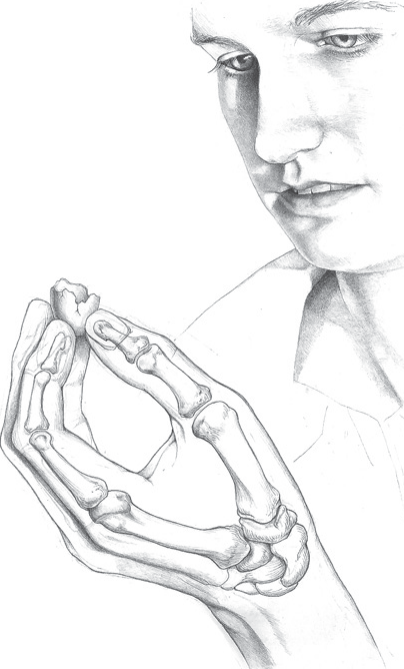
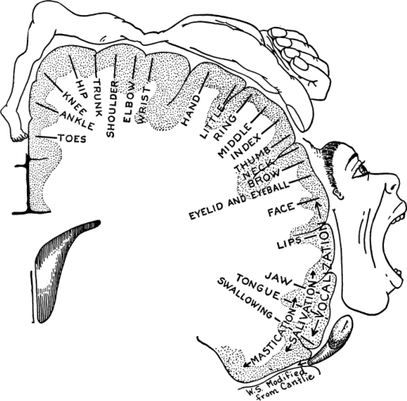
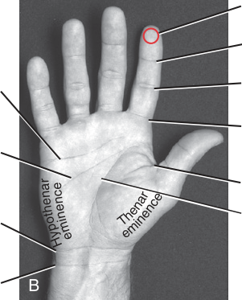
Hình 8.3B cho thấy một số đặc điểm của giải phẫu bên ngoài của bàn tay. Lưu ý các nếp gấp gan tay, hay các đường, hiện diện trong da của lòng bàn tay. Chúng hoạt động như những "bản lề" biểu bì, đánh dấu nơi da gấp lại trên chính nó trong lúc vận động, và để tăng độ bám dính của da gan tay nhằm củng cố độ an toàn của cầm nắm. Ở mặt gan tay (trước) của cổ tay có các nếp gấp cổ tay gần và xa. Về mặt lâm sàng, điều thú vị là nếp gấp cổ tay xa đánh dấu vị trí bờ gần của dây chằng ngang cổ tay (transverse carpal ligament) nằm bên dưới. Nếp gấp ô mô cái được hình thành do sự gấp lại của lớp bì khi ngón cái di chuyển ngang qua lòng bàn tay. Các nếp gấp ngón gần nằm ở xa hơn đường khớp thực sự của các khớp MCP. Các nếp gấp ngón giữa và xa nằm nông hơn tương ứng so với các khớp DIP và PIP. Các bác sĩ lâm sàng sử dụng nhiều nếp gấp này làm mốc để giúp chế tạo và áp dụng các nẹp chỉnh hình bàn tay (hand orthoses, splints).
Các xương đốt bàn tay, cũng như các ngón, được chỉ định theo số thứ tự từ 1 đến 5, bắt đầu từ phía quay (lateral).
Mỗi xương đốt bàn tay có những đặc điểm giải phẫu tương tự nhau (xem Hình 8.4 và 8.5). Xương đốt bàn tay thứ nhất (ngón cái) là ngắn nhất và chắc nhất; xương thứ hai thường dài nhất, và chiều dài của ba xương còn lại giảm dần từ hướng quay sang hướng trụ (medial).
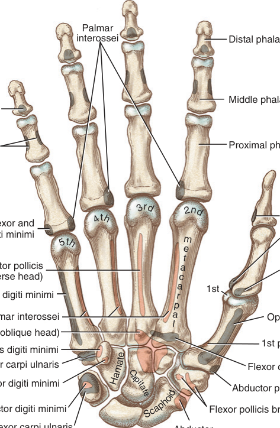
Ngón cái chỉ có hai đốt ngón và do đó chỉ có một khớp liên đốt (IP).
Các Khớp Tham Gia Chung Cho Mỗi "Tia" Của Bàn Tay (Articulations Common to Each "Ray" of the Hand)
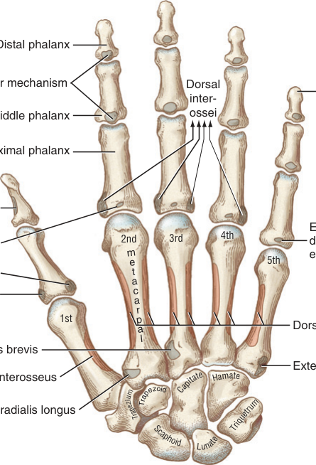
Các Đặc Điểm Giải Phẫu Xương Của Một Xương Đốt Bàn Tay (Osteologic Features of a Metacarpal)
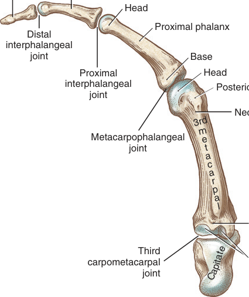
Mỗi xương đốt bàn tay có một thân dài với các mặt khớp ở mỗi đầu (xem Hình 8.6). Mặt gan tay của thân hơi lõm theo chiều dọc để chứa nhiều cơ và gân trong vùng này. Đầu gần của nó, hay nền, khớp với một hoặc nhiều xương cổ tay. Các nền của xương đốt bàn tay từ thứ hai đến thứ năm có những mặt khớp nhỏ để khớp với các nền xương đốt bàn tay lân cận.
Đầu xa của mỗi xương đốt bàn tay có một đầu lồi lớn. Các đầu của xương đốt bàn tay từ thứ hai đến thứ năm lộ rõ như những "đốt nắm đấm" (knuckles) ở mặt mu tay của một nắm đấm siết chặt. Ngay phía gần của đầu là cổ xương đốt bàn tay — một vị trí thường gặp của gãy xương, đặc biệt là ở ngón thứ năm. Một cặp củ mặt sau đánh dấu các vị trí bám của các dây chằng bên của các khớp MCP.
Khi bàn tay nghỉ ở tư thế giải phẫu, xương đốt bàn tay của ngón cái nằm trong một mặt phẳng khác với các ngón khác. Các xương đốt bàn tay từ thứ hai đến thứ năm được căn chỉnh nói chung nằm cạnh nhau, với các mặt gan tay hướng ra trước.
Vị trí của xương đốt bàn tay ngón cái, tuy nhiên, bị xoay gần 90 độ về phía trong (tức là hướng tâm, internally), so với các ngón khác (xem Hình 8.3). Sự xoay này đặt mặt gan tay rất nhạy cảm của ngón cái về phía đường giữa của bàn tay. Cầm nắm tối ưu đòi hỏi ngón cái gấp trong một mặt phẳng nói chung cắt ngang, thay vì song song với, mặt phẳng của các ngón đang gấp. Thêm vào đó, xương đốt bàn tay của ngón cái nằm về phía trước, hay gan tay, so với các xương đốt bàn tay khác (xem Hình 7.14). Vị trí này của xương đốt bàn tay thứ nhất và xương thang được ảnh hưởng mạnh mẽ bởi sự phóng ra về phía gan tay của cực xa xương thuyền.
Vị trí của xương đốt bàn tay thứ nhất cho phép toàn bộ ngón cái quét tự do ngang qua lòng bàn tay về phía các ngón. Hầu như tất cả các động tác cầm nắm, từ nắm chặt đến kẹp và thao tác tinh tế, đều đòi hỏi ngón cái tương tác với các ngón. Nếu thiếu một ngón cái khỏe mạnh và di động, chức năng tổng thể của bàn tay sẽ giảm đi đáng kể.
Ngón cái bị xoay về phía trong đòi hỏi một thuật ngữ đặc biệt để mô tả cả vận động lẫn vị trí của nó. Ở tư thế giải phẫu, mặt mu tay của các xương ngón cái (tức là bề mặt nơi có móng ngón cái) hướng ra phía ngoài (lateral) (Hình 8.7). Do đó, mặt gan tay hướng vào phía trong (medial), mặt quay hướng ra trước, và mặt trụ hướng ra sau. Thuật ngữ dùng để mô tả các mặt của xương cổ tay và tất cả các xương ngón khác là tiêu chuẩn: một mặt gan tay hướng ra trước, một mặt quay hướng ra ngoài, và cứ thế.
Bàn tay có 14 đốt ngón (từ gốc từ Hy Lạp phalanx, nghĩa là một hàng lính). Các đốt ngón trong mỗi ngón được gọi là đốt gần, giữa và xa (xem Hình 8.3A). Ngón cái chỉ có một đốt gần và một đốt xa.
Các Đặc Điểm Giải Phẫu Xương Của Một Đốt Ngón (Osteologic Features of a Phalanx)
Ngoại trừ khác biệt về kích thước, tất cả các đốt ngón trong một ngón cụ thể đều có hình thái tương tự nhau (xem Hình 8.5). Các đốt gần và đốt giữa của mỗi ngón có một nền lõm, một thân, và một đầu lồi. Giống như ở các xương đốt bàn tay, mặt gan tay của chúng hơi lõm theo chiều dọc. Đốt xa của mỗi ngón có một nền lõm. Ở đầu xa của nó là một mỏm tròn giúp neo phần mô mềm đầu ngón thịt vào chóp xương của mỗi ngón.
Hãy quan sát độ lõm tự nhiên của mặt gan tay bàn tay thư giãn của bạn. Việc kiểm soát độ lõm này cho phép bàn tay cầm giữ và thao tác an toàn các vật thể có nhiều hình dạng và kích thước khác nhau. Độ lõm gan tay này được hỗ trợ bởi ba hệ thống cung tích hợp: hai cung ngang và một cung dọc (Hình 8.8). Cung ngang gần được tạo thành bởi hàng xa của các xương cổ tay. Đây là một cung tĩnh, cứng, tạo nên ống cổ tay (xem Chương 7). Giống như hầu hết các cung trong các tòa nhà và cầu, các cung của bàn tay được hỗ trợ bởi một cấu trúc đá khóa (keystone) trung tâm. Xương cả là đá khóa của cung ngang gần, được gia cố bằng nhiều tiếp xúc với các xương khác, và các dây chằng gian cổ tay khỏe.
Cung ngang xa của bàn tay đi qua các khớp đốt bàn tay–ngón tay (MCP). Trái ngược với sự cứng nhắc của cung gần, các cạnh của cung xa có khả năng di động. Để nhận thức sự di động này, hãy hình dung biến đổi bàn tay của bạn từ một bề mặt hoàn toàn phẳng thành một bề mặt hình cái tách bao quanh một quả bóng chày hoặc một quả bưởi. Sự linh hoạt ngang trong bàn tay xảy ra khi các xương đốt bàn tay ngoại vi (thứ nhất, thứ tư và thứ năm) "gập" lại quanh các xương đốt bàn tay trung tâm ổn định hơn (thứ hai và thứ ba). Đá khóa của cung ngang xa được tạo thành bởi các khớp MCP của các xương đốt bàn tay trung tâm này.
Cung dọc của bàn tay đi theo hình dạng chung của tia thứ hai và thứ ba. Đầu gần của cung này được liên kết chắc chắn với khối xương cổ tay bởi các khớp cổ tay–đốt bàn tay (CMC). Những khớp nối tương đối cứng nhắc này cung cấp một yếu tố quan trọng của sự ổn định dọc cho bàn tay. Đầu xa của cung rất di động, có thể được minh họa bằng cách chủ động gấp và duỗi các ngón. Đá khóa của cung dọc bao gồm các khớp MCP thứ hai và thứ ba; lưu ý rằng các khớp này đóng vai trò là đá khóa cho cả cung dọc và cung ngang xa.
Như được minh họa trong Hình 8.8, cả ba cung của bàn tay được liên kết cơ học với nhau. Cả hai cung ngang được nối với nhau bởi một "dầm neo cứng" (rigid tie-beam) do các xương đốt bàn tay thứ hai và thứ ba cung cấp. Ở bàn tay khỏe mạnh, sự liên kết cơ học này củng cố toàn bộ hệ thống cung. Tuy nhiên, ở bàn tay bị bệnh khớp, một sự cố cấu trúc tại bất kỳ cung nào cũng có thể làm suy yếu cung khác. Một ví dụ điển hình là sự phá hủy các khớp MCP do viêm khớp dạng thấp nặng. Chủ đề này sẽ được nhắc lại ở cuối chương này.
Trước khi tiến tới nghiên cứu cấu trúc và chức năng của các khớp, thuật ngữ mô tả vận động của các ngón phải được định nghĩa. Các mô tả sau đây giả định rằng một vận động cụ thể bắt đầu từ tư thế giải phẫu, với khuỷu tay duỗi, cẳng tay sấp hoàn toàn, và cổ tay ở vị trí trung tính. Vận động của các ngón được mô tả theo cách tiêu chuẩn bằng cách sử dụng các mặt phẳng chính của cơ thể: gấp và duỗi xảy ra trong mặt phẳng trán (sagittal plane), và dạng và khép xảy ra trong mặt phẳng trước (frontal plane) (Hình 8.9A–D). Ngón giữa là ngón tham chiếu để đặt tên cho dạng và khép. Vận động qua lại của ngón giữa được gọi là lệch quay (radial deviation) và lệch trụ (ulnar deviation).
Bởi vì toàn bộ ngón cái tự nhiên bị xoay gần 90 độ so với các ngón, thuật ngữ dùng để mô tả vận động ngón cái khác với thuật ngữ cho các ngón (xem Hình 8.9E–I). Gấp là vận động của mặt gan tay ngón cái trong mặt phẳng trước ngang qua lòng bàn tay. Duỗi đưa ngón cái trở lại vị trí giải phẫu của nó. Dạng là vận động về phía trước của ngón cái ra khỏi lòng bàn tay trong một mặt phẳng gần như đứng (sagittal). Khép đưa ngón cái trở lại mặt phẳng của bàn tay. (Mặc dù không được sử dụng trong sách này, các thuật ngữ khác thường dùng để mô tả các vận động của ngón cái bao gồm khép trụ cho gấp, dạng quay cho duỗi, và dạng gan tay cho dạng.) Đối chiếu (opposition) là một thuật ngữ đặc biệt mô tả vận động của ngón cái ngang qua lòng bàn tay, tạo tiếp xúc trực tiếp với chóp của bất kỳ ngón nào. Như sẽ được mô tả, đối chiếu ngón cái là một vận động phức tạp, thiết yếu cho chức năng tối ưu của bàn tay. Phục vị (reposition) là một vận động từ tư thế đối chiếu đầy đủ trở về vị trí giải phẫu. Thuật ngữ đặc biệt này dùng để định nghĩa vận động của ngón cái đóng vai trò là cơ sở để đặt tên cho các cơ tác động lên ngón cái (ví dụ, cơ đối chiếu ngón cái — opponens pollicis, cơ duỗi ngón cái dài — extensor pollicis longus, và cơ khép ngón cái — adductor pollicis).
Các khớp cổ tay–đốt bàn tay (CMC) của bàn tay tạo thành sự khớp nối giữa hàng xa của các xương cổ tay và các nền của năm xương đốt bàn tay. Các khớp này nằm ở vùng rất gần của bàn tay.
Chức năng của các khớp CMC cho phép độ lõm của lòng bàn tay khớp vừa vặn quanh nhiều vật thể. Đặc điểm này là một trong những chức năng ấn tượng nhất của bàn tay người. Ví dụ, các vật hình trụ có thể nằm gọn trong lòng bàn tay, với các ngón trỏ và giữa được đặt để củng cố việc cầm nắm. Nếu không có khả năng này, sự khéo léo của bàn tay sẽ giảm xuống còn một vận động cầm nắm dạng bản lề nguyên thủy.
Khớp CMC thứ hai được tạo thành qua sự khớp nối giữa nền mở rộng của xương đốt bàn tay thứ hai và mặt xa của xương thang nhỏ, và ở mức độ thấp hơn là xương cả và xương thang (xem Hình 8.4 và 8.5). Khớp CMC thứ ba được tạo thành chủ yếu bởi sự khớp nối giữa nền xương đốt bàn tay thứ ba và mặt xa của xương cả. Khớp CMC thứ tư gồm sự khớp nối giữa nền xương đốt bàn tay thứ tư và mặt xa của xương móc, và ở mức độ thấp hơn là xương cả. Khớp CMC thứ năm gồm sự khớp nối giữa nền xương đốt bàn tay thứ năm và chỉ mặt xa của xương móc. (Xương móc tiếp nhận cả xương đốt bàn tay thứ tư và thứ năm, tương tự như cách xương cuboid của bàn chân tiếp nhận cả xương bàn chân thứ tư và thứ năm.) Các nền của xương đốt bàn tay từ thứ hai đến thứ năm có những mặt khớp nhỏ để bám vào nhau qua các khớp gian đốt bàn tay. Các khớp này giúp ổn định các nền của xương đốt bàn tay từ thứ hai đến thứ năm, từ đó củng cố các khớp cổ tay–đốt bàn tay.
Hình 8.10 cho thấy một minh họa cơ học về tính di động tương đối tại các khớp CMC. Các ngón thứ hai và thứ ba được nối cứng chắc vào hàng cổ tay xa, tạo thành một trụ trung tâm ổn định, cố định xuyên suốt bàn tay. Ngược lại, các khớp CMC ngoại vi hơn tạo thành những biên độ quay và trụ di động, có khả năng "gập"
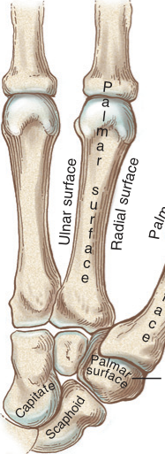
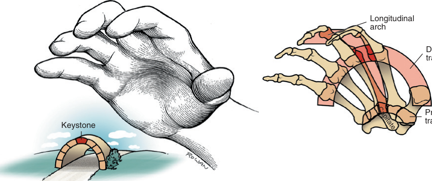
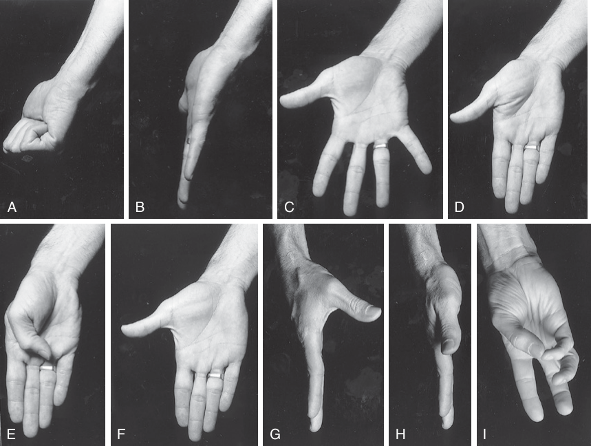
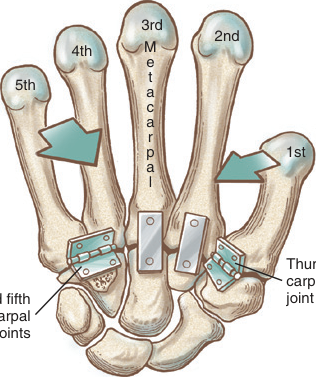
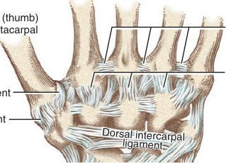
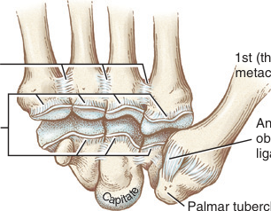
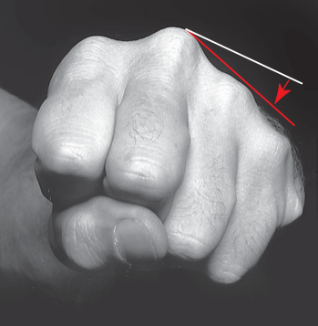
Phạm vi gấp và duỗi của khớp CMC thứ năm tăng lên, tuy nhiên, trung bình 44 độ khi khớp CMC thứ tư nằm sát nhau không bị ràng buộc và tự do di chuyển. Nghiên cứu này chứng minh một sự liên kết vận động học chặt chẽ giữa các khớp CMC thứ tư và thứ năm, có thể một phần do các dây chằng gian đốt bàn tay phát triển tốt. Sự liên kết vận động học này nên được xem xét khi đánh giá và điều trị các hạn chế vận động ở vùng này của bàn tay.
Tính di động tương đối lớn hơn cho phép tại các khớp CMC trụ trở nên rõ ràng qua vận động của các đầu xương đốt bàn tay thứ tư và thứ năm khi nắm chặt một nắm đấm (Hình 8.13). Tính di động tăng lên của các khớp CMC thứ tư và thứ năm cải thiện hiệu quả của việc cầm nắm, cũng như tăng cường tương tác chức năng với ngón cái có thể đối chiếu. Hình dạng không đều và đa dạng của các mặt khớp CMC này ngăn cản các mô tả vận động học khớp chuẩn (roll-and-slide arthrokinematic) thông thường.
Khớp CMC của ngón cái nằm ở nền của tia thứ nhất, giữa xương đốt bàn tay và xương thang (xem Hình 8.7). Khớp này là khớp phức tạp nhất trong số các khớp CMC, cho phép các vận động rộng rãi và thiết yếu của ngón cái. Hình dạng yên ngựa đặc biệt cho phép ngón cái đối chiếu hoàn toàn, từ đó dễ dàng tiếp xúc với các chóp gan tay của các ngón khác. Thông qua hành động này, ngón cái có thể ôm quanh các vật thể được giữ trong lòng bàn tay. Đối chiếu nâng cao đáng kể sự khéo léo của việc cầm nắm ở người.
Các khớp CMC của các ngón được bao quanh bởi các bao khớp hoạt dịch và được gia cố bằng nhiều dây chằng cổ tay–đốt bàn tay và gian đốt bàn tay ở mặt mu và gan tay. Các dây chằng mu tay đặc biệt phát triển tốt (Hình 8.11).
Các khớp CMC của các ngón thứ hai và thứ ba khó phân loại, dao động từ khớp phẳng đến khớp yên ngựa phức tạp (Hình 8.12). Các mặt khớp đan cài răng cưa của chúng, kết hợp với các dây chằng khỏe, cho phép rất ít vận động. Như đã đề cập trước đó, sự ổn định tại các khớp này tạo thành trụ trung tâm của bàn tay. Sự ổn định vốn có của các xương đốt bàn tay quay‑trung tâm này cũng cung cấp một điểm bám vững chắc cho một số cơ then chốt, bao gồm cơ duỗi cổ tay quay dài và ngắn, cơ gấp cổ tay quay, và cơ khép ngón cái.
Các nền hơi lồi của xương đốt bàn tay thứ tư và thứ năm khớp với một mặt khớp hơi lõm do xương móc tạo thành. Hai khớp CMC trụ này đóng góp một yếu tố di động tinh tế nhưng rất quan trọng cho bàn tay. Như được minh họa trong Hình 8.10, các khớp CMC thứ tư và thứ năm cho phép biên trụ của bàn tay gập về phía trung tâm của bàn tay, từ đó làm sâu thêm độ lõm gan tay. Tính di động này — thường được gọi là một vận động "gập thành cái tách" (cupping) — xảy ra chủ yếu bằng sự gấp và xoay "về phía trong" của các xương đốt bàn tay trụ về phía ngón giữa. Các phép đo tính di động thụ động tối đa trên tay người chết (cadaver) đã cho thấy rằng, trung bình, khớp CMC thứ tư gấp và duỗi khoảng 20 độ và xoay về phía trong khoảng 27 độ. Khớp CMC thứ năm (khi được thử với khớp CMC thứ tư bị ràng buộc chặt) gấp và duỗi khoảng 28 độ và xoay về phía trong 22 độ.
Các dây chằng bên quay và chéo sau là dày và khỏe nhất.68,78 Bắt nguồn từ các mặt quay và củ sau‑quay của xương thang, các dây chằng này bị kéo căng khi khớp CMC ở vị trí tham gia và có chức năng nhất: đối chiếu, dạng, hoặc gấp.28 Các dây chằng bên quay và chéo sau được cung cấp nhiều thụ thể cảm giác, có thể làm tăng cường sự nhận biết bản thể (proprioception), bảo vệ khớp, và sự kiểm soát thần kinh‑cơ của các vận động quan trọng liên quan đến đối chiếu.68,78,89
Viêm khớp dạng thấp của khớp CMC ngón cái xảy ra thường xuyên, và thường liên quan đến thoái hóa sụn khớp và sự mòn các dây chằng bao khớp. Mặc dù tất cả các dây chằng có thể bị ảnh hưởng, sự đứt của dây chằng chéo trước hoặc dây chằng bên quay thường dẫn đến trật về phía quay của khớp, tạo thành một "cái gù" đặc trưng ở nền ngón cái.97,106,123
Khớp CMC của ngón cái là khớp yên ngựa điển hình của cơ thể (Hình 8.15). Đặc điểm đặc trưng của một khớp yên ngựa là mỗi mặt khớp lồi theo một chiều và lõm theo chiều kia. Đường kính dọc của mặt khớp xương thang nói chung lõm theo hướng gan tay‑mu tay. Mặt này tương tự như đường viền trước‑sau của yên ngựa. Đường kính ngang trên mặt khớp xương thang nói chung lồi theo hướng trong‑ngoài — một hình dạng tương tự như đường viền bên‑bên của yên ngựa. Đường cong của mặt khớp gần của xương đốt bàn tay ngón cái có hình dạng bù (reciprocal) với hình dạng được mô tả cho xương thang (xem Hình 8.15). Đường kính dọc dọc theo mặt khớp của xương đốt bàn tay lồi theo hướng gan tay‑mu tay; đường kính ngang của nó lõm theo hướng trong‑ngoài.
Bao khớp tại khớp CMC của ngón cái tự nhiên lỏng lẻo để thích nghi với một tầm vận động lớn và tròn trịa. Tuy nhiên, bao khớp được gia cố bằng sức căng được tạo ra bên trong các dây chằng được nhúng, và bởi các lực do hệ cơ bao trùm tạo ra.
Nhiều tên gọi đã được dùng để mô tả các dây chằng tại khớp CMC của ngón cái, và điều này đã dẫn đến sự nhầm lẫn khi so sánh giải phẫu chức năng của chúng.28,53,78,101 Số lượng các dây chằng có tên, riêng biệt được báo cáo là đi ngang qua nền ngón cái dao động từ ba đến ít nhất bảy.10,49,68,78,127 Sự tranh luận cũng tồn tại trong tài liệu về tầm quan trọng chức năng của các dây chằng khác nhau.78 Bản này mô tả năm dây chằng, mỗi dây chằng bổ sung một yếu tố ổn định độc đáo và quan trọng cho khớp CMC (Hình 8.14). Như một tập hợp, các dây chằng giúp kiểm soát mức độ và hướng của vận động khớp, duy trì sự thẳng hàng và ổn định khớp, và tiêu tán các lực do cơ hoạt hóa tạo ra. Bảng 8.1 tóm tắt các điểm bám chính của các dây chằng của khớp CMC ngón cái và các vận động kéo hoặc cuộn chúng tương đối căng.10,28,68,127 Các dây chằng bên quay và chéo sau nằm sát nhau giúp kiểm soát các vận động quan trọng liên quan đến đối chiếu.68,78,89
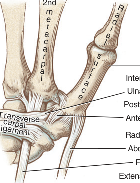
| Tên | Điểm bám gần | Điểm bám xa | Ghi chú |
|---|---|---|---|
| Chéo trước (gan tay)† | Mỏm gan tay trên xương thang | Nền gan tay ("mỏ chim" — beak) của xương đốt bàn tay ngón cái | Dây chằng mỏng và yếu; lỏng lẻo khi đối chiếu, gấp và dạng; căng khi duỗi hoàn toàn (tư thế "ngón cái duỗi ngược" — hitch hiker) |
| Bên trụ | Mặt quay của dây chằng ngang cổ tay | Nền gan tay‑trụ của xương đốt bàn tay ngón cái | Căng khi dạng và duỗi |
| Gian đốt bàn tay | Nền mu‑quay của xương đốt bàn tay thứ hai | Nền gan tay‑trụ của xương đốt bàn tay ngón cái cùng với dây chằng bên trụ | Căng khi đối chiếu, gấp và dạng |
| Bên quay‡ | Mặt quay của xương thang | Nền mu tay của xương đốt bàn tay ngón cái (kề vị trí bám của cơ dạng ngón cái dài) | Dây chằng tương đối dày và khỏe; được phủ dày đặc các sợi cảm giác; Căng khi đối chiếu, gấp và dạng; bộ ổn định chính của khớp CMC ở tư thế đối chiếu |
| Chéo sau | Góc sau‑quay của xương thang | Nền gan tay‑trụ của xương đốt bàn tay ngón cái | Như ở hàng ngay trên |
*Hầu hết tên dây chằng dựa trên sự bám của chúng vào mặt xương thang, không phải xương đốt bàn tay ngón cái. †Thường được mô tả là có các sợi nông và sâu ("mỏ chim" — beak). ‡Thường được gọi là dây chằng chéo‑quay (dorsal‑radial), hoặc "phức hợp dây chằng mu tay" (dorsal ligament complex) khi kết hợp với dây chằng chéo sau.
Các vận động tại khớp CMC xảy ra chủ yếu trong hai bậc tự do. Dạng và khép xảy ra nói chung trong mặt phẳng đứng (sagittal plane), và gấp và duỗi xảy ra nói chung trong mặt phẳng trước (frontal plane). Trục xoay cho mỗi mặt phẳng vận động đi qua thành viên lồi của khớp nối.54
Đối chiếu và phục vị của ngón cái về mặt cơ học bắt nguồn từ hai mặt phẳng vận động chính tại khớp CMC. Vận động học của đối chiếu và phục vị được thảo luận sau mô tả về hai vận động chính.
Ở tư thế khép của khớp CMC, ngón cái nằm trong mặt phẳng của bàn tay. Gập tối đa, ngược lại, đặt xương đốt bàn tay ngón cái khoảng 45 độ về phía trước so với mặt phẳng của lòng bàn tay. Gập đầy đủ mở rộng khe mạng (web space) của ngón cái, tạo thành một đường cong lõm rộng hữu ích để cầm nắm các vật lớn.
Vận động học khớp của dạng và khép dựa trên mặt khớp lồi của xương đốt bàn tay ngón cái di chuyển trên đường kính lõm (dọc) cố định của xương thang (xem lại Hình 8.15). Trong lúc dạng, mặt khớp lồi của xương đốt bàn tay lăn theo hướng gan tay và trượt về phía mu tay trên mặt lõm của xương thang (Hình 8.16). Gập đầy đủ tại khớp CMC kéo dài cơ khép ngón cái và hầu hết các dây chằng tại khớp CMC.127 Vận động học khớp của khép xảy ra theo thứ tự ngược lại với những gì được mô tả cho dạng.
Chủ động thực hiện gấp và duỗi khớp CMC của ngón cái có liên quan đến các lượng xoay trục thay đổi của xương đốt bàn tay.45 Trong lúc gấp, xương đốt bàn tay xoay về phía trong (tức là hướng về ngón thứ ba); trong lúc duỗi, xương đốt bàn tay xoay về phía ngoài (tức là ra xa ngón thứ ba). (Các sự xoay trong và ngoài này cũng được gọi tương ứng là sấp và ngửa.) Những "sự xoay tự động" này trở nên rõ ràng qua sự thay đổi định hướng của móng ngón cái giữa duỗi hoàn toàn và gấp hoàn toàn. Sự xoay này không được coi là một bậc tự do thứ ba vì nó không thể thực hiện độc lập với các vận động khác.
Ở tư thế giải phẫu, khớp CMC có thể duỗi thêm 10 đến 15 độ. Từ tư thế duỗi hoàn toàn, xương đốt bàn tay ngón cái gấp ngang qua lòng bàn tay khoảng 45 đến 50 độ.
Vận động học khớp của gấp và duỗi tại khớp CMC dựa trên mặt khớp lõm của xương đốt bàn tay di chuyển ngang qua đường kính lồi (ngang) trên xương thang (xem lại Hình 8.15). Trong lúc gấp, mặt lõm của xương đốt bàn tay lăn và trượt theo hướng trụ (trong).
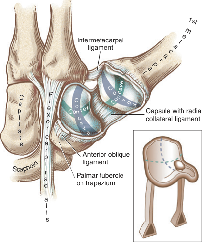
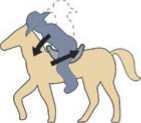
Vận động phức tạp của đối chiếu là một tổ hợp của các vận động chính khác đã được mô tả cho khớp CMC.76 Để dễ thảo luận, Hình 8.18A cho thấy cung đối chiếu đầy đủ được chia thành hai pha. Trong pha 1, xương đốt bàn tay ngón cái dạng ra. Trong pha 2, xương đốt bàn tay đã dạng gấp và xoay về phía trong ngang qua lòng bàn tay về phía ngón út. Hình 8.18B cho thấy chi tiết vận động học của vận động phức tạp này. Trong lúc dạng, nền xương đốt bàn tay ngón cái đi theo một đường trong hướng gan tay ngang qua mặt xương thang. Một vận động như vậy kéo căng một số dây chằng ngang qua khớp CMC, chẳng hạn như dây chằng chéo sau (xem dây chằng chéo sau trong Hình 8.18B).127 Sự kéo căng này, cộng với sự hoạt hóa các cơ như cơ đối chiếu ngón cái, hướng dẫn phần lớn vận động học của pha gấp–xoay về phía trong. Nền của xương đốt bàn tay đang gấp xoay hơi về phía trong, trong một rãnh trên mặt xương thang.143 Các lực cơ và dây chằng này một cách an toàn định hướng đường đi của xương đốt bàn tay đang gấp và xoay về phía trong tới mặt trong của mặt khớp xương thang. Những độ cuối cùng của đối chiếu tiếp tục kéo căng một số dây chằng bao khớp (Hình 8.17A).54 Một rãnh nông trong đường kính ngang của xương thang giúp hướng dẫn sự xoay nhẹ về phía trong của xương đốt bàn tay. Gấp hoàn toàn kéo dài các mô như dây chằng bên quay.127
Trong lúc duỗi khớp CMC, xương đốt bàn tay lõm lăn và trượt theo hướng bên (quay) ngang qua đường kính ngang của khớp (xem Hình 8.17B). Rãnh trên mặt khớp xương thang hướng xương đốt bàn tay vào sự xoay nhẹ về phía bên.24 Duỗi hoàn toàn kéo căng các dây chằng nằm ở mặt trụ của khớp, chẳng hạn như dây chằng chéo trước.28,127 Bảng 8.2 trình bày một bản tóm tắt vận động học cho gấp‑duỗi và dạng‑khép tại khớp CMC của ngón cái.
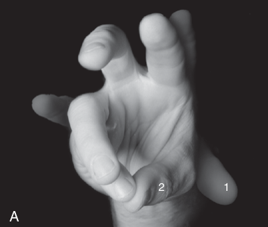
Khả năng đối chiếu chính xác và chắc chắn ngón cái với các chóp của các ngón khác có lẽ là biểu hiện tối thượng của sức khỏe chức năng của ngón này — và có thể nói là của toàn bộ bàn tay. Hiệu quả của các động tác kẹp và cầm nắm mạnh của bàn tay phụ thuộc vào khả năng đối chiếu của ngón cái.
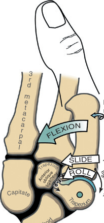
| Vận động | Vận động học xương | Hình học khớp | Vận động học khớp |
|---|---|---|---|
| Dạng và khép | Vận động mặt phẳng đứng quanh một trục xoay trong‑ngoài đi qua xương đốt bàn tay | Đường kính lồi (dọc) của xương đốt bàn tay di chuyển trên một mặt lõm của xương thang | Dạng: lăn gan tay và trượt mu tay Khép: lăn mu tay và trượt gan tay |
| Gấp và duỗi | Vận động mặt phẳng trước quanh một trục xoay trước‑sau đi qua xương thang | Đường kính lõm (ngang) của xương đốt bàn tay di chuyển trên một mặt lồi của xương thang | Gấp: lăn và trượt về phía trong Duỗi: lăn và trượt về phía bên |
*Đối chiếu và phục vị không được trình bày vì chúng bắt nguồn từ hai mặt phẳng vận động chính (xem văn bản để biết giải thích thêm).
Các lực từ cả cơ được hoạt hóa và dây chằng bị kéo căng đều quan trọng trong việc thúc đẩy sự tương hợp (congruity) và ổn định tối đa của khớp CMC một khi đạt tới đối chiếu đầy đủ. Theo đó, đối chiếu hoàn toàn được coi là tư thế khít (close‑packed position) của khớp CMC.122 Thú vị là, sự xoay cuối cùng, hay xoay tại chỗ (spin), của xương đốt bàn tay ngón cái khi khớp tiến tới đối chiếu đầy đủ đã được mô tả như một "sự xoay mô‑men vặn về nhà dạng vít" (screw‑home torque rotation)28 — một cơ chế được mô tả tương tự cho đầu gối khi nó được khóa chắc chắn và xoay trong duỗi hoàn toàn.
Như được ghi nhận bởi sự thay đổi định hướng của móng ngón cái trong Hình 8.18A, đối chiếu hoàn toàn bao gồm 45 đến 60 độ xoay về phía trong của ngón cái.20 Mặc dù khớp CMC ngón cái chiếm phần lớn sự xoay này, một lượng nhỏ hơn xảy ra dưới dạng các vận động phụ tại các khớp MCP và IP. Các quan sát từ chụp X‑quang điện ảnh (cineradiography) và chụp CT cho thấy xương thang cũng xoay nhẹ về phía trong so với xương thuyền và xương thang nhỏ, từ đó khuếch đại độ lớn cuối cùng của sự xoay xương đốt bàn tay. Các ngón út và nhẫn đóng góp gián tiếp vào đối chiếu thông qua một vận động gập thành cái tách tại các khớp CMC thứ tư và thứ năm. Vận động này cho phép chóp ngón cái dễ dàng tiếp xúc với các chóp của ngón út và nhẫn hơn.
Phục vị của khớp CMC đưa xương đốt bàn tay từ tư thế đối chiếu đầy đủ trở về vị trí giải phẫu. Vận động này liên quan đến vận động học khớp của cả khép và duỗi–xoay bên của xương đốt bàn tay ngón cái.
TẬP TRUNG ĐẶC BIỆT 8.1 — Viêm Khớp Dạng Thấp Của Khớp Cổ Tay–Đốt Bàn Tay Ngón Cái: Một Tình Trạng Phổ Biến Và Có Khả Năng Gây Tàn Tật (Osteoarthritis of the Carpometacarpal Joint of the Thumb: A Common and Potentially Disabling Condition)
Chức năng tối ưu của khớp CMC ngón cái đòi hỏi nó phải đủ di động nhưng đồng thời ổn định đáng kể. Những chức năng có vẻ mâu thuẫn này bình thường được kiểm soát bởi sự tương tác giữa sức căng trong các dây chằng bao khớp và sự hoạt hóa các cơ. Tuy nhiên, sự tương tác này tự nhiên tạo ra các lực ép và lực cắt tại bề mặt tiếp xúc của khớp. Các lực này tăng lên đáng kể khi các đòi hỏi cơ bắp tăng lên ở ngón cái. Trong một cái kẹp "chìa khóa" (key pinch) mạnh mẽ, chẳng hạn, một lực ép lớn hơn 12 lần xảy ra bên trong khớp CMC của ngón cái so với các lực tiếp xúc được áp dụng ở đầu xa của ngón cái.23 Độ lớn của lực "phản ứng" khớp, kết hợp với tần số cao của sự áp dụng nó, được lý thuyết hóa là một yếu tố thuận lợi cho sự phát triển viêm khớp dạng thấp ở nền ngón cái.106 Tình trạng thoái hóa phổ biến này nhận được nhiều sự chú ý phẫu thuật hơn bất kỳ tình trạng liên quan đến viêm khớp dạng thấp nào khác của chi trên.107
Viêm khớp dạng thấp có thể phát triển tại khớp CMC thứ phát sau chấn thương cấp tính hoặc, có lẽ phổ biến hơn, từ chấn thương tích lũy mức độ thấp liên quan đến một nghề nghiệp hoặc sở thích vất vả.37,90 Các yếu tố khác ngoài căng thẳng và sử dụng quá mức có thể gây viêm khớp dạng thấp ở nền ngón cái, bao gồm di truyền hoặc sự bất đối xứng tự nhiên tinh tế của các mặt khớp. Bất kể nguyên nhân cụ thể, những người cần được chăm sóc y tế vì viêm khớp khớp CMC ngón cái thường báo cáo đau là triệu chứng nổi bật nhất khi đến khám, nhưng cũng có thể trải nghiệm sự lỏng khớp và không ổn định.108 Một nền ngón cái đau và không ổn định làm giảm đáng kể tiềm năng chức năng của toàn bộ bàn tay, và do đó của toàn bộ chi trên.
Sự thoái hóa liên quan đến viêm khớp dạng thấp của khớp CMC thường bắt đầu ở vùng gan tay của khớp.71 Những người bị viêm khớp dạng thấp tiến triển thường phát triển một cái kẹp yếu, sự hình thành gai xương (osteophyte), sưng, trật một phần (subluxation) hoặc trật khớp (dislocation), và tiếng lạo xạo (crepitation). Thường, các giai đoạn tiến triển hơn của viêm khớp dạng thấp khớp CMC liên quan đến sự thoái hóa tại các khớp lân cận khác, bao gồm các khớp giữa xương thang và xương thuyền, và giữa xương thang và xương thang nhỏ. Tình trạng thoái hóa lan rộng hơn này thường được gọi là viêm khớp khớp nền (basilar joint arthritis) của ngón cái.97
Tài liệu cho thấy mạnh mẽ rằng viêm khớp dạng thấp vô căn của khớp CMC ngón cái phổ biến không cân xứng hơn ở phụ nữ, thường ở thập niên thứ năm và thứ sáu của họ.42,120 Sự thiên hướng liên quan đến giới tính này có thể liên quan đến sự lỏng khớp do hormone gây ra trong các dây chằng của khớp.69,141 Các nghiên cứu cũng gợi ý rằng xương thang của phụ nữ khớp kém tương hợp hơn với xương đốt bàn tay thứ nhất và có diện tích mặt khớp nhỏ hơn so với xương thang của nam giới.65,142 Các yếu tố này cũng có thể góp phần vào tỷ lệ mắc viêm khớp cao hơn ở các khớp CMC của phụ nữ.
Các can thiệp điều trị bảo tồn phổ biến cho viêm khớp dạng thấp khớp CMC ngón cái bao gồm can thiệp chỉnh hình (orthotic); sử dụng thận trọng các kỹ thuật tập luyện và vận động (mobilization);134 việc áp dụng các phương thức vật lý như lạnh và nóng; và việc sử dụng các thuốc chống viêm không steroid (NSAIDs) và tiêm corticosteroid.11,97 Thêm vào đó, bệnh nhân được hướng dẫn các cách để sửa đổi các hoạt động sinh hoạt hằng ngày nhằm "bảo vệ" nền ngón cái khỏi các lực không cần thiết lớn và để duy trì chức năng bất chấp quá trình thoái hóa.88
Can thiệp phẫu thuật thường được sử dụng khi điều trị bảo tồn không thể làm chậm sự tiến triển của đau, rối loạn chức năng, hoặc không ổn định.69,75,97,99,128 Phẫu thuật có thể liên quan đến tạo hình khớp (arthroplasty) với tái tạo các dây chằng bị hư hại, chẳng hạn như dây chằng chéo trước. Khớp thường được ổn định bằng cách đan gân của cơ gấp cổ tay quay giữa và xuyên qua các xương lân cận.52 Xương thang thoái hóa có thể được để nguyên hoặc thay thế bằng một "vật đệm" (spacer) gồm một gân cuộn hoặc vật liệu khác. Mặc dù bệnh nhân thường báo cáo sự cải thiện chức năng đáng kể và giảm đau sau can thiệp phẫu thuật, thành công lâu dài có thể bị cản trở bởi vận động học khớp phức tạp kết hợp với các lực lớn tự nhiên xảy ra tại khớp CMC.47,52,69 Trong một số trường hợp, một sự hợp khớp (arthrodesis) của khớp cổ tay–đốt bàn tay được chỉ định, đặc biệt cho những người trẻ tuổi và hoạt động thể chất.
Các khớp đốt bàn tay–ngón tay (MCP) của các ngón là những khớp nối hình trứng tương đối lớn, được tạo thành giữa các đầu lồi của các xương đốt bàn tay và các mặt lõm nông của các đốt ngón gần (Hình 8.19). Vận động có ý thức tại khớp MCP xảy ra chủ yếu trong hai mặt phẳng: gấp và duỗi trong mặt phẳng đứng, và dạng và khép trong mặt phẳng trước.
Sự ổn định cơ học tại khớp MCP rất quan trọng đối với cơ sinh học tổng thể và sự ổn định kiến trúc của bàn tay. Như đã thảo luận trước đó, các khớp MCP đóng vai trò là đá khóa hỗ trợ các cung di động của bàn tay. Ở bàn tay khỏe mạnh, sự ổn định tại các khớp MCP đạt được bởi một tập hợp phức tạp các mô liên kết đan xen. Được nhúng trong bao khớp của mỗi khớp MCP là một cặp dây chằng bên quay và trụ và một sàn gan tay (palmar plate) (Hình 8.20). Mỗi dây chằng bên có điểm bám gần trên và gần củ mặt sau của đầu xương đốt bàn tay. Đi ngang qua khớp MCP theo hướng chéo gan tay, dây chằng tạo thành hai phần riêng biệt. Phần dây (cord) mu tay hơn của dây chằng dày và khỏe, bám xa vào vùng gan tay của đầu gần đốt ngón. Phần phụ (accessory) gồm các sợi hình quạt mỏng hơn, bám xa dọc theo cạnh của sàn gan tay.60
Nằm về phía gan tay của mỗi khớp MCP là các cấu trúc giống dây chằng được gọi là các sàn gan tay (hay sàn mu tay — volar plates) (xem Hình 8.20). Thuật ngữ sàn (plate) mô tả một thành phần của sụn sợi dày, đặc. Đầu xa của mỗi sàn bám vào nền của mỗi đốt ngón gần. Ở vùng này các sàn tương đối dày và cứng. Đầu gần mỏng hơn và đàn hồi hơn bám vào xương đốt bàn tay, ngay gần đầu xương. Các bao gân sợi (fibrous digital sheaths), tạo thành các đường hầm hoặc ròng rọc cho các cơ gấp ngón ngoại lai, được neo trên mặt gan tay (trước) của các sàn gan tay. Chức năng chính của các sàn gan tay là củng cố cấu trúc của các khớp MCP, và giới hạn các cực độ của duỗi.
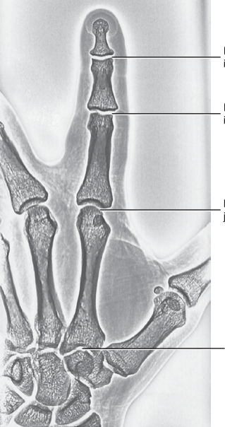
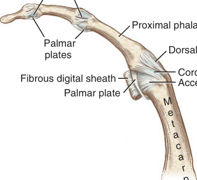
Hình 8.21 minh họa một số khía cạnh giải phẫu của các khớp MCP. Thành phần lõm của một khớp MCP được tạo thành bởi mặt khớp của đốt ngón gần, các dây chằng bên (cả phần dây và phần phụ), và mặt mu tay của sàn
gan tay (palmar plate). Các mô này tạo thành một cái hộp tiếp nhận ba mặt, rất thích hợp để nhận lấy đầu xương đốt bàn tay lớn. Cấu trúc này làm tăng thêm sự ổn định của khớp đồng thời cũng tăng diện tích tiếp xúc khớp. Bám giữa các sàn gan tay của mỗi khớp MCP là ba dây chằng đốt bàn tay ngang sâu (deep transverse metacarpal ligaments). Ba dây chằng này hợp nhất thành một cấu trúc rộng, dẹt, nối liền và buộc lỏng lẻo các xương đốt bàn tay từ thứ hai đến thứ năm.
Ngoài các vận động có ý thức là gấp‑duỗi và dạng‑khép tại các khớp MCP, các vận động phụ đáng kể cũng có thể thực hiện. Với khớp MCP thư giãn và gần như duỗi, tính di động thụ động dồi dào của đốt ngón gần so với đầu xương đốt bàn tay có thể được nhận thấy. Khớp có thể bị kéo giãn‑ép, dịch chuyển theo hướng trước‑sau và ngang, và xoay trục. Mức độ xoay trục thụ động đặc biệt đáng chú ý. Các vận động phụ dồi dào này tại các khớp MCP cho phép các ngón phù hợp tốt hơn với hình dạng của các vật được cầm giữ, từ đó tăng cường sự kiểm soát cầm nắm (Hình 8.22). Tầm của sự xoay trục thụ động này tại các khớp MCP lớn nhất ở ngón nhẫn và ngón út, với các mức xoay trung bình khoảng 30 đến 40 độ.67
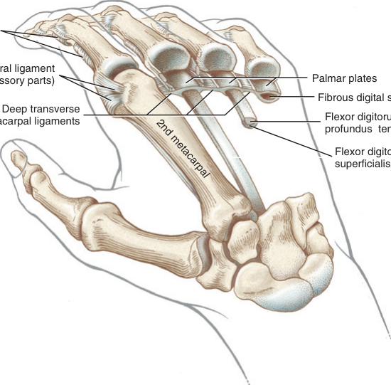
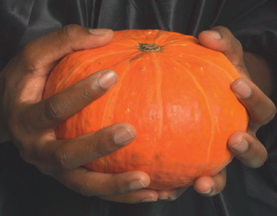
Các Khớp Đốt Bàn Tay–Ngón Tay Của Các Ngón Cho Phép Các Vận Động Có Ý Thức Chủ Yếu Trong Hai Bậc Tự Do (The Metacarpophalangeal Joints of the Fingers Permit Volitional Movements Primarily in Two Degrees of Freedom)
Trục xoay cho mỗi vận động đi qua đầu xương đốt bàn tay. Tầm gấp và duỗi tổng thể tại các khớp MCP tăng dần từ ngón thứ hai đến thứ năm: ngón thứ hai (trỏ) gấp khoảng 90 độ, và ngón thứ năm khoảng 110 đến 115 độ.7 Tính di động lớn hơn cho phép tại các khớp MCP trụ hơn tương tự như được biểu hiện tại các khớp CMC. (Sự gấp tổng thể tăng lên tại các khớp trụ hơn trở nên rõ ràng trong thiết kế "cán súng lục" (pistol‑grip) được đưa vào nhiều tay cầm.) Các khớp MCP có thể được duỗi thụ động vượt quá tư thế trung tính (0 độ) trong một tầm đáng kể 30 đến 45 độ. Dạng và khép tại các khớp MCP xảy ra khoảng 20 độ về mỗi bên của đường tham chiếu giữa được tạo bởi xương đốt bàn tay thứ ba.
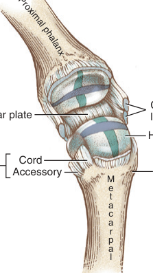
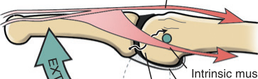
Vận động học khớp tại khớp MCP dựa trên mặt khớp lõm của đốt ngón di chuyển против mặt đầu lồi của xương đốt bàn tay. Hình 8.24A cho thấy vận động học khớp của gấp chủ động, được dẫn bởi một trong các cơ gấp ngoại lai: cơ gấp các ngón sâu. Gấp kéo căng và do đó làm tăng sức căng thụ động trong bao khớp mu tay và hầu hết phần dây dày hơn của các dây chằng bên.60 (Như sẽ được mô tả sau, phần phụ của các dây chằng bên vẫn gần như đẳng trường (isometric) về chiều dài xuyên suốt gấp và duỗi.) Ở trạng thái khỏe mạnh, sức căng thụ động tăng lên trong các mô liên kết bị kéo dài giúp hướng dẫn vận động học khớp tự nhiên của khớp. Ví dụ, như được minh họa trong Hình 8.24A, sức căng tăng lên trong bao khớp mu tay bị kéo căng (được thể hiện bằng mũi tên mỏng kéo dài) ngăn khớp "bản lề" một cách bất thường về phía ngoài trên mặt mu tay của nó. Sức căng giúp duy trì tiếp xúc chắc chắn giữa các mặt khớp khi đốt ngón gần trượt và lăn theo hướng gan tay. Sự ổn định khớp tự nhiên tăng lên của các khớp MCP gấp giúp các cơ được hoạt hóa ổn định các khớp này trong lúc cầm nắm.
Vận động học khớp của dạng và khép của các khớp MCP tương tự như những gì được mô tả cho gấp và duỗi. Trong lúc dạng khớp MCP ngón trỏ, chẳng hạn, đốt ngón gần lăn và trượt theo hướng quay (Hình 8.25). Cơ gian cốt mu thứ nhất không chỉ hướng vận động học khớp của dạng mà còn ổn định khớp về phía quay khi dây chằng bên quay dần dần lỏng ra.
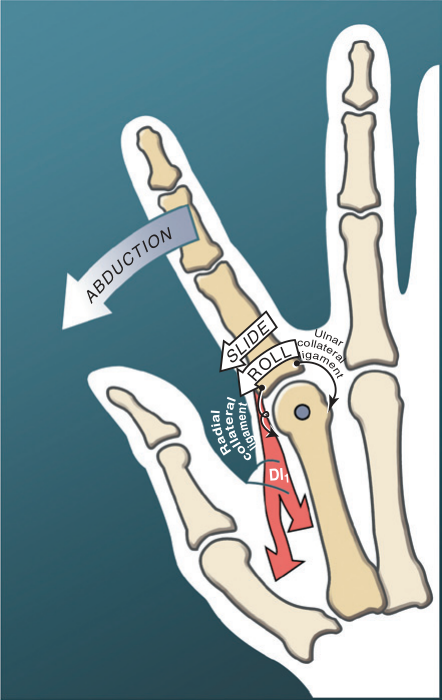
Mức độ dạng và khép chủ động tại các khớp MCP thấp đi đáng kể khi các vận động được thực hiện ở gấp hoàn toàn so với duỗi hoàn toàn. (Điều này có thể dễ dàng kiểm chứng trên chính bàn tay của bạn.) Hai yếu tố có thể giải thích sự khác biệt này.60 Thứ nhất, hầu hết các phần dây của các dây chằng bên đều căng gần gấp hoàn toàn. Sức căng thụ động được tích trữ trong các dây chằng này về mặt lý thuyết làm tăng lực ép giữa các mặt khớp, từ đó làm giảm vận động có sẵn. Thứ hai, ở tư thế gấp khoảng 70 độ, mặt khớp của các đốt ngón gần tiếp xúc với phần gan tay dẹt của các đầu xương đốt bàn tay (xem Hình 8.24A). Mặt tương đối phẳng này ngăn chặn vận động học khớp tự nhiên cần thiết cho tầm dạng và khép tối đa.
Hình 8.24B minh họa sự duỗi chủ động của khớp MCP, được dẫn thông qua sự đồng hoạt hóa phối hợp của cơ duỗi các ngón và một trong các cơ nội tại (sẽ được mô tả kỹ hơn sau trong chương này). Vận động học khớp của duỗi tương tự như những gì được minh họa cho gấp, ngoại trừ việc lăn và trượt của đốt ngón gần xảy ra theo hướng mu tay. Đã từ lâu người ta nhận ra rằng khớp MCP gấp ổn định hơn và thể hiện ít vận động phụ, thụ động hơn so với một khớp duỗi.35 Theo đó, gấp được coi là tư thế khít (close‑packed position) của khớp MCP.122 Như đã mô tả trong Chương 1, tư thế khít của hầu hết các khớp là tư thế độc đáo tại đó các vận động phụ (sự "chơi" của khớp — joint "play") là tối thiểu và sự tương hợp trong khớp là lớn nhất. Tư thế khít của khớp MCP có liên quan đến sức căng tăng lên trong nhiều dây chằng xung quanh. Nói chung, sức căng tăng lên do các dây chằng bên mang lại sự ổn định cho nền các ngón trong các hoạt động như cầm nắm hoặc kẹp, hoặc sử dụng một chiếc chìa khóa — những hoạt động thường được thực hiện ở khoảng 60 đến 70 độ gấp.51
Sự ổn định tăng lên liên quan đến gấp khớp MCP phần lớn do sự kéo dài và sự kéo căng tiếp theo đặt lên hầu hết phần dây của các dây chằng bên. Sự kéo căng này do hình dạng cam (cam shape) lệch tâm hay "không tròn" của đầu xương đốt bàn tay gây ra. Bởi hình dạng này, gấp tăng khoảng cách giữa các điểm bám gần và xa của các dây chằng này (Hình 8.26). Bởi các điểm bám xa khác nhau, phần phụ tương đối mỏng của các dây chằng bên vẫn ở chiều dài gần như không đổi xuyên suốt gấp và duỗi, do đó tạo ra một mức sức căng ổn định thấp hơn và không đổi.60
Sau chấn thương hoặc phẫu thuật, bàn tay thường được bất động bằng bột hoặc nẹp chỉnh hình (orthosis) để thúc đẩy lành vết thương và giảm đau. Nếu thời gian bất động kéo dài, các mô liên kết quanh khớp được đặt ở chiều dài ngắn lại (lỏng) sẽ thường tái tạo hình (remodel) (tức là tự rút ngắn thích nghi) ở tư thế này và sau đó tạo ra sức cản lớn hơn đối với sự kéo dài. Ngược lại, các mô liên kết bị bất động ở tư thế bị kéo dài có nhiều khả năng giữ được độ cứng bình thường của chúng. Hãy xem xét, chẳng hạn, một bệnh nhân có bàn tay phải được bất động trong 3 hoặc 4 tuần sau khi gãy cổ xương đốt bàn tay thứ tư hoặc thứ năm. Một bác sĩ lâm sàng thường sẽ bất động bàn tay với các khớp MCP gấp khoảng 70 độ. Tư thế gấp của các khớp MCP được thiết kế để đặt một sự kéo căng tương đối lên các phần dây của các dây chằng bên, do đó ngăn chúng rút ngắn. Ngăn ngừa sự thắt chặt (tightness) bên trong các sơ của dây chằng bên làm giảm khả năng phát triển một "co rút duỗi" (extension contracture) của các khớp MCP.
Trong một số trường hợp, tuy nhiên, việc bất động các khớp MCP ở tư thế gấp là chống chỉ định.12 Ví dụ, sau tái tạo phẫu thuật bao khớp mu tay hoặc cấy ghép thay thế khớp toàn phần (total joint arthroplasty), các khớp MCP phải được bất động ở tư thế duỗi (gần 0 độ). Tư thế này làm giảm sức căng trên các mô đang lành nằm ở mặt mu tay của khớp.
TẬP TRUNG ĐẶC BIỆT 8.2 — Ý Nghĩa Lâm Sàng Của Tư Thế Gấp Các Khớp Đốt Bàn Tay–Ngón Tay Của Các Ngón (Clinical Relevance of the Flexed Position of the Metacarpophalangeal Joints of the Fingers)
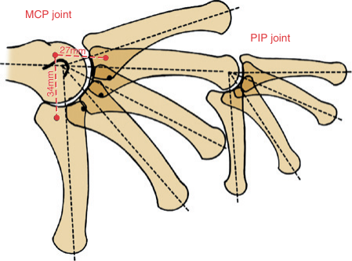
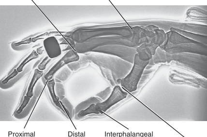
Khớp MCP của ngón cái gồm sự khớp nối giữa đầu lồi của xương đốt bàn tay thứ nhất và mặt lõm gần của đốt ngón gần ngón cái (Hình 8.27). Cấu trúc cơ bản và vận động học khớp của khớp MCP ngón cái tương tự như của các ngón. Tuy nhiên, những khác biệt rõ rệt tồn tại trong vận động học xương. Các vận động chủ động và thụ động tại khớp MCP ngón cái thấp đáng kể so với các khớp MCP của các ngón. Về mọi mặt thực tiễn, khớp MCP ngón cái chỉ cho phép một bậc tự do: gấp và duỗi trong mặt phẳng trước. Không giống như các khớp MCP của các ngón, sự duỗi khớp MCP ngón cái thường bị giới hạn chỉ vài độ. Vận động học khớp của gấp chủ động tại khớp đốt bàn tay–ngón tay ngón cái được minh họa trong Hình 8.28. Từ tư thế duỗi hoàn toàn, đốt ngón gần ngón cái có thể chủ động gấp khoảng 60 độ ngang qua lòng bàn tay về phía ngón giữa.58
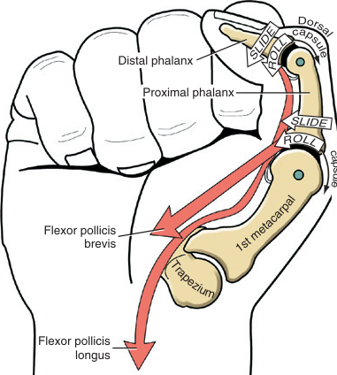
Sự dạng và khép chủ động của khớp MCP ngón cái rất hạn chế và do đó được coi là các vận động phụ. Sự hạn chế này có thể được quan sát bằng cách cố gắng chủ động dạng hoặc khép đốt ngón gần trong khi giữ chặt xương đốt bàn tay ngón cái. Cấu trúc của các dây chằng bên và sự cấu hình xương của khớp này rất có thể chịu trách nhiệm hạn chế vận động này — một sự hạn chế mang lại sự ổn định dọc tự nhiên xuyên suốt toàn bộ tia của ngón cái.
Mặc dù sự dạng và khép hạn chế tại khớp MCP cung cấp một số sự ổn định tự nhiên cho ngón cái, các dây chằng bên thường căng tại khớp đặc biệt dễ bị tổn thương bởi các mô‑men (torques) ngoại lai quá lớn. Điều này được minh họa rõ qua chấn thương "người trượt tuyết" (skier's injury) tương đối phổ biến, trong đó tay cầm và dây đeo của gậy trượt của một người trượt tuyết đang ngã tạo ra một mô‑men dạng (abduction torque) lớn (ngoại lai) tại khớp MCP, làm hư hại dây chằng bên trụ của khớp. Điểm đứt của dây chằng này xảy ra ở khoảng 45 độ dạng.34 Hơn nữa, dây chằng dễ bị đứt nhất khi mô‑men dạng được áp dụng với khớp MCP gấp khoảng 30 độ, một kịch bản có khả năng hiện diện tại thời điểm tai nạn trượt tuyết.
Về phía xa của các khớp MCP là các khớp liên đốt gần và liên đốt xa của các ngón (xem Hình 8.27). Mỗi khớp chỉ cho phép một bậc tự do: gấp và duỗi.
Cấu trúc của khớp liên đốt xa (DIP) cũng tương tự như khớp liên đốt gần (PIP), ngoại trừ sự vắng mặt của các dây chằng chốt (check‑rein ligaments).
Các khớp PIP gấp khoảng 100 đến 120 độ. Các khớp DIP cho phép gấp ít hơn, khoảng 70 đến 90 độ. Giống như các khớp MCP, mức độ gấp tại các khớp PIP và DIP lớn hơn ở các ngón xa trụ (ulnar) hơn. Mức độ quá duỗi (hyperextension) tối thiểu thường được cho phép tại các khớp PIP. Tuy nhiên, các khớp DIP bình thường cho phép đến khoảng 30 độ duỗi vượt quá vị trí trung tính (0 độ).
Sự tương đồng về cấu trúc khớp tạo ra sự tương đồng về vận động học khớp (arthrokinematics) tại các khớp PIP và DIP. Trong quá trình gấp chủ động tại khớp PIP, ví dụ, đáy lõm của đốt giữa lăn và trượt theo hướng lòng bàn tay dưới tác động kéo của các cơ gấp ngoại lai (extrinsic) của ngón (Hình 8.30). Trong khi gấp, sức căng thụ động tạo ra ở bao khớp lưng (dorsal capsule) giúp dẫn hướng và ổn định sự lăn‑và‑trượt của vận động học khớp.
Trái ngược với các khớp MCP, sức căng thụ động dọc theo các dây chằng bên (collateral ligaments) tại các khớp liên đốt (IP) gần như không đổi suốt toàn bộ tầm vận động.84 Hình dạng tròn hơn của các chỏm (heads) đốt sống ngăn ngừa một sự thay đổi đáng kể về chiều dài ở các dây chằng bên này (xem Hình 8.26). Vị trí đóng gói chặt (close‑packed position) của các khớp PIP và DIP được xem là duỗi hoàn toàn,122 rất có thể là do sự căng đặt lên các bản lòng bàn tay (palmar plates). Trong các giai đoạn bất động (immobilization) bàn tay, các khớp PIP và DIP thường được đặt ở vị trí gần duỗi. Vị trí này đặt một sức căng lên các bản lòng bàn tay, làm giảm khả năng phát triển một co rút gấp (flexion contracture) tại các khớp này.
Các khớp liên đốt gần (PIP) được tạo thành bởi sự khớp nối (articulation) giữa các chỏm của các đốt gần (proximal phalanges) và các nền (bases) của các đốt giữa (middle phalanges). Bề mặt khớp xuất hiện như một khớp nối hình mộng‑trong‑rãnh (tongue‑in‑groove) tương tự như kiểu dùng trong mộc để nối các tấm gỗ (Hình 8.29). Chỏm của đốt gần có hai lồi cầu (condyles) tròn được ngăn cách bởi một rãnh trung tâm nông. Bề mặt đối diện của đốt giữa có hai mặt lõm nông được ngăn cách bởi một gờ (ridge) trung tâm. Sự khớp nối hình mộng‑trong‑rãnh giúp dẫn hướng vận động gấp và duỗi khi nó hạn chế sự xoay trục.
Mỗi khớp PIP được bao quanh bởi một bao khớp (capsule) được gia cố bởi các dây chằng bên (collateral ligaments) trụ (ulnar) và quay (radial).122 Phần dây (cord portion) của dây chằng bên tại khớp PIP hạn chế đáng kể vận động dạng (abduction) và khép (adduction). Giống như khớp MCP, phần phụ (accessory part) của dây chằng bên hòa lẫn và gia cố bản lòng bàn tay (xem Hình 8.29). Các kết nối giải phẫu giữa bản lòng bàn tay và các dây chằng bên tạo thành một chỗ ngồi an toàn cho chỏm của đốt gần. Bản lòng bàn tay là cấu trúc chính hạn chế sự quá duỗi của khớp PIP.138 Thêm vào đó, mặt lòng của bản đóng vai trò là điểm bám cho nền của bao gân sợi (fibrous digital sheath) — cấu trúc chứa các gân của các cơ gấp ngoại lai của ngón suốt các ngón (xem ngón trỏ và ngón út, Hình 8.21).
Các vùng bên‑gần (proximal‑lateral) của mỗi bản lòng bàn tay tại các khớp PIP dày lên theo chiều dọc, tạo thành một mô sợi được gọi là dây chằng chốt (check‑rein ligaments) (xem Hình 8.29).138 Các mô này gia cố các điểm bám gần của bản lòng bàn tay, cũng như hỗ trợ hạn chế sự quá duỗi của khớp. Khi phì đại, các dây chằng chốt thường được xem là một mô bệnh lý và do đó thường được cắt bỏ trong quá trình giải phóng phẫu thuật một co rút gấp tại khớp PIP.
Các khớp liên đốt xa (DIP) được tạo thành thông qua sự khớp nối giữa các chỏm của các đốt giữa và các nền của các đốt xa (distal phalanges) (xem Hình 8.29). Các cấu trúc của khớp DIP và mô liên kết xung quanh tương tự như ở khớp PIP.
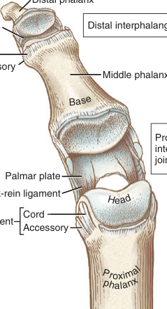
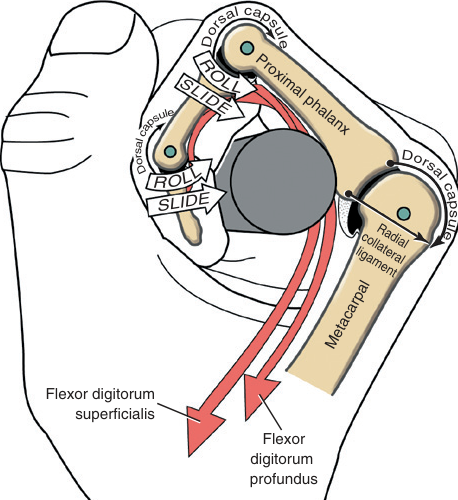
Cấu trúc và chức năng của khớp liên đốt (IP) của ngón cái tương tự như các khớp IP của các ngón. Vận động chủ yếu bị giới hạn ở một bậc tự do, cho phép gấp chủ động khoảng 70 độ (xem Hình 8.28).58 Khớp IP của ngón cái có thể được duỗi thụ động vượt quá trung tính khoảng 20 độ. Vận động này thường được dùng để áp dụng một lực giữa đệm ngón cái và một vật, chẳng hạn như ấn một ghim bảng (thumbtack) vào tấm gỗ.
Các chức năng rất phức tạp và phối hợp của bàn tay đòi hỏi một sự tương tác tích hợp cao giữa các hệ cơ và cảm giác. Hãy xem xét, chẳng hạn, những vận động rất chính xác và tinh tế của các ngón được thực hiện bởi một nghệ sĩ vĩ cầm (concert violinist). Một sự thật cho phép sự chính xác như vậy là một sợi trục đơn (single axon) đi đến một cơ nội tại của bàn tay, chẳng hạn như ngón cái, có thể chi phối ít nhất 100 sợi cơ.96 Trong trường hợp này, một sợi trục sẽ đồng thời kích hoạt tất cả 100 sợi cơ. Ngược lại, một sợi trục đơn đi đến đầu trong (medial head) của cơ bụng chân (gastrocnemius) — một cơ không liên quan đến vận động tinh — có thể chi phối khoảng…
TẬP TRUNG ĐẶC BIỆT 8.3 — "Position of Function" của Cổ Tay và Bàn Tay ("Position of Function" of the Wrist and Hand)
Một số tình trạng y khoa, chẳng hạn như chấn thương đầu do sang chấn (traumatic head injury), đột quỵ (stroke), hoặc tứ chi liệt mức cao (high‑level tetraplegia/quadriplegia), có thể dẫn đến một biến dạng vĩnh viễn của cổ tay và bàn tay. Biến dạng này được gây ra bởi sự kết hợp giữa liệt lâu dài, không sử dụng (disuse), hoặc trương lực (tone) bất thường trong các cơ. Do đó, các bác sĩ lâm sàng thường dùng các dụng cụ chỉnh hình (orthoses) ưu tiên một tư thế của cổ tay và bàn tay bảo tồn tối đa tiềm năng chức năng. Tư thế này, thường được gọi là tư thế chức năng (position of function), được minh họa trong Hình 8.31. Tư thế này cung cấp một bàn tay hơi mở và cong như chiếc cốc, với cổ tay ở vị trí duy trì chiều dài tối ưu của các cơ gấp ngón.
…2000 sợi cơ.31 Tỷ lệ sợi‑trên‑mỗi‑sợi trục (fiber‑per‑axon ratio) nhỏ hơn điển hình của hầu hết các cơ nội tại của bàn tay cho phép một sự phân độ (gradation) chính xác hơn giữa các mức lực, cuối cùng cho phép kiểm soát tinh tế hơn của vận động.
Kiểm soát tinh tế trên các vận động chủ động phức tạp của các ngón cũng đòi hỏi một dòng chảy liên tục của thông tin cảm giác từ các loại thụ thể thần kinh (neuroreceptors) khác nhau từ nhiều vùng của bàn tay, bao gồm da, cơ, gân, bao khớp, và dây chằng.140 Cách hệ thần kinh diễn giải thông tin này để dẫn hướng và thường dự đoán các vận động phức tạp và nhanh vẫn chưa được hiểu đầy đủ bất chấp nhiều năm quan tâm nghiên cứu.25 Hãy xem xét tầm quan trọng của thông tin cảm giác này trong việc cho phép một người nhanh chóng bóc và ăn một miếng trái cây, với rất ít tiếp xúc bằng mắt. Hoạt động này được kiểm soát chủ yếu thông qua đầu vào cảm giác từ bàn tay; phần lớn hoạt động cơ là đáp ứng với thông tin cảm giác này. Sự kích hoạt cơ thiếu vắng đầu vào cảm giác thường dẫn đến một vận động thô và không phối hợp. Điều này thường được quan sát trong các bệnh lý bảo tồn hệ vận động nhưng ảnh hưởng chủ yếu đến hệ cảm giác, chẳng hạn như tủy phình (tabes dorsalis), một tình trạng ảnh hưởng đến các bó (afferent tracts) cảm giác trong tủy sống.
Sự chi phối thần kinh đến các cơ và da của bàn tay được minh họa trong Hình 1B–D ở Phụ lục II, Phần A. Dây thần kinh quay (radial nerve) chi phối các cơ duỗi ngoại lai (extrinsic extensor muscles) của các ngón. Các cơ này, nằm ở mặt mu (dorsal aspect) của cẳng tay, bao gồm cơ duỗi các ngón (extensor digitorum), cơ duỗi ngón út (extensor digiti minimi), cơ duỗi ngón trỏ (extensor indicis), cơ duỗi dài ngón cái (extensor pollicis longus), cơ duỗi ngắn ngón cái (extensor pollicis brevis), và cơ dạng dài ngón cái (abductor pollicis longus). Dây thần kinh quay chịu trách nhiệm về cảm giác ở mặt mu của cổ tay và bàn tay, đặc biệt quanh vùng khe mạng mu (dorsal web space) và các phần mặt lưng của bao khớp của khớp cổ tay–đốt bàn tay (CMC) của ngón cái.43
Dây thần kinh giữa (median nerve) chi phối hầu hết các cơ gấp ngoại lai của các ngón. Ở cẳng tay, dây thần kinh giữa chi phối cơ gấp nông các ngón (flexor digitorum superficialis). Một nhánh của dây thần kinh giữa (dây thần kinh gian xương cẳng tay trước — anterior interosseous nerve) sau đó chi phối nửa ngoại lai (lateral half) của cơ gấp sâu các ngón (flexor digitorum profundus) và cơ gấp dài ngón cái (flexor pollicis longus).
Tiếp tục về phía xa, dây thần kinh giữa đi vào bàn tay qua ống cổ tay (carpal tunnel), sâu dưới dây chằng ngang cổ tay (transverse carpal ligament). Một khi trong bàn tay, nó chi phối các cơ tạo nên mô gồm thenar (thenar eminence) (cơ gấp ngắn ngón cái — flexor pollicis brevis, cơ dạng ngắn ngón cái — abductor pollicis brevis, và cơ đối ngón cái — opponens pollicis) và hai cơ giun (lumbricals) ngoại lai. Dây thần kinh giữa chịu trách nhiệm về cảm giác ở mặt lòng‑ngoại lai (palmar‑lateral aspect) của bàn tay, bao gồm các đầu ngón và vùng lòng bàn của 3 ngón ngoại lai (lateral digits).43 Các sợi cảm giác của dây thần kinh giữa chi phối các mặt lòng của bao khớp CMC của ngón cái.
Dây thần kinh trụ (ulnar nerve) chi phối nửa trong (medial half) của cơ gấp sâu các ngón. Về phía xa, dây thần kinh trụ bắt qua (crosses) cổ tay nông (superficial) so với ống cổ tay. Trong bàn tay, nhánh vận động sâu (deep motor branch) của dây thần kinh trụ chi phối các cơ mô gồm hypothenar (hypothenar muscles) (cơ gấp ngón út — flexor digiti minimi, cơ dạng ngón út — abductor digiti minimi, cơ đối ngón út — opponens digiti minimi, và cơ gấp lòng bàn tay — palmaris brevis) và hai cơ giun trong (medial two lumbricals). Nhánh vận động sâu tiếp tục đi sang bên, sâu trong bàn tay, để chi phối tất cả các cơ gian xương (palmar and dorsal interossei), và cuối cùng là cơ khép ngón cái (adductor pollicis). Dây thần kinh trụ chịu trách nhiệm về cảm giác ở bờ trụ (ulnar border) của bàn tay, bao gồm hầu hết da của 3 ngón trụ (ulnar digits).122
TẬP TRUNG ĐẶC BIỆT 8.4 — Vai Trò "Bảo Vệ" của Cảm Giác Bình Thường (The "Protective" Role of Normal Sensation)
Cảm giác bình thường của bàn tay rất thiết yếu cho sự bảo vệ của nó khỏi tổn thương cơ học và nhiệt. Những người bị bệnh thần kinh ngoại biên (peripheral neuropathy), chấn thương tủy sống, và tiểu đường không kiểm soát, chẳng hạn, thường thiếu cảm giác ở các chi, làm cho họ rất dễ bị tổn thương. Những người mắc bệnh Hansen (trước đây gọi là "phong" — leprosy136) có thể có các ngón hoàn toàn mất cảm giác, cũng như các tổn thương da liễu (dermatologic lesions). Theo thời gian — và đặc biệt là không có sự chăm sóc y tế — những người mắc bệnh Hansen nặng hoặc không kiểm soát có thể trải qua sự mất một phần hoặc hoàn toàn các ngón của họ. Hiện tượng này chỉ liên quan gián tiếp đến vi khuẩn gây nhiễm trùng; nguyên nhân trực tiếp hơn bắt nguồn từ các lực tiếp xúc lớn một cách không cần thiết, và thường gây tổn thương, được áp dụng cho các ngón mất cảm giác. Với cảm giác bình thường, mọi người nói chung áp dụng một lượng lực tương đối thấp cho bàn tay của họ trong khi thực hiện các hoạt động thường ngày — thường chỉ mức tối thiểu cần thiết để thực hiện đầy đủ một nhiệm vụ nhất định. Tuy nhiên, trong bệnh Hansen, một lực lớn hơn bình thường thường được áp dụng như một cách để bù đắp cho cảm giác suy giảm. Mặc dù lực tăng có thể nhỏ đối với bất kỳ ứng dụng nào, nhiều ứng dụng qua một thời gian dài có thể làm hỏng da và các mô liên kết khác. Bất kể bệnh lý nào gây ra sự mất cảm giác, các bác sĩ lâm sàng phải giáo dục bệnh nhân của họ về sự dễ bị tổn thương tăng lên của họ và đề xuất các phương pháp bảo vệ vùng này.86
Làm tài liệu tham khảo, các rễ thần kinh chính cung cấp các cơ của chi trên được liệt kê trong Phụ lục II, Phần B. Thêm vào đó, các Phần C–E của Phụ lục II bao gồm các mục tham khảo bổ sung để giúp hướng dẫn đánh giá lâm sàng tình trạng chức năng của các rễ thần kinh C5–T1 và một số dây thần kinh ngoại biên chính của chi trên.
Phần lớn, các khớp của bàn tay nhận cảm giác từ các sợi thần kinh cảm giác cung cấp các dermatome phủ bên trên. (Xem biểu đồ dermatome trong Phụ lục II, Phần E.) Các sợi thần kinh affine (afferent nerve fibers) này hợp nhất với các rễ thần kinh sống lưng (dorsal nerve roots) sau tại tủy sống: C6, mang cảm giác từ ngón cái và ngón trỏ; C7, mang cảm giác từ ngón giữa; và C8, mang cảm giác từ ngón áp út (ring) và ngón út.40,56,122
Các cơ kiểm soát các ngón được phân loại là ngoại lai (extrinsic) hoặc nội tại (intrinsic) đối với bàn tay (Bảng 8.3). Các cơ ngoại lai có điểm bám gần (proximal attachments) ở cẳng tay hoặc, trong một số trường hợp, xa đến mức các lồi cầu (epicondyles) của xương cánh tay. Ngược lại, các cơ nội tại có cả điểm bám gần và xa nằm trong bàn tay. Như một tóm tắt và tài liệu tham khảo, giải phẫu chi tiết và sự cung cấp thần kinh của các cơ của bàn tay được đưa vào Phụ lục II, Phần F. Thêm vào đó, một danh sách các diện cắt ngang (cross‑sectional areas) của các cơ được chọn của bàn tay được liệt kê trong Phụ lục II, Phần G.
Hầu hết các vận động chủ động của bàn tay, chẳng hạn như mở và đóng các ngón, đòi hỏi sự hợp tác chính xác giữa các cơ ngoại lai và nội tại của bàn tay và các cơ của cổ tay.5 Chủ đề này được đề cập chi tiết hơn sau trong chương này.
| Cơ Ngoại Lai (Extrinsic Muscles) | Cơ Nội Tại (Intrinsic Muscles) |
|---|---|
| Các cơ gấp của các ngón (Flexors of the digits) Flexor digitorum superficialis (Cơ gấp nông các ngón) Flexor digitorum profundus (Cơ gấp sâu các ngón) Flexor pollicis longus (Cơ gấp dài ngón cái) | Mô gồm thenar (Thenar eminence) Abductor pollicis brevis (Cơ dạng ngắn ngón cái) Flexor pollicis brevis (Cơ gấp ngắn ngón cái) Opponens pollicis (Cơ đối ngón cái) |
| Các cơ duỗi của các ngón (Extensors of the fingers) Extensor digitorum (Cơ duỗi các ngón) Extensor indicis (Cơ duỗi ngón trỏ) Extensor digiti minimi (Cơ duỗi ngón út) | |
| Các cơ duỗi của ngón cái (Extensors of the thumb) Extensor pollicis longus (Cơ duỗi dài ngón cái) Extensor pollicis brevis (Cơ duỗi ngắn ngón cái) Abductor pollicis longus (Cơ dạng dài ngón cái) | |
| Mô gồm hypothenar (Hypothenar eminence) Abductor digiti minimi (Cơ dạng ngón út) Flexor digiti minimi (Cơ gấp ngón út) Opponens digiti minimi (Cơ đối ngón út) Palmaris brevis (Cơ gấp lòng bàn tay) | |
| Khác (Other) Adductor pollicis (Cơ khép ngón cái — hai đầu, two heads) Lumbricals (Cơ giun — bốn, four) Interossei (Cơ gian xương — bốn lòng bàn tay và bốn mu, four palmar and four dorsal) |
Cơ gấp sâu các ngón (flexor digitorum profundus) là cơ gấp duy nhất của khớp DIP, nhưng, giống như cơ superficialis, có thể hỗ trợ gấp mọi khớp mà nó đi qua. Cơ gấp sâu các ngón đến ngón trỏ có thể được kiểm soát tương đối độc lập với các gân profundus khác. Tuy nhiên, ba gân còn lại thì được kết nối chéo qua các bó cơ khác nhau, thường ngăn cản sự gấp DIP độc lập của một ngón đơn lẻ.
Cơ gấp dài ngón cái (flexor pollicis longus) nằm ở mặt phẳng cơ sâu nhất của cẳng tay, ngay cạnh cơ gấp sâu các ngón (xem Hình 8.33). Cơ này bắt qua cổ tay và bám về phía xa vào mặt lòng của nền đốt xa của ngón cái. Cơ gấp dài ngón cái là cơ gấp duy nhất tại khớp IP của ngón cái, và nó cũng tác dụng một mô‑men gấp (flexion torque) đáng kể tại các khớp MCP và CMC của ngón cái. Nếu không bị đối kháng, cơ gấp dài ngón cái cũng gấp và làm lệch quay (radially deviates) cổ tay.
Cả ba cơ gấp ngoại lai của các ngón nói trên thường co lại đồng thời, đặc biệt khi cần một nắm chặt (firm grip) toàn bộ bàn tay. Các hành động của các cơ này làm cong các ngón vào tư thế gấp trong khi cũng hỗ trợ sự đối (opposition) của các khớp CMC của ngón thứ nhất, thứ tư, và thứ năm. Hành động này rõ ràng nhất khi một nắm tay được nắm chặt rồi thả lỏng luân phiên. Mặc dù tinh tế, các hành động đối này hỗ trợ một số cơ nội tại trong việc nâng các bờ của bàn tay, từ đó cải thiện hiệu quả và độ an toàn của sự nắm.
Các cơ gấp ngoại lai của các ngón là cơ gấp nông các ngón (flexor digitorum superficialis), cơ gấp sâu các ngón (flexor digitorum profundus), và cơ gấp dài ngón cái (flexor pollicis longus) (Hình 8.32 và 8.33). Các cơ này có các điểm bám gần rộng từ lồi cầu trong (medial epicondyle) của xương cánh tay và cẳng tay.
Thân cơ của cơ gấp nông các ngón nằm ở cẳng tay trước, ngay sâu dưới ba cơ gấp cổ tay (wrist flexors) và cơ quay tròn (pronator teres) (xem Hình 8.32). Bốn gân của nó bắt qua cổ tay và đi vào mặt lòng của bàn tay. Ở mức đốt gần, mỗi gân chia đôi để cho phép gân của cơ gấp sâu các ngón đi qua (Hình 8.34, ngón giữa và ngón trỏ). Hai phần chia đôi của mỗi gân hợp nhất một phần, bắt qua khớp PIP, và bám vào các cạnh của mặt lòng của đốt giữa.
Tác động chính của cơ gấp nông các ngón là gấp các khớp PIP. Tuy nhiên, cơ này gấp tất cả các khớp mà nó đi qua. Nói chung, ngoại trừ ngón út, mỗi gân có thể được kiểm soát tương đối độc lập với gân khác. Sự độc lập chức năng này đặc biệt rõ ràng ở ngón trỏ.
Thân cơ của cơ gấp sâu các ngón nằm ở mặt phẳng cơ sâu nhất của cẳng tay, sâu dưới cơ gấp nông các ngón (xem Hình 8.33). Một khi trong ngón, mỗi gân đi qua gân chia đôi của cơ gấp nông các ngón. Mỗi gân profundus sau đó tiếp tục về phía xa để bám vào mặt lòng của nền đốt xa. Cơ gấp sâu các ngón là cơ gấp duy nhất của khớp DIP, nhưng, giống như cơ superficialis, có thể hỗ trợ gấp mọi khớp nó đi qua.
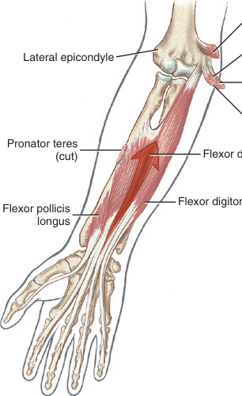
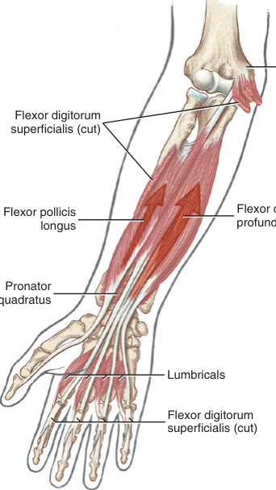
Các dính (adhesions) có thể phát triển giữa gân và bao gân (digital sheath) liền kề hoặc giữa các gân. Sau khi sửa chữa phẫu thuật một gân bị rách (lacerated), người trị liệu thường bắt đầu một chương trình bài tập được theo dõi chặt chẽ để hỗ trợ sự trượt (gliding) của gân. Liệu pháp này được thực hiện theo một lịch trình thời gian nghiêm ngặt như được xác định bởi bác sĩ phẫu thuật và người trị liệu, tùy thuộc vào loại sửa chữa và các thông số khác.109
Các gân gấp và các màng hoạt dịch (synovial membranes) xung quanh có thể bị viêm — một tình trạng được gọi là viêm bao gân (tenosynovitis). Sự sưng liên quan hạn chế không gian bên trong bao gân và do đó hạn chế hành động trượt của các gân. Vùng viêm của gân cũng có thể phát triển một nốt (nodule) thỉnh thoảng bị kẹt trong vùng hẹp (stenosed) của bao gân, do đó chặn sự vận động của ngón. Với thêm lực, gân có thể đột ngột trượt qua chỗ hẹp với một tiếng bật (snap), một tình trạng tương đối thường xuyên được gọi là "ngón tay cò súng" (trigger finger). Quản lý bảo tồn bao gồm sửa đổi hoạt động, can thiệp chỉnh hình (orthotic intervention), và tiêm cortisone có thể hiệu quả ở các giai đoạn sớm. Nếu không, một giải phóng phẫu thuật vùng hẹp của bao gân, thường liên quan đến ròng rọc A1 (A1 pulley), thường được yêu cầu trong các trường hợp mãn tính.113
Về phía xa của ống cổ tay, bao hoạt dịch trụ (ulnar synovial sheath) bao quanh các gân gấp nông và sâu các ngón. Bao này kết thúc trong lòng bàn tay gần, ngoại trừ một tiếp nối xa quanh các gân của ngón út (xem Hình 8.34). Bao hoạt dịch quay (radial synovial sheath) duy trì tiếp xúc với gân của cơ gấp dài ngón cái đến điểm bám xa trên ngón cái.
Các gân gấp ngoại lai của các ngón đi đến điểm bám xa của chúng trong các đường hầm xơ‑xương (fibro‑osseous tunnels) bảo vệ được gọi là các bao gân sợi kỹ thuật số (fibrous digital sheaths) (xem Hình 8.34, ngón út). Các bao bắt đầu ở gần như một tiếp nối của aponeurosis dày ngay dưới da của lòng bàn tay. Suốt chiều dài của mỗi ngón, các bao được neo (anchored) vào các đốt và các bản lòng bàn tay (xem Hình 8.21, ngón trỏ). Được nhúng bên trong mỗi bao gân số là các dải mô rời rạc được gọi là các ròng rọc gấp (flexor pulleys) (xem Hình 8.34, A1 đến A5, C1 đến C3 ở ngón áp út). Sâu dưới các ròng rọc này là một bao hoạt dịch số (digital synovial sheath), bao quanh các gân gấp từ nếp gấp lòng bàn tay xa đến khớp DIP. Bao này đóng vai trò là nguồn dinh dưỡng và bôi trơn cho các gân được bao bọc. Dịch hoạt (synovial fluid) được tiết ra từ bao làm giảm ma sát giữa cơ gấp nông và sâu các ngón.
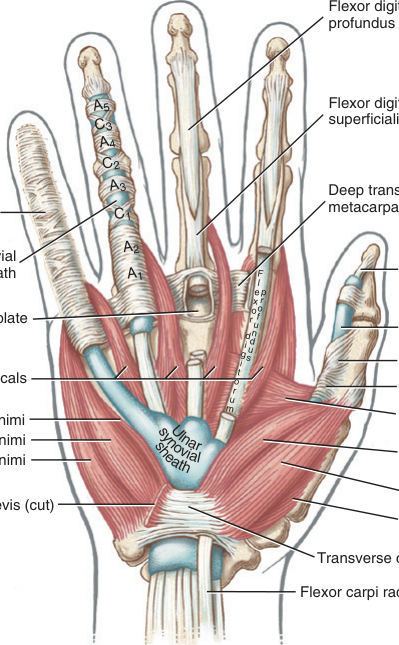
TẬP TRUNG ĐẶC BIỆT 8.5 — Cơ Sở Giải Phẫu cho "Hội Chứng Ống Cổ Tay" (Anatomic Basis for Carpal Tunnel Syndrome)
Chín gân gấp ngoại lai của các ngón và dây thần kinh giữa (median nerve) đi qua ống cổ tay (carpal tunnel) (Hình 8.35). Các gân này được bao quanh bởi các bao hoạt dịch ẩm ướt và các mô liên kết khác, được thiết kế để giảm ma sát giữa các cấu trúc. Dây thần kinh giữa có thể bị chèn ép hoặc chịu stress cơ học khi nó đi qua đường hầm chật chội và tương đối không nhường chỗ này. Theo thời gian, hội chứng ống cổ tay (carpal tunnel syndrome — CTS) có thể xảy ra, được trích dẫn là bệnh thần kinh chèn ép (entrapment neuropathy) thường gặp nhất của chi trên.18 CTS được đặc trưng bởi đau và dị cảm (paresthesia) trong vùng phân bố cảm giác của dây thần kinh giữa, thường cản trở giấc ngủ. Sự yếu cơ và teo cơ (atrophy) cũng có thể xảy ra ở các cơ của mô gồm thenar.
Nguyên nhân của CTS không được hiểu hoàn toàn và có khả năng đa yếu tố (multifactorial).32 Ba cơ chế tiềm năng có liên quan qua lại có thể liên quan đến sự bệnh sinh (pathogenesis) của nó. Thứ nhất, sự quá đông (overcrowding) của các gân hoặc các bao bảo vệ của chúng có thể tăng áp lực ống cổ tay, do đó chèn ép dây thần kinh giữa. Điều này có thể xảy ra, chẳng hạn, do sự hiện diện của một đường hầm bất thường nhỏ, ứ nước toàn thân (systemic water retention), hoặc viêm và sự sưng subsequent của các gân hoặc màng hoạt dịch. Thứ hai, stress cơ học quá mức đặt lên cổ tay có thể làm tổn thương dây thần kinh giữa bên trong ống cổ tay. Điều này có thể xảy ra thông qua sử dụng mạn tính và lặp đi lặp lại của cổ tay và bàn tay, thường liên quan đến nghề nghiệp.18,85 Các nghề nghiệp liên quan đến việc sử dụng các công cụ rung (vibration tools), gập cổ tay quá mức, hoặc các cái nắm lặp đi lặp lại hoặc mạnh đã được liên kết với sự gia tăng tỷ lệ mắc CTS.102,111,132 Các hoạt động có khả năng có hại này có thể đặt stress trực tiếp lên chính dây thần kinh giữa bên trong đường hầm, hoặc gây viêm và sưng các mô bao quanh nó.
Một cơ chế thứ ba có thể dẫn đến CTS liên quan đến các thay đổi xơ (fibrotic changes) bên trong các mô liên kết lấp đầy các khoảng trống giữa các màng hoạt dịch và các gân riêng lẻ bên trong ống cổ tay.21,32 Thú vị là, các thay đổi xơ này không được cho là một phần của quá trình viêm. Nguyên nhân của các thay đổi xơ này trong các quần thể được chọn của những người mắc CTS không được biết. Tuy nhiên, các nhà nghiên cứu suy đoán rằng các mô xơ bất thường hạn chế sự trượt tự do giữa các gân và dây thần kinh giữa.21,32 Kịch bản này có thể gây ra sự biến dạng (deformation) và căng thẳng (strain) quá mức lên dây thần kinh giữa trong quá trình vận động ngón. Theo thời gian, stress lên dây thần kinh giữa có thể dẫn đến chức năng bị thay đổi của nó.
Một số hình thức điều trị bảo tồn đã được chứng minh có hiệu quả trong việc giảm các triệu chứng của CTS, chẳng hạn như việc sử dụng nẹp (bracing) và giáo dục mọi người về các cách hạn chế stress lên cổ tay.46,117 Nếu điều trị bảo tồn không hiệu quả, giải ép (decompression) phẫu thuật của ống cổ tay thường được thực hiện, thường với kết quả thuận lợi.117
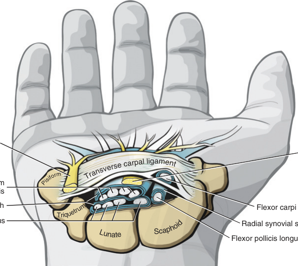
Hình 8.34 minh họa các ròng rọc gấp được nhúng bên trong bao gân sợi kỹ thuật số. Năm ròng rọc vòng (annular pulleys) đã được mô tả cho mỗi ngón, được ký hiệu là A1 đến A5. Các ròng rọc chính (A2 và A4) bám vào thân (shafts) của đốt gần và đốt giữa. Các ròng rọc phụ (A1, A3, và A5) bám trực tiếp vào bản lòng bàn tay tại mỗi trong ba khớp bên trong một ngón. Ba ròng rọc chéo (cruciate pulleys) (C1 đến C3) ít rõ ràng hơn tồn tại. Các ròng rọc thứ cấp này được làm từ các sợi mỏng, linh hoạt bắt chéo (crisscross) qua các gân tại các vùng mà các bao gân số uốn cong trong khi gấp. Các dây chằng vòng và chéo của ngón cái hoạt động như các ròng rọc cho sự đi qua của gân cơ gấp dài ngón cái (xem Hình 8.34).
Các ròng rọc gấp, aponeurosis lòng bàn tay (palmar aponeurosis), và da đều chia sẻ một chức năng tương tự là giữ các gân bên dưới ở một khoảng cách tương đối gần với các khớp.39 Nếu không có sự hạn chế do các mô này cung cấp, lực của một sự co mạnh của các cơ gấp ngoại lai ngón gây ra gân kéo ra xa khỏi trục xoay của khớp, một hiện tượng được gọi là "bowstringing" (căng cung) của gân. Các ròng rọc gấp có một vai trò đặc biệt quan trọng trong việc ngăn ngừa tự nhiên bowstringing của các gân.112 Tuy nhiên, các ròng rọc có thể bị kéo căng quá mức hoặc rách, thứ phát do sang chấn, sử dụng quá mức, hoặc bệnh. (Đáng quan tâm, sự kéo căng quá mức và bowstringing subsequent của các gân gấp đã được quan sát ở 26% các vận động viên leo núi đá ưu tú (elite rock climbers), thường nhất ở ngón áp út và ngón giữa.133) Sự cắt đứt hoặc kéo căng quá mức của ròng rọc chính A2 hoặc A4 làm thay đổi đáng kể các cánh tay mô‑men (moment arms) của các gân gấp, do đó làm thay đổi cơ sinh học (biomechanics) của sự gấp ngón.39 Bảo tồn hai ròng rọc chính này do đó là một mục tiêu chính của các bác sĩ phẫu thuật bàn tay.
Các cơ gấp số ngoại lai có khả năng cơ học để gấp nhiều khớp, từ khớp DIP đến, ít nhất là về mặt lý thuyết cho cơ gấp nông các ngón, khuỷu tay. Để các cơ này cô lập tiềm năng gấp của chúng qua một khớp đơn lẻ, các cơ khác phải co đồng thời (synergistically) với các cơ gấp số ngoại lai. Hãy xem xét cơ gấp nông các ngón thực hiện sự gấp khớp PIP biệt lập (Hình 8.36). Khi bắt đầu co, cơ duỗi các ngón (extensor digitorum) phải hoạt động như một cơ ổn định gần (proximal stabilizer) để ngăn cơ gấp nông các ngón gấp khớp MCP và cổ tay. Bởi vì chiều dài cánh tay mô‑men gấp của cơ gấp nông các ngón tăng dần tại các khớp gần hơn, một lực tương đối nhỏ áp dụng cho một khớp xa được khuếch đại thành một mô‑men xoắn (torque) lớn hơn tại các khớp gần hơn.38 Hình 8.36 cho thấy một lực 20‑N (4,5‑lb) bên trong gân superficialis tạo ra một mô‑men xoắn 15‑Ncm tại khớp PIP, một mô‑men xoắn 20‑Ncm tại khớp MCP, và một mô‑men xoắn 25‑Ncm tại khớp cổ tay giữa (midcarpal). Lực càng lớn do cơ gấp nông các ngón tạo ra, càng lớn các nhu cầu lực đặt lên các cơ ổn định gần. Các cơ ổn định gần bao gồm cơ duỗi các ngón và, nếu cần, các cơ duỗi cổ tay. Lượng lực cơ và sự phối hợp cần thiết cho một hành động đơn giản của sự gấp khớp PIP thực sự nhiều hơn những gì nó có vẻ ban đầu. Liệt hoặc yếu các cơ ổn định gần có thể làm gián đoạn đáng kể hiệu quả của chức năng cơ xa hơn.
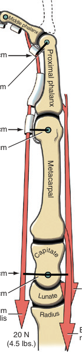
Các cơ gấp ngoại lai của các ngón — cụ thể là cơ gấp sâu và nông các ngón và cơ gấp dài ngón cái — bắt qua phía trước cổ tay. Vị trí của cổ tay do đó thay đổi đáng kể chiều dài và sức căng thụ động subsequent trong các cơ này. Một hàm ý của sự sắp xếp này có thể được nhận thức bằng cách duỗi chủ động cổ tay và quan sát sự gấp thụ động của các ngón và ngón cái (Hình 8.37). Các ngón tự động gấp (với sự duỗi cổ tay) vì sự tăng sức căng thụ động trong các cơ gấp số bị kéo căng. Sự kéo căng của
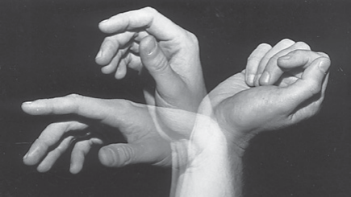
các cơ gấp số ngoại lai có các hàm ý lâm sàng quan trọng. Một ví dụ liên quan đến một người bị tứ chi liệt mức C6 (C6 tetraplegia) người có liệt gần như hoàn toàn hoặc hoàn toàn các cơ gấp và duỗi ngón của mình, nhưng các cơ duỗi cổ tay được chi phối tốt. Những người với mức chấn thương tủy sống này thường sử dụng một tác dụng tenodesis cho nhiều chức năng, chẳng hạn như giữ một cốc nước. Để mở bàn tay để nắm cốc, người đó cho phép trọng lực trước tiên gấp cổ tay. Điều này, lần lượt, kéo căng các cơ duỗi ngón và ngón cái bị liệt một phần (xem các cơ "căng" trong Hình 8.38A). Trong Hình 8.38B, sự co chủ động của một cơ duỗi cổ tay (được hiển thị màu đỏ) làm lỏng (slackens) cơ duỗi các ngón nhưng cũng, quan trọng hơn, kéo căng các cơ gấp ngón và ngón cái bị liệt, chẳng hạn như cơ gấp sâu các ngón và cơ gấp dài ngón cái. Sự kéo căng trong các cơ gấp này tạo ra đủ sức căng thụ động để gấp các ngón một cách hiệu quả và nắm cốc. Lượng sức căng thụ động trong các cơ gấp số được kiểm soát một cách gián tiếp bởi mức độ duỗi cổ tay chủ động.
TẬP TRUNG ĐẶC BIỆT 8.6 — Tính Hữu Dụng của Tác Dụng Tenodesis ở Một Số Người Bị Tứ Chi Liệt (The Usefulness of Tenodesis Action in Some Persons with Tetraplegia)
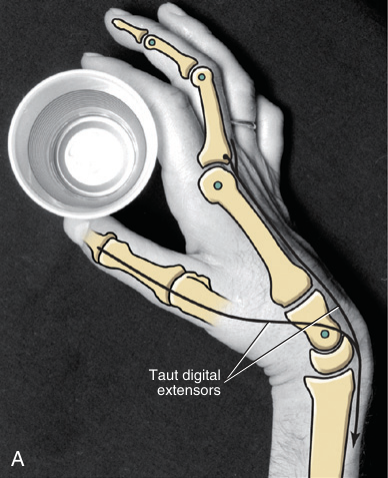
Sự gấp thụ động của các ngón gây ra bởi tác dụng tenodesis nói trên là đáng ngạc nhiên lớn; ở những đối tượng khỏe mạnh, trung bình, duỗi hoàn toàn cổ tay từ tư thế gấp hoàn toàn tự động gấp khớp DIP khoảng 20 độ, khớp PIP khoảng 50 độ, và khớp MCP khoảng 35 độ.125 Hình 8.37 cũng chứng minh rằng ở vị trí gấp cổ tay hoàn toàn, các ngón, đáng chú ý nhất là ngón trỏ, duỗi thụ động vì một tác dụng tenodesis tương tự của các cơ duỗi số ngoại lai bị kéo căng. Về cơ bản tất cả các cơ đa khớp (polyarticular muscles) trong cơ thể đều thể hiện một mức độ nào đó của tác dụng tenodesis.
Một cơ đa khớp (polyarticular muscle) tác động qua một khớp, tạo ra một vận động thụ động tại các khớp khác, được gọi là một tác dụng tenodesis của cơ.
Các cơ duỗi ngoại lai của các ngón là cơ duỗi các ngón (extensor digiti minimi), cơ duỗi ngón trỏ (extensor indicis), và cơ duỗi các ngón (extensor digitorum) (xem Hình 7.22). Cơ duỗi các ngón và cơ duỗi ngón út bắt nguồn từ một gân chung từ lồi cầu ngoại lai (lateral epicondyle) của xương cánh tay. Cơ duỗi ngón trỏ có điểm bám gần trên bề mặt mu của xương trụ (ulna) và các vùng liền kề của màng gian xương (interosseous membrane). Cơ duỗi các ngón, xét về diện cắt ngang, là cơ duỗi ngón chủ đạo.77 Ngoài chức năng như một cơ duỗi ngón, cơ duỗi các ngón có một cánh tay mô‑men xuất sắc như một cơ duỗi cổ tay (xem Hình 7.24).
Giải phẫu (dissecting) cơ duỗi các ngón và cơ duỗi ngón út phơi bày cơ duỗi ngón trỏ sâu hơn và các cơ duỗi ngoại lai của ngón cái (Hình 8.39). Cơ duỗi ngón trỏ chỉ có một gân, phục vụ ngón trỏ. Cơ duỗi ngón út là một cơ thoi (fusiform) nhỏ thường được kết nối chéo với cơ duỗi các ngón. Như được minh họa trong Hình 8.40, cơ duỗi ngón út thường có hai gân.
Các gân của cơ duỗi các ngón, cơ duỗi ngón trỏ, và cơ duỗi ngón út bắt qua cổ tay trong các ngăn (compartments) lót hoạt dịch nằm bên trong bao giữ gân duỗi (extensor retinaculum) (xem Hình 7.23). Về phía xa của bao giữ gân duỗi, các gân đi về phía các ngón, ở mặt mu của các xương đốt bàn tay (xem Hình 8.40). Các gân của cơ duỗi các ngón được kết nối chéo bởi một số juncturae tendinae. Các dải mô liên kết mỏng này ổn định góc tiếp cận của các gân đến nền của các khớp MCP và có thể hạn chế vận động độc lập của các gân riêng lẻ.
Sự tổ chức giải phẫu của các gân duỗi ngón rất khác với các cơ gấp ngón. Các gân gấp đi trong các bao gân số được xác định rõ hướng tới các điểm bám xương đơn lẻ. Ngược lại, về phía xa của cổ tay, các gân duỗi thiếu một bao gân số hoặc hệ thống ròng rọc được xác định. Các gân duỗi cuối cùng được tích hợp vào một sự mở rộng sợi (fibrous expansion) của các mô liên kết, nằm dọc theo chiều dài mặt mu của mỗi ngón (xem Hình 8.40). Tập hợp phức tạp của mô liên kết được gọi là cơ chế duỗi (extensor mechanism), mặc dù các thuật ngữ khác đã được sử dụng qua nhiều năm, bao gồm sự mở rộng duỗi (extensor expansion), khí cụ duỗi (extensor apparatus), và cụm duỗi (extensor assembly).22,121 Cơ chế duỗi đóng vai trò là điểm bám xa chính cho cơ duỗi các ngón, ngón trỏ, và ngón út và cho hầu hết các cơ nội tại tác động lên các ngón. Phần sau đây mô tả giải phẫu của cơ chế duỗi. Một cơ chế duỗi tương tự nhưng kém tổ chức hơn tồn tại cho ngón cái.
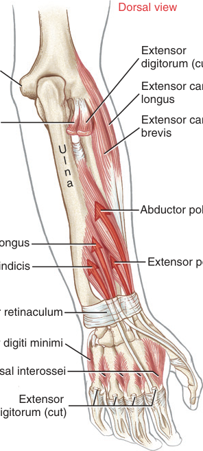
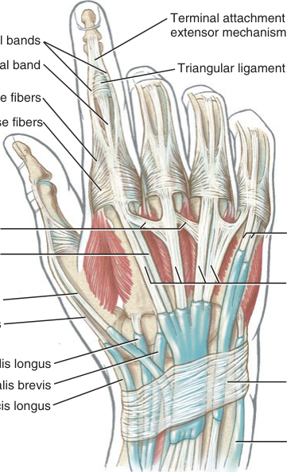
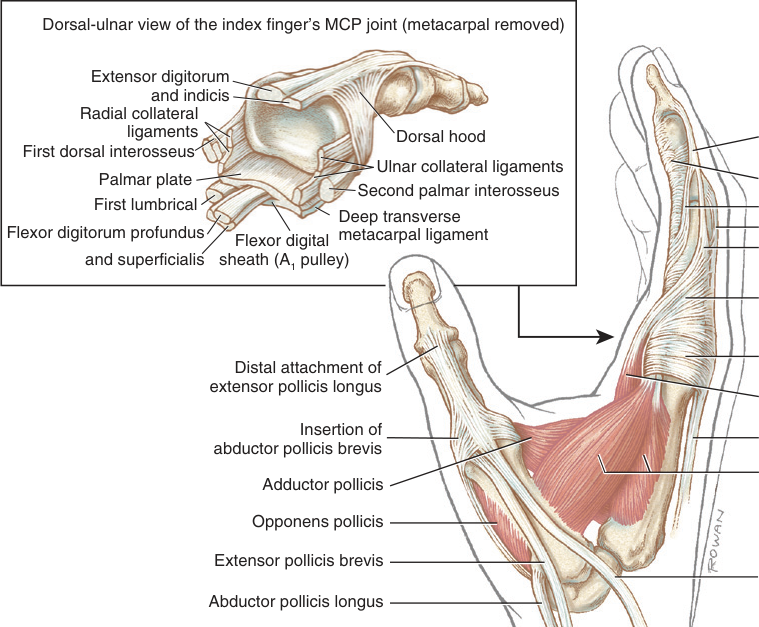
| Thành Phần (Component) | Giải Phẫu Liên Quan (Pertinent Anatomy) | Chức Năng Chính (Primary Function) |
|---|---|---|
| Băng trung tâm (Central band) | Tiếp nối trực tiếp của gân cơ duỗi các ngón; bám vào mặt lưng của nền đốt giữa | Đóng vai trò là "xương sống" của cơ chế duỗi; truyền lực duỗi từ cơ duỗi các ngón qua khớp PIP |
| Các băng bên (Lateral bands) | Được hình thành từ các nhánh tách ra khỏi băng trung tâm; một cặp băng hợp nhất thành một điểm bám đơn lẻ vào mặt lưng của đốt xa; các băng bên được kết nối lỏng lẻo ở mặt lưng bởi dây chằng tam giác | Truyền lực duỗi từ cơ duỗi các ngón, cơ giun, và cơ gian xương qua các khớp PIP và DIP |
| Mũ duỗi (Dây chằng ngang và chéo) (Dorsal hood — transverse and oblique fibers) | Sợi ngang: Kết nối gân duỗi với bản lòng bàn tay tại khớp MCP | Ổn định gân cơ duỗi các ngón trên mặt lưng của khớp MCP; tạo thành một dây nịt (sling) quanh đầu gần của đốt gần, do đó hỗ trợ cơ duỗi các ngón trong việc duỗi khớp MCP |
| Sợi chéo: Chạy xa và lưng để hợp nhất với các băng bên | Chuyển lực từ cơ giun và cơ gian xương đến các băng bên của cơ chế duỗi, do đó hỗ trợ với sự duỗi các khớp PIP và DIP | |
| Dây chằng chéo hãm (Oblique retinacular ligament) | Các sợi mảnh chạy chéo, kết nối các bao gân sợi kỹ thuật số với các băng bên của cơ chế duỗi | Giúp phối hợp vận động giữa các khớp PIP và DIP của các ngón |
DIP, khớp liên đốt xa (distal interphalangeal); MCP, khớp liên đốt‑đốt bàn tay (metacarpophalangeal); PIP, khớp liên đốt gần (proximal interphalangeal).
Một nhánh nhỏ của gân cơ duỗi các ngón bám vào nền của mặt lưng của đốt gần. Phần gân còn lại dẹt ra thành một băng trung tâm, tạo thành "xương sống" của cơ chế duỗi cho mỗi ngón (xem Hình 8.40 và 8.41). Băng trung tâm đi xa để bám vào nền lưng của đốt giữa. Trước khi bắt qua khớp PIP, hai băng bên phân kỳ khỏi băng trung tâm. Xa hơn nữa, các băng bên hợp nhất thành một gân tận cùng đơn lẻ bám vào nền lưng của đốt xa. Lưu ý trong Hình 8.40 rằng các băng bên được kết nối lỏng lẻo ở mặt lưng bởi một dây chằng tam giác mảnh.122 Sự bám của các băng trung tâm và bên vào các đốt cho phép cơ duỗi các ngón truyền lực duỗi về phía xa xuyên suốt toàn bộ ngón.
Mỗi cơ chế duỗi của một ngón nhất định có một cặp hai bên của các dây chằng chéo hãm (oblique retinacular ligaments).116,131 Hình 8.41 minh họa dây chằng chéo hãm quay của ngón trỏ. Các sợi mảnh bắt nguồn về phía gần từ bao gân sợi kỹ thuật số, ngay gần khớp PIP, và đi chéo và về phía xa để chèn vào các băng bên. Các dây chằng giúp phối hợp vận động giữa các khớp PIP và DIP của các ngón, một điểm sẽ được thảo luận sau trong chương này.
Đặc điểm nổi bật nhất của đầu gần của cơ chế duỗi là mũ duỗi (dorsal hood) (xem Hình 8.40 và 8.41). Mô chuyên biệt này bao gồm một tờ aponeurosis gần như tam giác của các sợi mỏng chứa cả sợi ngang và chéo. Các sợi ngang chạy ở hai bên và gần như vuông góc với gân của cơ duỗi các ngón.122 Các sợi (đường giữa) trung tâm hơn (thường được gọi là các băng "chêm" — sagittal bands) quấn quanh và do đó ổn định vị trí của gân duỗi liên quan đến khớp MCP.63 Phần còn lại của các sợi ngang bám vào bản lòng bàn tay, tạo thành một "dây nịt" (sling) quanh nền của đốt gần (Hình 8.42). Dây nịt này hỗ trợ cơ duỗi các ngón trong việc duỗi khớp MCP. Các sợi chéo của mũ duỗi đi xa và lưng để hợp nhất chủ yếu với các băng bên (xem Hình 8.41).
Như một quy tắc chung, các cơ nội tại của bàn tay (cụ thể là các cơ giun và cơ gian xương) bám vào cơ chế duỗi qua các sợi chéo và, ở mức độ thấp hơn, các sợi ngang của mũ duỗi. Hình 8.41 minh họa sự sắp xếp này cho cơ gian xương mu thứ nhất và cơ giun của ngón trỏ. Thông qua các kết nối quan trọng này, các cơ nội tại hỗ trợ cơ duỗi các ngón với sự duỗi các khớp PIP và DIP.
Các thành phần giải phẫu và chức năng của cơ chế duỗi được tóm tắt trong Bảng 8.4.
Sự co biệt lập của cơ duỗi các ngón tạo ra quá duỗi (hyperextension) các khớp MCP. Chỉ trong sự hiện diện của các cơ nội tại của các ngón được kích hoạt, cơ duỗi các ngón mới có thể duỗi hoàn toàn các khớp PIP và DIP. Điểm quan trọng này sẽ được củng cố sau trong chương này.
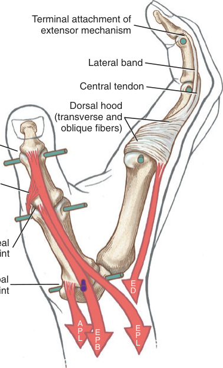
Các cơ duỗi ngoại lai của ngón cái là cơ duỗi dài ngón cái (extensor pollicis longus), cơ duỗi ngắn ngón cái (extensor pollicis brevis), và cơ dạng dài ngón cái (abductor pollicis longus) (xem Hình 8.39 và 8.41). Các cơ được chi phối bởi dây thần kinh quay này có điểm bám gần trên vùng mặt lưng của cẳng tay. Các gân của các cơ này tạo thành "hộp thuốc snuff giải phẫu" (anatomic snuffbox) nằm ở mặt quay của cổ tay. Các gân của cơ dạng dài ngón cái và cơ duỗi ngắn ngón cái cùng đi qua ngăn mặt lưng thứ nhất (first dorsal compartment) bên trong bao giữ gân duỗi của cổ tay (xem Hình 7.23). Về phía xa của bao giữ gân duỗi, gân của cơ dạng dài ngón cái chèn chủ yếu vào mặt lòng‑mu (radial‑dorsal) của nền đốt bàn tay ngón cái. Các điểm bám xa bổ sung của cơ này bám vào xương thuyền lớn (trapezium) và hòa lẫn với các sợi của các cơ nội tại thenar.114,124 Cơ duỗi ngắn ngón cái bám về phía xa vào nền lưng của đốt gần ngón cái. Gân của cơ duỗi dài ngón cái bắt qua cổ tay trong ngăn thứ ba trong một rãnh ngay kề trong (medial) so với mỏ mặt lưng (dorsal tubercle) của xương quay (xem Hình 7.23). Cơ duỗi dài ngón cái bám về phía xa vào nền lòng của đốt xa ngón cái. Các sợi từ cả hai gân duỗi ngoại lai đóng góp vào gân trung tâm của cơ chế duỗi của ngón cái.
Các tác động đa bội của cơ duỗi dài ngón cái, cơ duỗi ngắn ngón cái, và cơ dạng dài ngón cái có thể được hiểu bằng cách lưu ý đường lực của chúng liên quan đến các trục xoay tại các khớp chúng đi qua (xem Hình 8.42). Cơ duỗi dài ngón cái duỗi các khớp IP, MCP, và CMC của ngón cái. Cơ đi qua mặt lưng của trục trong‑ngoài (medial‑lateral) của khớp CMC và do đó cũng có khả năng khép (adducting) khớp này. Cơ duỗi dài ngón cái là duy nhất trong khả năng thực hiện cả ba tác động tạo thành sự repositioning của ngón cái về tư thế giải phẫu: duỗi (với sự xoay bên hơi) và khép đốt bàn tay thứ nhất.
Hình 8.42 cũng minh họa rằng cơ duỗi ngắn ngón cái là một cơ duỗi các khớp MCP và CMC của ngón cái; cơ dạng dài ngón cái chỉ duỗi tại khớp CMC. Ít nhất về mặt lý thuyết, cơ dạng dài cũng có thể dạng (abduct) khớp CMC, dựa trên đường lực của nó đi qua ngay trước (lòng bàn tay) trục xoay trong‑ngoài của khớp. Tác động duỗi‑dạng kết hợp của cơ dạng dài ngón cái phản ánh sự bám của nó trên góc lòng‑mu của nền đốt bàn tay ngón cái. Các tác động của tất cả các cơ bắt qua các khớp của ngón cái được tóm tắt trong Hộp 8.1.
Cơ duỗi dài ngón cái và cơ dạng dài ngón cái là những cơ gây lệch quay (radial deviators) mạnh tại cổ tay (xem Hình 7.24). Do đó, trong quá trình duỗi ngón cái, một cơ gây lệch trụ (ulnar deviator) phải được kích hoạt để ổn định cổ tay chống lại sự lệch quay không mong muốn. Sự kích hoạt này rõ ràng bằng cách sờ nắn (palpating) gân nổi lên của cơ gấp cổ tay trụ, nằm ngay gần xương tháp, trong quá trình duỗi nhanh và hoàn toàn ngón cái.
HỘP 8.1 — Các Tác Động của Cơ Bắt Qua Các Khớp của Ngón Cái (Actions of Muscles That Cross the Joints of the Thumb)
*Tác động thứ cấp (Secondary action). †Chỉ một bậc tự do được xem xét cho khớp liên đốt‑đốt bàn tay. ‡Tác động tự ý hơi được ghi nhận chỉ trong các trường hợp tổn thương dây thần kinh quay.
Bàn tay chứa 20 cơ nội tại. Bất chấp kích thước tương đối nhỏ, các cơ này rất cần thiết cho sự kiểm soát tinh tế của các ngón. Về phương diện địa hình, các cơ nội tại được chia thành bốn nhóm, như sau:
Các Cân Nhắc Giải Phẫu (Anatomic Considerations). Cơ dạng ngắn ngón cái, cơ gấp ngắn ngón cái, và cơ đối ngón cái tạo nên phần lớn của mô gồm thenar (xem Hình 8.34).41 Cơ gấp ngắn ngón cái thường được mô tả là có hai phần: một đầu nông (superficial head), tạo nên phần lớn cơ, và một đầu sâu (deep head), bao gồm một tập hợp nhỏ các sợi được xác định kém và thường là các sợi của đầu chéo của cơ khép ngón cái.122 Chương này chỉ xem xét đầu nông khi thảo luận về cơ gấp ngắn ngón cái. Sâu dưới cơ dạng ngắn ngón cái là cơ đối ngón cái (Hình 8.43). Cả ba cơ thenar có điểm bám gần trên dây chằng ngang cổ tay và các xương cổ tay liền kề. Cả cơ gấp ngắn và cơ dạng đều có điểm bám xa trên mặt bên quay (radial side) của nền đốt gần. Thêm vào đó, cơ dạng ngắn ngón cái bám một phần vào mặt bên quay của cơ chế duỗi của ngón cái. Cơ đối ngón cái sâu hơn bám về phía xa vào toàn bộ bờ quay của đốt bàn tay ngón cái.
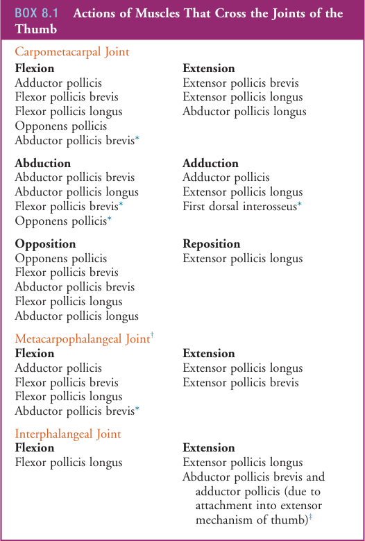
Các Cân Nhắc Chức Năng (Functional Considerations). Cơ palmaris longus, bằng cách bám vào dây chằng ngang cổ tay, cung cấp một số ổn định gần cho các cơ của mô gồm thenar. Một trách nhiệm chính của các cơ thenar này là định vị ngón cái trong các mức độ đối (opposition) khác nhau, thường để hỗ trợ việc nắm. Như đã thảo luận trước đó, sự đối kết hợp các yếu tố của sự dạng khớp CMC, gấp, và xoay trong (medial rotation). Mỗi cơ bên trong mô gồm thenar là một cơ vận động chính (prime mover) cho ít nhất một thành phần của sự đối, và một trợ giúp cho một số thành phần khác (xem Hộp 8.1).61,119
Các tác động của các cơ thenar qua khớp CMC trở nên rõ ràng khi đường lực của mỗi cơ liên quan đến một trục xoay cụ thể được nhìn (Hình 8.44).119 Lưu ý rằng cơ đối ngón cái có một đường lực để xoay trong ngón cái hướng về phía các ngón. Bởi vì cơ đối ngón cái có điểm bám xa trên đốt bàn tay (và gần khớp MCP), toàn bộ lực co của nó được dành riêng để kiểm soát khớp CMC.
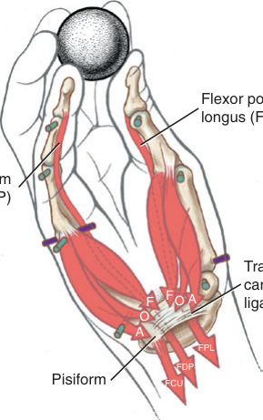
Các Hàm Ý của Tổn Thương Dây Thần Kinh Giữa (Implications of Median Nerve Injury). Sự cắt đứt dây thần kinh giữa làm liệt cả ba cơ của mô gồm thenar: cụ thể là cơ đối ngón cái, cơ gấp ngắn ngón cái, và cơ dạng ngắn ngón cái. Hậu quả là, sự đối của ngón cái về cơ bản bị vô hiệu hóa. Vùng mô gồm thenar của bàn tay cũng trở nên phẳng vì teo cơ. Sự mất chức năng của sự đối, cùng với sự tê (anesthesia) ở các đầu ngón cái và các ngón quay, làm giảm đáng kể cái nắm chính xác và các chức năng thao tác khác của bàn tay.
Ngoài chức năng xoay trong quan trọng của cơ đối ngón cái, cả ba cơ của mô gồm thenar độc lập thực hiện các tác động kết hợp của gấp và dạng khớp CMC. Các động học này rất cần thiết để nâng ngón cái lên và vượt qua lòng bàn tay trong quá trình đối. Hình 8.45 so sánh các tác động kết hợp này và các tác động khác của các cơ bắt qua khớp CMC của ngón cái. Như được lưu ý bởi vị trí của các chấm đen, hầu hết các cơ đều có một tác động kết hợp như một cơ gấp‑dạng, cơ gấp‑khép, cơ duỗi‑khép, hoặc cơ duỗi‑dạng. Như đã chỉ ra, dây thần kinh giữa là nguồn duy nhất của sự chi phối cho góc phần tư gấp‑dạng của các cơ. Mặc dù sự dạng ngón cái vẫn có thể chủ yếu vì cơ dạng dài ngón cái được chi phối bởi dây thần kinh quay,13 tác động này thường bị ghi đè bởi mô‑men xoắn khép mạnh còn lại của cơ khép ngón cái được chi phối bởi dây thần kinh trụ (xem ADPo và ADPt). Vì lý do này, những người bị tổn thương dây thần kinh giữa rất dễ mắc một co rút khép (adduction contracture) của khớp CMC của ngón cái.122
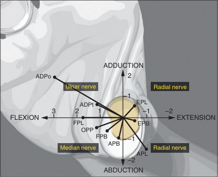
(Sơ đồ dựa trên dữ liệu ban đầu được vẽ bởi Smutz WP, Kongsayreepong A, Hughes RE, et al: Mechanical advantage of the thumb muscles, J Biomech 31:565–570, 1998. Từ Neumann DA, Bielefeld TB: The carpometacarpal joint of the thumb: stability, deformity, and therapeutic intervention, J Orthop Sports Phys Ther 33:386, 2003.)
Các Cân Nhắc Giải Phẫu (Anatomic Considerations). Các cơ của mô gồm hypothenar bao gồm cơ gấp ngón út (flexor digiti minimi), cơ dạng ngón út (abductor digiti minimi), cơ đối ngón út (opponens digiti minimi), và cơ gấp lòng bàn tay (palmaris brevis) (xem Hình 8.34 và 8.43). Cơ dạng ngón út là cơ nông nhất và ở giữa (medial) nhất của các cơ này, chiếm bờ trụ cực đoan của bàn tay. Cơ gấp ngón út tương đối nhỏ nằm ngay bên quay (lateral) và thường hòa lẫn với cơ dạng. Sâu dưới các cơ này là cơ đối ngón út, cơ lớn nhất của các cơ hypothenar. Cơ gấp lòng bàn tay là một cơ mỏng và tương đối không đáng kể, dày bằng một con tem thư. Nó bám giữa dây chằng ngang cổ tay và một vùng da ngay xa xương tháp (xem Hình 8.34). Cơ gấp lòng bàn tay nâng chiều cao của mô gồm hypothenar, thường để hỗ trợ làm sâu thêm độ lõm của lòng bàn tay.
Kế hoạch giải phẫu tổng thể của các cơ hypothenar tương tự như các cơ của mô gồm thenar.104 Cả cơ gấp ngón út và cơ đối ngón út đều có điểm bám gần trên dây chằng ngang cổ tay và móc của xương móc (hook of the hamate). Cơ dạng ngón út có các điểm bám gần rộng từ dây chằng pisohamate, xương tháp, và gân cơ gấp cổ tay trụ. Trong quá trình dạng ngón út có kháng cự hoặc nhanh, cơ gấp cổ tay trụ co để ổn định điểm bám cho cơ dạng ngón út. Hiệu ứng này có thể được xác minh bằng cách sờ nắn gân của cơ gấp cổ tay trụ ngay gần xương tháp.
Các Cân Nhắc Chức Năng (Functional Considerations). Một chức năng chung của các cơ hypothenar là nâng và "ủ" (cup) bờ trụ của bàn tay. Tác động này làm sâu thêm vòm cung ngang xa (distal transverse arch), và tăng cường tiếp xúc ngón với các vật được giữ (xem Hình 8.44). Khi cần, cơ dạng ngón út có thể xòe ngón út để kiểm soát tốt hơn sự nắm. Cơ đối ngón út xoay, hoặc đối, đốt bàn tay thứ năm hướng về ngón giữa. Sự co của các cơ gấp ngón dài của ngón út, chẳng hạn như cơ gấp sâu các ngón, cũng đóng góp vào việc nâng bờ trụ của bàn tay. Các tác động của tất cả các cơ bắt qua các khớp của ngón út được liệt kê trong Hộp 8.2.
Tổn thương dây thần kinh trụ có thể làm liệt hoàn toàn các cơ hypothenar. Mô gồm hypothenar trở nên phẳng như kết quả của teo cơ. Tác động nâng và ủ bờ trụ của bàn tay bị giảm đáng kể. Sự tê trên toàn bộ ngón út có thể góp phần vào sự mất sự khéo léo (dexterity).
HỘP 8.2 — Các Tác Động của Cơ Bắt Qua Các Khớp của Ngón Út (Actions of Muscles That Cross the Joints of the Small Finger)
*Tác động thứ cấp (Secondary action).
Cơ khép ngón cái là một cơ hai đầu nằm sâu trong khe mạng (web space) của ngón cái, ở mặt lòng bàn tay của các đốt bàn tay thứ hai và thứ ba (xem Hình 8.43). Cơ có điểm bám gần trên vùng xương ổn định nhất của bàn tay. Đầu chéo (oblique head) dày hơn bắt nguồn từ xương đầu (capitate bone), các nền của các đốt bàn tay thứ hai và thứ ba, và các mô liên kết liền kề khác.122 Đầu ngang (transverse head) mỏng hơn, hình tam giác, bám trên mặt lòng của xương đốt bàn tay thứ ba. Cả hai đầu hợp nhất cho một điểm bám xa chung trên mặt bên trụ (ulnar side) của nền đốt gần ngón cái; gân thường gửi các sợi vào cơ chế duỗi của ngón cái.
Cơ khép ngón cái là một cơ vượt trội tại khớp CMC, tạo ra sự kết hợp lớn nhất của mô‑men xoắn gấp và khép.16 Nguồn mô‑men xoắn quan trọng này được áp dụng cho nhiều hoạt động, chẳng hạn như véo một vật giữa ngón cái và ngón trỏ hoặc đóng một chiếc kéo (Hình 8.46). Đầu ngang của cơ khép ngón cái sử dụng một cánh tay mô‑men rất dài để tạo ra cả mô‑men xoắn gấp (Hình 8.46A) và khép (Hình 8.46B) tại nền ngón cái. Mặc dù các sợi ngang có đòn bẩy lớn hơn tại khớp CMC, đầu chéo dày hơn tạo ra mô‑men xoắn gấp và khép lớn hơn (so sánh ADPo và ADPt trong Hình 8.45).79,119
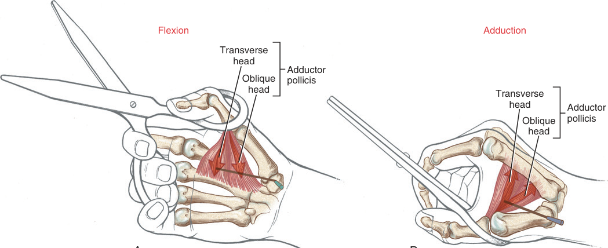
Các cơ giun (lumbricals) (từ gốc Latin lumbricus, giun đất) là bốn cơ thon có nguồn gốc có thể di chuyển từ các gân của cơ gấp sâu các ngón (xem Hình 8.33 và 8.34). Cụ thể hơn, các cơ giun liên quan đến ngón trỏ và ngón giữa bắt nguồn từ các mặt quay của các gân profundus tương ứng. Mặc dù thay đổi, các cơ giun liên quan đến ngón áp út và ngón út thường là lưỡng lông (bipennate), bắt nguồn từ các mặt quay của các gân profundus tương ứng cũng như các mặt trụ của các gân liền kề. Giống như cơ gấp sâu các ngón, các cơ giun có một nguồn chi phối kép: hai cơ giun bên (lateral) bởi dây thần kinh giữa, và hai cơ giun giữa (medial) bởi dây thần kinh trụ.
Tất cả bốn cơ giun cho thấy sự biến thiên rõ rệt cả về kích thước và sự bám.103 Từ các điểm bám gần gân của chúng, các cơ giun đi mặt lòng trước dây chằng ngang sâu xuyên đốt bàn tay (deep transverse metacarpal ligament) và sau đó mặt quay của các khớp MCP (xem Hình 8.41, cơ giun thứ nhất). Về phía xa, một cơ giun điển hình bám vào băng bên liền kề của cơ chế duỗi, thường qua các sợi chéo của mũ duỗi (xem góc nhìn cận cảnh của cơ giun thứ nhất trong Hình 8.47). Sự bám xa này cho phép các cơ giun tác dụng một lực kéo gần (proximal pull) xuyên suốt cơ chế duỗi.
Chức năng của các cơ giun đã được nghiên cứu và tranh luận trong nhiều năm.22,72,82,110,130 Đồng thuận phổ quát là sự co của chúng tạo ra gấp tại các khớp MCP và duỗi tại các khớp PIP và DIP.137 Tác động có vẻ nghịch lý này là có thể vì các cơ giun đi mặt lòng trước các khớp MCP nhưng mặt lưng sau các khớp PIP và DIP (Hình 8.48).
Trong tất cả các cơ nội tại của bàn tay, các cơ giun có tỷ lệ chiều dài sợi‑trên‑chiều dài cơ dài nhất, nhưng diện cắt ngang nhỏ nhất.15,79 Thiết kế giải phẫu này gợi ý rằng các cơ này có khả năng tạo ra một lượng lực nhỏ trên một khoảng cách tương đối dài. Mặc dù tiềm năng lực thấp trong một cơ nói chung gợi ý một vai trò hạn chế trong việc kiểm soát vận động, điều này không phải luôn luôn như vậy. Các cơ có các chức năng động học quan trọng khác bên cạnh việc tạo ra lực. Cơ giun thứ nhất, chẳng hạn, sở hữu một nguồn rất phong phú các thoi cơ (muscle spindles) — các cơ quan cảm giác giám sát chặt chẽ các thay đổi về chiều dài của cơ.
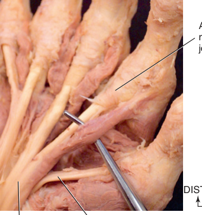
Mật độ thoi cơ của cơ giun thứ nhất lớn hơn khoảng ba lần so với các cơ gian xương bên trong bàn tay và tám lần so với cơ biceps brachii.105 Mật độ lớn các thoi cơ trong các cơ giun gợi ý một vai trò trong việc cung cấp phản hồi cảm giác trong các vận động phức tạp.110,135 Bằng cách cũng bám vào các gân của cơ gấp sâu các ngón, có lẽ các cơ giun nằm trong vị trí để giúp phối hợp các tương tác giữa các cơ nội tại và ngoại lai.
Các cơ gian xương (interosseus muscles) được đặt tên theo vị trí chung của chúng giữa các xương đốt bàn tay (xem Hình 8.4 và 8.5). Giống như các cơ giun, các biến thiên về sự bám và hình thái là quy luật hơn là ngoại lệ.30,122 Nói chung, các cơ gian xương tác động tại các khớp MCP để xòe các ngón ra xa nhau (dạng — abduction) hoặc kéo chúng lại gần nhau (khép — adduction).
Bốn cơ gian xương lòng bàn tay (palmar interossei) của bàn tay là các cơ thon, thường là cơ một đầu (single‑headed) chiếm vùng lòng bàn tay của các khoảng gian xương (interosseous spaces). Ba cơ gian xương lòng bàn tay đến các ngón có điểm bám gần trên các mặt lòng và các bên của các đốt bàn tay thứ hai, thứ tư, và thứ năm (xem Hình 8.43). Sự bám xa của các cơ thay đổi nhưng thường bao gồm các sợi chéo của mũ duỗi, và các bên của các nền của các đốt gần.30 Các cơ này khép các khớp MCP thứ hai, thứ tư, và thứ năm hướng về đường giữa của bàn tay (Hình 8.49). Cơ gian xương lòng bàn tay đến ngón cái chiếm khoảng gian xương lòng bàn tay thứ nhất.91 Cơ sâu này có điểm bám xa trên mặt trụ của đốt gần ngón cái, và thường bám vào một xương sesamoid tại khớp MCP.122 Cơ này thường nhỏ hoặc hình thành một phần. Mặc dù có sự tranh luận trong y văn giải phẫu, cơ gian xương lòng bàn tay thứ nhất có khả năng là một phần nhỏ của đầu chéo của cơ khép ngón cái.8 Bất kể nguồn gốc của nó, cơ nhỏ này nằm trong vị trí để giúp gấp khớp MCP của ngón cái, kéo đốt bàn tay thứ nhất về phía đường giữa của bàn tay.
Bốn cơ gian xương mu (dorsal interossei) lấp đầy các mặt mu của các khoảng gian xương (xem Hình 8.39). Trái ngược với các cơ gian xương lòng bàn tay, các cơ mu có hình dạng lưỡng lông (bipennate). Mặc dù các biến thiên thường gặp, quy tắc chung là các cơ gian xương mu có các điểm bám xa vào các sợi chéo của mũ duỗi, cũng như vào các bên của các nền của các đốt gần.55,80 Một số điểm bám xa có thể hòa lẫn với các khía cạnh lòng hơn của các sợi ngang của mũ duỗi và bản lòng bàn tay.30 Cơ gian xương mu thứ nhất (trước đây là cơ dạng ngón trỏ — abductor indicis) là lớn nhất và dễ tiếp cận nhất để khám lâm sàng.55 Với ngón trỏ được ổn định tốt, cơ gian xương mu thứ nhất có thể hỗ trợ cơ khép ngón cái trong việc khép ngón cái tại khớp CMC. (Điều này có thể được hình dung bằng cách đảo ngược hướng của mũi tên của cơ gian xương mu thứ nhất đến ngón cái trong Hình 8.48.)
Như một tập hợp, các cơ gian xương mu dạng các khớp MCP của ngón trỏ, ngón giữa, và ngón áp út ra xa một đường tham chiếu tưởng tượng qua ngón giữa (xem Hình 8.49). Sự dạng khớp MCP thứ năm được thực hiện bởi cơ dạng ngón út của nhóm hypothenar.
Ngoài việc dạng và khép các ngón, các cơ gian xương và cơ dạng ngón út cung cấp một nguồn quan trọng của sự ổn định động (dynamic stability) cho các khớp MCP. Khi hai bàn tay được minh họa trong Hình 8.49 được chồng lên nhau về mặt thị giác, rõ ràng là mỗi khớp MCP của các ngón được trang bị một cặp cơ dạng và khép. Các cặp hoạt động như các dây chằng bên động (dynamic collateral ligaments), cung cấp sức mạnh cho các khớp MCP. Hoạt động theo cặp, hệ cơ gian xương này cũng kiểm soát mức độ xoay trục (axial rotation) được phép tại các khớp MCP.
Ở các mức độ khác nhau, cả cơ gian xương lòng và mu đều có một đường lực đi mặt lòng trước các khớp MCP, đặc biệt khi các khớp MCP được gấp. Các cơ gian xương, qua các điểm bám của chúng vào cơ chế duỗi, đi mặt lưng sau các khớp IP của các ngón (xem ngón trỏ trong Hình 8.48). Giống như các cơ giun, do đó, sự co của các cơ gian xương gấp các khớp MCP và duỗi các khớp IP. So với các cơ giun, các cơ gian xương tạo ra các mô‑men xoắn gấp lớn hơn tại các khớp MCP. Mặc dù các cơ giun có cánh tay mô‑men lớn hơn cho tác động này, diện cắt ngang áp đảo lớn hơn của các cơ gian xương trao cho chúng tiềm năng mô‑men xoắn gấp lớn hơn. Trái ngược với các cơ giun, các cơ gian xương tạo ra các lực tương đối lớn hơn nhưng trên một khoảng cách co ngắn hơn (Bảng 8.5).57
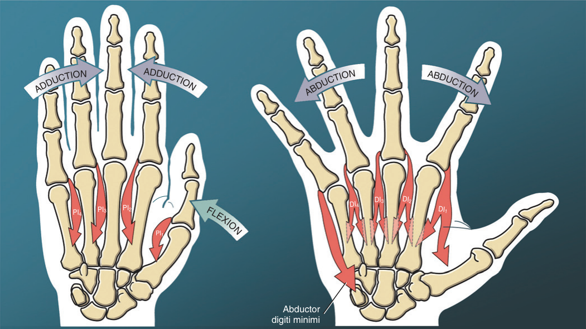
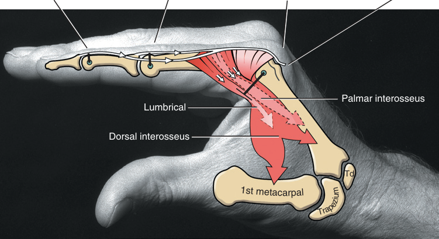
| Đặc Điểm (Feature) | Cơ Giun (Lumbricals) | Cơ Gian Xương Mu (Dorsal Interossei) | Cơ Gian Xương Lòng Bàn Tay (Palmar Interossei) |
|---|---|---|---|
| Sự chi phối thần kinh (Innervation) | Bên: Dây thần kinh giữa (Median); Giữa: Dây thần kinh trụ (Ulnar) | Dây thần kinh trụ (Ulnar) | Dây thần kinh trụ (Ulnar) |
| Điểm bám xa chính (Primary distal attachments) | Sợi chéo của mũ duỗi, và cuối cùng vào băng bên liền kề của cơ chế duỗi | Sợi chéo của mũ duỗi (và cuối cùng vào băng bên liền kề), và vào mặt bên của nền đốt gần | Sợi chéo của mũ duỗi (và cuối cùng vào băng bên liền kề), và vào mặt bên của nền đốt gần |
| Đặc điểm co (Contractile characteristics) | Tạo ra lực tương đối nhỏ trên khoảng cách tương đối dài | Tạo ra lực tương đối lớn trên khoảng cách tương đối ngắn | Không phân biệt (Nondistinct) |
| Tác động chính (Primary actions) | Gấp khớp MCP và duỗi khớp PIP và DIP | Dạng các ngón; gấp khớp MCP và duỗi khớp PIP và DIP | Khép các ngón; gấp khớp MCP và duỗi khớp PIP và DIP |
| Ghi chú (Comments) | Nguồn cung cấp tương đối lớn các thoi cơ, gợi ý một nguồn phản hồi cảm giác quan trọng để hỗ trợ dẫn hướng vận động | Điểm bám xa thường bao gồm xương và cơ chế duỗi | Thường là cơ một đầu; điểm bám xa thường bao gồm xương và cơ chế duỗi. Cơ gian xương lòng bàn tay thứ nhất (đến ngón cái) hỗ trợ với sự gấp khớp MCP |
DIP, khớp liên đốt xa (distal interphalangeal); MCP, khớp liên đốt‑đốt bàn tay (metacarpophalangeal); PIP, khớp liên đốt gần (proximal interphalangeal).
Cơ duỗi các ngón và các cơ nội tại của các ngón hợp tác hiệp đồng (synergistically) để duỗi ngón. Nghịch lý thay, chính là các tác động đối kháng của cơ duỗi các ngón và các cơ nội tại qua khớp MCP cho phép chúng duỗi hiệp đồng các khớp IP. Mối quan hệ này rõ ràng khi quan sát một người bị tổn thương dây thần kinh trụ (Hình 8.52A). Với sự liệt của tất cả các cơ nội tại của hai ngón giữa, sự kích hoạt cơ duỗi các ngón gây ra một sự "móng vuốt" (clawing) đặc trưng của các ngón: các khớp MCP quá duỗi và các khớp IP vẫn một phần gấp. Điều này thường được gọi là tư thế "nội‑tại‑âm" (intrinsic‑minus) vì sự thiếu hụt các cơ được chi phối nội tại. (Tư thế này về chức năng tương tự tư thế "ngoại‑lai‑dương" (extrinsic‑plus) được minh họa trong Hình 8.50.) Nếu không có mô‑men xoắn gấp khớp MCP bình thường do các cơ nội tại cung cấp, cơ duỗi các ngón chỉ hoạt động để quá duỗi các khớp MCP. Tư thế này kéo căng cơ gấp sâu các ngón, do đó thêm kháng cự chống lại sự duỗi các khớp IP. Như minh họa trong Hình 8.52B, với sự áp dụng thủ công một mô‑men xoắn gấp qua khớp MCP (tức là một lực bình thường do các cơ nội tại cung cấp), sự co của cơ duỗi các ngón có thể duỗi hoàn toàn các khớp IP. Ngăn khớp MCP quá duỗi cũng làm lỏng gân profundus, do đó giảm thiểu sức căng thụ động của cơ chống lại sự duỗi các khớp IP. Ngăn các khớp MCP quá duỗi là một hình thức can thiệp trị liệu sau khi liệt các cơ nội tại của các ngón. Các nhà trị liệu có thể chế tạo một dụng cụ chỉnh hình (orthosis) hạn chế sự duỗi các khớp MCP; các bác sĩ phẫu thuật có thể thiết kế một khối cơ (muscular block) chống lại sự quá duỗi bằng cách định tuyến lại (rerouting) một gân từ một cơ khỏe hơn, được chi phối, đến mặt gấp của các khớp MCP liên quan.
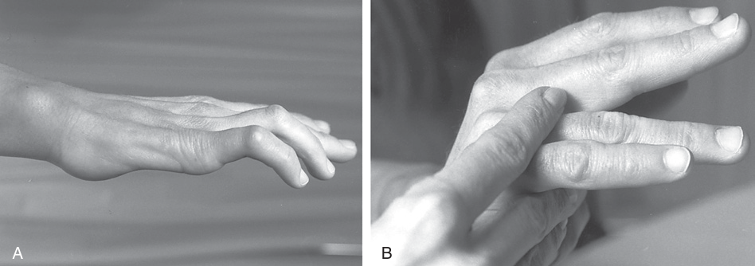
Sự kích hoạt các cơ gấp cổ tay bình thường đi kèm với sự duỗi ngón chủ động, đặc biệt khi được thực hiện nhanh. Mặc dù hoạt động này chỉ được minh họa trong cơ gấp cổ tay quay (flexor carpi radialis) trong Hình 8.51, các cơ gấp cổ tay khác cũng hoạt động. Các cơ gấp cổ tay bù trừ tiềm năng duỗi lớn của cơ duỗi các ngón tại cổ tay. Cổ tay thực sự gấp hơi trong quá trình duỗi ngón nhanh và hoàn toàn. (So sánh Hình 8.51A với Hình 8.51C.) Sự gấp cổ tay giúp duy trì chiều dài tối ưu của cơ duỗi các ngón trong quá trình duỗi ngón chủ động.
Như được mô tả trong Hình 8.48, sự co đồng thời của các cơ nội tại của các ngón (cơ giun và cơ gian xương) tạo ra một sự kết hợp gấp khớp MCP và duỗi khớp IP. Vị trí này của bàn tay được gọi là vị trí nội‑tại‑dương (intrinsic‑plus). Trái ngược lại, sự co đồng thời của các cơ ngoại lai của các ngón (cơ duỗi các ngón, cơ gấp nông các ngón, và cơ gấp sâu các ngón) tạo ra sự quá duỗi khớp MCP và gấp khớp IP: vị trí ngoại‑lai‑dương (extrinsic‑plus). Hai vị trí đối opposite của các ngón được trình bày trong Hình 8.50. Một nguyên lý động học rất quan trọng của bàn tay là hầu hết các vận động chức năng hoặc phức tạp của các ngón đòi hỏi một sự pha trộn hiệp đồng của hai tác động đối opposite này. Điểm này được củng cố trong các phần tiếp theo.
Tương tác giữa các cơ ngoại lai và nội tại của bàn tay có thể tạo ra nhiều sự kết hợp của các vận động được dùng để thực hiện một số lượng chức năng dường như vô hạn. Tuy nhiên, phân tích sau đây giải quyết tương tác cơ bắp bên trong một ngón điển hình trong hai chức năng cơ bản: mở và đóng bàn tay. Sự tương tác cơ bắp chính xác được dùng để thực hiện các tác động này là có tranh luận và không được hiểu hoàn toàn, bất chấp nhiều năm nghiên cứu và học tập dựa trên giải phẫu, cơ sinh học, điện cơ đồ (electromyography), và mô hình mô phỏng máy tính.* Một phần của trở ngại trong việc hiểu các tương tác cơ bắp là các vận động tương tự có thể được thực hiện bởi các kết hợp khác nhau của các cơ, cả trong và giữa các cá nhân. Sự tương tác cơ bắp chính xác cũng phụ thuộc vào tốc độ hoặc lực của một hoạt động, kỹ năng của người thực hiện, trọng lượng và hình dạng của vật được thao tác, và sự biến thiên tự nhiên của vận động con người. Đáng quan tâm, phần lớn những gì được biết một cách tuyệt đối đã được học bằng cách quan sát cẩn thận các suy giảm cơ học‑bệnh lý (pathomechanic impairments) của bàn tay kết quả từ một sự phá vỡ hệ thần‑cơ‑xương.16,62
Mở bàn tay thường được thực hiện trong sự chuẩn bị cho sự nắm. Lực cản lớn nhất đối với sự duỗi hoàn toàn các ngón qua các khớp MCP và IP thường không đến từ trọng lực mà từ lực cản nhớt‑đàn hồi (viscoelastic resistance) được tạo ra bởi sự kéo căng các cơ gấp ngón ngoại lai. Lực "bật lại" (recoil) thụ động được tạo ra bên trong cơ này phần lớn chịu trách nhiệm cho tư thế một phần gấp của một bàn tay thư giãn.
Các cơ duỗi chính của các ngón là cơ duỗi các ngón và các cơ nội tại, cụ thể là các cơ giun và cơ gian xương. Nói chung, các cơ giun cho thấy một mức độ hoạt động điện cơ (EMG) lớn hơn và nhất quán hơn so với các cơ gian xương trong quá trình duỗi ngón.82
Hình 8.51A cho thấy cơ duỗi các ngón tạo ra một lực trên cơ chế duỗi, kéo khớp MCP về phía duỗi. Các cơ nội tại của các ngón cung cấp cả hiệu ứng trực tiếp và gián tiếp lên cơ học của sự duỗi các khớp IP (xem Hình 8.51B,C). Hiệu ứng trực tiếp được cung cấp bởi lực kéo gần đặt trên cơ chế duỗi; hiệu ứng gián tiếp được cung cấp bởi việc tạo ra một mô‑men xoắn gấp tại khớp MCP.64 Mô‑men xoắn gấp ngăn cơ duỗi các ngón quá duỗi khớp MCP — một tác động sớm làm tiêu tán hầu hết lực co của nó. Chỉ với khớp MCP bị chặn không bị quá duỗi, cơ duỗi các ngón mới có thể căng cơ chế duỗi đủ để duỗi hoàn toàn các khớp IP.
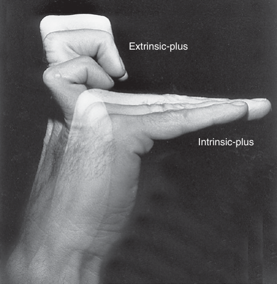
*Các tài liệu tham khảo: 5, 15, 22, 59, 64, 72, 74, 81, 82, 92, 110.
Như được minh họa trong Hình 8.41, các dây chằng chéo hãm (oblique retinacular ligaments) đi từ mặt lòng của khớp PIP đến mặt lưng của khớp liên đốt xa (DIP). Mặc dù có sự tranh luận về tầm quan trọng tương đối của chúng, hướng chéo của chúng qua các khớp PIP và DIP cho phép chúng phối hợp sự duỗi giữa hai khớp này.6,44 Cơ duỗi các ngón và các cơ nội tại duỗi khớp PIP qua cơ chế duỗi; một tác động như vậy kéo căng dây chằng chéo hãm (Hình 8.53, bước 1 đến 3). Lực thụ động trong dây chằng chéo hãm bị kéo căng được truyền về phía xa, giúp duỗi khớp DIP (xem Hình 8.53, bước 4). Dây chằng chéo hãm đôi khi được gọi là "dây chằng nối" (link ligament), gợi ý vai trò có khả năng của nó trong việc giúp đồng bộ hóa sự duỗi tại cả hai khớp.
Dây chằng chéo hãm có thể trở nên căng vì viêm khớp (arthritis), bệnh mô liên kết, hoặc sang chấn. Sự căng trong các dây chằng này có thể liên quan đến co rút Dupuytren (Dupuytren's contracture), một tình trạng có căn nguyên không rõ liên quan đến sự dày lên và ngắn lại tiến triển của cân (fascia) lòng bàn tay và ngón của bàn tay.83 Tình trạng thường dẫn đến một tư thế gấp của các ngón, đặc biệt ở mặt trụ của bàn tay. Dây chằng chéo hãm cũng có thể tham gia, dẫn đến một co rút gấp quá mức tại khớp PIP. Các nỗ lực duỗi thụ động một khớp PIP với một dây chằng chéo hãm căng thường gây ra khớp DIP duỗi thụ động.
TẬP TRUNG ĐẶC BIỆT 8.7 — Dây Chằng Chéo Hãm: Truyền Lực Duỗi Thụ Động Từ Khớp Liên Đốt Gần Đến Khớp Liên Đốt Xa (Oblique Retinacular Ligaments: Transfer of Passive Extension Force from the Proximal Interphalangeal Joint to the Distal Interphalangeal Joint)
Các cơ được dùng để đóng bàn tay phụ thuộc một phần vào các khớp cụ thể cần được gấp và vào các yêu cầu lực của tác động. Gấp các ngón chống lại kháng cự hoặc ở tốc độ tương đối cao đòi hỏi sự kích hoạt của cơ gấp sâu các ngón, cơ gấp nông các ngón, và, ở mức độ thấp hơn, các cơ gian xương (Hình 8.54A). Các lực do cơ gấp sâu và nông các ngón tạo ra gấp tất cả ba khớp của các ngón; ngón gấp kéo cơ chế duỗi về phía xa vài milimet.
Mặc dù thường không hoạt động trong khi bàn tay đang đóng, các cơ giun vẫn có thể hỗ trợ thụ động tác động này. Hãy nhớ rằng các cơ giun bám giữa cơ gấp sâu các ngón và cơ chế duỗi. Trong quá trình gấp ngón chủ động, các cơ giun bị kéo căng theo hướng gần vì cơ gấp sâu các ngón đang co và đồng thời bị kéo căng theo hướng xa do sự di cư (migration) xa của cơ chế duỗi (xem Hình 8.54B, mũi tên hai chiều trong cơ giun). Giữa sự duỗi hoàn toàn và gấp chủ động hoàn toàn, một cơ giun phải kéo căng một khoảng cách đặc biệt.110 Sự kéo căng tạo ra một mô‑men xoắn gấp thụ động qua khớp MCP. Mặc dù nhỏ, mô‑men xoắn thụ động này có thể bổ sung cho mô‑men xoắn gấp chủ động do các cơ gian xương, và chủ yếu, hệ cơ gấp ngoại lai tạo ra.73
Tổn thương dây thần kinh trụ có thể gây liệt hầu hết các cơ nội tại tác động lên các ngón. Sức mạnh cái nắm nỗ lực tối đa đã được chứng minh là giảm 38% ở những người khỏe mạnh những người bị chặn (block) tạm thời dây thần kinh trụ tại mức cổ tay.66 Thêm vào đó, sự liệt đánh dấu của các cơ nội tại làm thay đổi sự tuần tự thời gian của sự gấp qua các khớp ngón. Bình thường, các khớp PIP và DIP gấp trước, theo sát sau đó bởi sự gấp tại các khớp MCP. Với các cơ nội tại bị liệt, đặc biệt nếu bị kéo căng quá mức bởi sự quá duỗi mạn tính của các khớp MCP, sự khởi đầu gấp tại các khớp MCP bị trì hoãn đáng kể. Hậu quả là, các ngón "cuộn" (roll) vào tư thế gấp từ góc độ xa đến gần, mất đi vận động gấp quét rộng đặc trưng thấy ở các bàn tay được chi phối bình thường.5 Sự gấp không đồng bộ (asynchronous) kết quả có thể can thiệp vào chất lượng của sự nắm. Kiểu gấp cuộn từ xa đến gần có thể đẩy một số vật ra khỏi bàn tay đang nắm.
Bàn tay hoạt động như cơ quan thực hiện (effector organ) chính của chi trên cho sự nâng đỡ, thao tác, và sự nắm (prehension). Như một sự nâng đỡ, bàn tay có thể hoạt động theo một cách không đặc hiệu để neo (brace) hoặc ổn định một vật, thường giải phóng bàn tay kia cho một nhiệm vụ cụ thể hơn. Bàn tay cũng có thể được dùng như một nền tảng đơn giản để truyền hoặc tiếp nhận các lực, chẳng hạn như khi nâng đỡ đầu khi mệt hoặc để hỗ trợ trong việc đứng lên từ tư thế ngồi.
Cơ duỗi các ngón cho thấy hoạt động EMG nhất quán trong khi bàn tay đang đóng.81 Hoạt động này phản ánh vai trò của cơ như một phanh duỗi (extension brake) tại khớp MCP. Chức năng ổn định quan trọng này cho phép các cơ gấp ngón dài chuyển tác động của chúng về phía xa đến các khớp PIP và DIP. Nếu không có sự đồng kích hoạt (coactivation) của cơ duỗi các ngón, các cơ gấp ngón dài tiêu hao hầu hết tiềm năng gấp của chúng qua các khớp MCP, giảm tiềm năng của chúng cho các hành động tinh tế hơn tại các khớp xa hơn.
Tạo một nắm đấm mạnh đòi hỏi sự kích hoạt hiệp đồng mạnh từ các cơ duỗi cổ tay (xem Hình 8.54, cơ duỗi cổ tay quay ngắn — extensor carpi radialis brevis). Hoạt động cơ duỗi cổ tay có thể được xác minh bằng cách sờ nắn mu cẳng tay trong khi tạo một nắm đấm. Như đã giải thích trong Chương 7, chức năng chính của các cơ duỗi cổ tay, bao gồm cơ duỗi các ngón, là trung hòa xu hướng gấp cổ tay mạnh của các cơ gấp ngón ngoại lai được kích hoạt (xem lại Hình 7.25). Trong khi các ngón đang gấp chủ động, sự duỗi cổ tay cũng giúp duy trì chiều dài tối ưu hơn của các cơ gấp ngón ngoại lai. Nếu các cơ duỗi cổ tay bị liệt, các nỗ lực tạo một nắm đấm dẫn đến một tư thế gấp cổ tay và gấp ngón. Khi kết hợp với sức căng thụ động tăng lên trong cơ duỗi các ngón bị kéo căng quá mức, các cơ gấp ngón được rút ngắn quá mức và được kích hoạt không có khả năng tạo ra một cái nắm hiệu quả (xem Hình 7.27).
Có lẽ chức năng đa dạng nhất của bàn tay là khả năng thao tác (manipulate) các vật. Theo nghĩa rất tổng quát, bàn tay thao tác các vật theo hai cách cơ bản: các cử động ngón có thể lặp đi lặp lại và thô (blunt), chẳng hạn như gõ phím hoặc gãi, hoặc ngược lại, liên tục và trôi chảy, trong đó tốc độ và cường độ của cử động được kiểm soát, như khi viết hoặc may vá. Và, dĩ nhiên, nhiều — nếu không phải hầu hết — các loại thao tác ngón đều kết hợp cả hai yếu tố chuyển động này.
Cầm nắm (prehension) mô tả khả năng của các ngón tay và ngón cái để nắm giữ hoặc tóm lấy, thường để giữ, cố định, và nhặt lên các vật.33,70,95 Nhiều thuật ngữ khác nhau đã xuất hiện qua năm tháng để mô tả các hình thức cầm nắm. Nhiều dạng cầm nắm có thể được mô tả như một cái nắm (grip hoặc grasp), trong đó tất cả các ngón được sử dụng, hoặc như một cái kẹp (pinch), chủ yếu sử dụng ngón cái và ngón trỏ. Mỗi dạng có thể được phân loại thêm dựa trên nhu cầu về lực (được định nghĩa lỏng lẻo là lực cao với ít quan tâm đến độ chính xác của nhiệm vụ) hoặc độ chính xác (tức là mức độ chính xác cao với lực thấp). Các phân loại cụ thể của cầm nắm được mô tả dưới đây không nhằm bao gồm tất cả các cách có thể mà bàn tay có thể được sử dụng. Tuy nhiên, những định nghĩa này rất hữu ích để thiết lập một tài liệu tham khảo chung cho giao tiếp lâm sàng.
Về cơ bản, hầu hết các loại hoạt động cầm nắm thuộc về một trong năm loại sau:
1. Nắm chặt (power grip) được sử dụng khi cần sự ổn định và các lực lớn, mà không cần độ chính xác. Hình dạng của vật được giữ có xu hướng hình cầu hoặc hình trụ. Sử dụng búa là một ví dụ tốt về nắm chặt (Hình 8.55A). Hoạt động này đòi hỏi các lực mạnh từ các cơ gấp ngón, đặc biệt từ các ngón thứ tư và thứ năm; các cơ nội tại của các ngón, đặc biệt là các cơ gian cốt; và các cơ khép và gấp ngón cái. Các cơ duỗi cổ tay cần thiết để ổn định cổ tay.
2. Nắm tinh tế (precision grip) được sử dụng khi cần sự kiểm soát và/hoặc hành động tinh tế trong quá trình cầm nắm (xem Hình 8.55B,C). Ngón cái thường được giữ ở tư thế dạng một phần, và các ngón tay được gấp một phần. Nắm tinh tế sử dụng ngón cái và một hoặc nhiều ngón hơn để cải thiện độ chắc chắn của cầm nắm hoặc, nếu cần, để thêm các lượng lực thay đổi. Về mặt lâm sàng, thuật ngữ kẹp ba điểm (three-point pinch, hay three-jaw chuck) được chỉ định khi ngón trỏ và ngón giữa tiếp xúc với ngón cái. Nắm tinh tế có thể được điều chỉnh để phù hợp với các vật có kích thước khác nhau bằng cách thay đổi đường viền của cung ngang xa của bàn tay (xem Hình 8.55D–F).
3. Kẹp chìa khóa lực mạnh (power (key) pinch, còn được gọi là kẹp bên — lateral pinch) được sử dụng khi cần các lực lớn để ổn định một vật giữa ngón cái và bờ bên của ngón trỏ (xem Hình 8.55G). Kẹp lực mạnh là một dạng cầm nắm cực kỳ hữu ích, kết hợp lực của cơ khép ngón cái và cơ gian cốt mu thứ nhất với sự khéo léo và nhạy cảm cảm giác của ngón cái và ngón trỏ.
4. Kẹp tinh tế (precision pinch) được sử dụng để cung cấp sự kiểm soát tinh tế cho các vật được giữ giữa ngón cái và ngón trỏ, mà không cần lực cao. Loại kẹp này có nhiều hình thức, chẳng hạn như phương pháp chóp-đến-chóp (tip-to-tip) hoặc lòng-đến-lòng (pad-to-pad) để giữ một vật (xem các bảng H và I tương ứng của Hình 8.55). Kẹp chóp-đến-chóp đặc biệt được dùng cho các vật rất nhỏ, khi cần kỹ năng và độ chính xác. Kẹp lòng-đến-lòng cung cấp diện tích bề mặt tiếp xúc lớn hơn cho các vật lớn hơn, do đó tăng cường độ chắc chắn khi cầm nắm.
5. Nắm móc (hook grip) là một dạng cầm nắm không liên quan đến ngón cái. Nắm móc được tạo thành bởi các khớp liên đốt gần và liên đốt xa được gấp một phần của các ngón tay. Cách cầm này thường được sử dụng theo kiểu tĩnh trong thời gian dài, chẳng hạn như giữ dây đeo hành lý (xem Hình 8.55J).
Một trong những khía cạnh tàn phá nhất của viêm khớp dạng thấp là viêm màng hoạt dịch mạn tính (chronic synovitis). Theo thời gian, viêm màng hoạt dịch có xu hướng làm giảm sức bền kéo (tensile strength) của các mô liên kết quanh khớp (periarticular connective tissues). Sức bền kéo đầy đủ trong các mô này rất quan trọng để chịu đựng sự bắn ra gần như liên tục của các lực phát sinh từ tiếp xúc bên ngoài với môi trường và, quan trọng hơn, từ sự kích hoạt cơ. Thậm chí một hành động tương đối nhẹ như gõ bàn phím máy tính tự nhiên cũng có thể tạo ra hơn 11 N (khoảng 2,5 lb) lực qua khớp MCP của ngón tay.19 Nếu không có sự hãm (restraint) thích hợp do các mô liên kết quanh khớp khỏe mạnh cung cấp, các lực này và những lực khác thường cao hơn nhiều có thể cuối cùng làm suy yếu hoặc thậm chí phá hủy tính toàn vẹn cơ học của khớp. Khi các mô liên kết bị suy yếu bởi sự kết hợp của bệnh và chấn thương vi mô lặp đi lặp lại, cấu trúc khớp có thể trở nên lệch trục, không ổn định, và thường bị biến dạng vĩnh viễn. Hiểu biết về bệnh học cơ học (pathomechanics) của các dị dạng bàn tay liên quan đến viêm khớp dạng thấp là điều kiện tiên quyết để điều trị hiệu quả. Điều này đúng vì nhiều phương pháp điều trị truyền thống cho dị dạng bàn tay giải quyết nguyên nhân cơ học của vấn đề.
Viêm khớp dạng thấp tiến triển thường dẫn đến dị dạng zigzag của ngón cái. Như đã định nghĩa trong Chương 7, dị dạng zigzag kết quả từ sự sụp đổ của nhiều khớp liên kết với nhau.
Mặc dù một số tổ hợp dị dạng đã được mô tả,4,94 một dị dạng tương đối phổ biến liên quan đến gấp khớp CMC và khép, tăng duỗi khớp MCP, và gấp khớp IP (Hình 8.56).9 Trong ví dụ này, sự sụp đổ của ngón cái bắt đầu với sự không ổn định tại khớp CMC. Các dây chằng bình thường củng cố khớp, chẳng hạn như dây chằng chéo trước (anterior oblique) và dây chằng bên quay (radial collateral), có thể trở nên yếu và đứt do quá trình bệnh. Sau đó, nền xương đốt bàn tay ngón cái trật khỏi bờ quay hoặc bờ lưng-quay của xương thang (trapezium) (xem mũi tên tại nền của đốt bàn tay thứ nhất trong Hình 8.56). Các cánh tay đòn (moment arms) bị thay đổi của một số cơ vắt qua khớp CMC có thể góp phần thêm vào sự trật khớp này.100 Một khi sự trật khớp xảy ra, các cơ khép và gấp ngắn, thường ở trạng thái co thắt (spasm), giữ xương đốt bàn tay ngón cái cứng lại áp vào lòng bàn tay. Theo thời gian, bệnh viêm khớp dạng thấp có thể làm cho các cơ trở nên xơ hóa (fibrotic) và ngắn lại vĩnh viễn, duy trì dị dạng tại khớp CMC. Trong nỗ lực duỗi ngón cái cứng ra khỏi lòng bàn tay, một dị dạng tăng duỗi bù trừ (compensatory hyperextension) tại khớp MCP thường xảy ra.4 Một sàn gan tay (palmar plate) yếu và bị kéo căng quá mức tại khớp này cung cấp rất ít sức kháng lại các lực duỗi do cơ duỗi ngón cái dài và ngắn tạo ra hoặc các lực tiếp xúc sinh ra trong khi kẹp. Sự căng dây chằng (bowstringing) cuối cùng của các gân này qua khớp MCP làm tăng đòn bẩy của chúng như những cơ duỗi, do đó góp phần thêm vào dị dạng tăng duỗi. Khớp IP có xu hướng giữ ở tư thế gấp như kết quả của sức căng thụ động trong cơ gấp ngón cái dài bị kéo căng.
Các can thiệp lâm sàng cho dị dạng zigzag của ngón cái phụ thuộc vào cơ học cụ thể của sự sụp đổ và mức độ nghiêm trọng của bệnh viêm khớp dạng thấp tiềm ẩn. Can thiệp không phẫu thuật bao gồm can thiệp chỉnh hình (orthotic intervention) để khuyến khích căn chỉnh khớp bình thường hơn, dùng thuốc để giảm viêm mạn tính, và giáo dục bệnh nhân các cách bù trừ cho chức năng đã mất và giảm thiểu căng thẳng lên khớp.11,97,129 Phẫu thuật có thể được xem xét nếu can thiệp bảo tồn hơn không làm chậm sự tiến triển của dị dạng.78
Viêm khớp dạng thấp tiến triển thường có liên quan đến các dị dạng tại khớp MCP của các ngón tay. Hai dị dạng phổ biến nhất là trật khớp về phía gan tay và lệch trụ (Hình 8.57). Mặc dù hai dị dạng này thường xảy ra cùng nhau, chúng được thảo luận riêng biệt trong các phần sau.
Khi các ngón tay gấp trong khi nắm, các gân của cơ gấp các ngón nông và sâu bị lệch hướng về phía gan tay qua khớp MCP (Hình 8.58A). Độ cong tự nhiên này tạo ra một lực căng dây chằng (bowstringing force) theo hướng gan tay. Như được chỉ ra trong Hình 8.58A, lực căng dây chằng được truyền qua phần lớn mô liên kết quanh khớp của khớp MCP: từ ròng rọc A1, sàn gan tay, dây chằng bên, và cuối cùng đến củ sau (posterior tubercle) của chỏm xương đốt bàn tay. Mức độ gấp càng lớn tại khớp MCP, độ lớn của lực căng dây chằng càng lớn. Trong bàn tay khỏe mạnh, lực này được tiêu tán an toàn khắp độ đàn hồi và sức mạnh tự nhiên của các mô.
Dị dạng lệch trụ ("drift") tại khớp MCP bao gồm sự lệch trụ quá mức và trượt (translation) về phía trụ của đốt gần. Dị dạng này phổ biến trong các giai đoạn tiến triển của viêm khớp dạng thấp và thường xảy ra cùng với trật khớp về phía gan tay của khớp MCP (như được chỉ ra trong Hình 8.57).
Để hiểu đầy đủ bệnh học cơ học của lệch trụ, điều quan trọng là nhận ra rằng tất cả các bàn tay — dù khỏe mạnh hay không — đều liên tục chịu các yếu tố nghiêng về tư thế lệch trụ của các ngón tay.12,36,126 Các yếu tố này bao gồm lực hấp dẫn, độ dốc không đối xứng của các chỏm xương đốt bàn tay, và hướng kéo (medial) trụ chủ đạo của các gân gấp ngoại lai khi chúng đi qua các khớp MCP. Nhưng có lẽ yếu tố có ảnh hưởng nhất bắt nguồn từ các lực liên tục hướng trụ tác động lên các đốt gần của các ngón tay quay. Các lực này được tạo ra bởi tiếp xúc từ các vật cầm trên tay và các lực "kẹp" lớn do các cơ gấp ngón cái sinh ra. Hình 8.59A cho thấy các lực hướng trụ này đẩy ngón trỏ theo hướng trụ. Sự lệch trụ tiếp theo của khớp MCP làm tăng độ lệch — hay độ cong — trong gân duỗi các ngón (ED) khi nó vắt qua mặt lưng của khớp. Độ lệch tạo ra một lực căng dây chằng tiềm tàng làm mất ổn định gân. Tuy nhiên, trong bàn tay khỏe mạnh, các sợi ngang của mũ trùm gân duỗi (dorsal hood) và dây chằng bên quai (radial collateral ligament) duy trì gân duỗi phía trên trục quay, do đó bảo vệ khớp khỏi lệch trụ thêm.63
Mô tả trước củng cố vai trò quan trọng mà mô liên kết khỏe mạnh đóng trong việc duy trì sự ổn định của một khớp. Thường, trong các trường hợp viêm khớp dạng thấp nặng, các sợi ngang của mũ trùm gân duỗi bị đứt hoặc kéo căng quá mức, cho phép gân của cơ duỗi các ngón trượt về phía trụ của trục quay khớp (xem Hình 8.59B). Ở vị trí này, lực do cơ duỗi các ngón sinh ra tác dụng với một cánh tay đòn làm khuếch đại tư thế lệch trụ. Tình trạng này khởi phát một quá trình tự duy trì: lệch trụ càng lớn, cánh tay đòn liên quan càng lớn, và mô-men xoắn lệch trụ biến dạng càng lớn. Theo thời gian, một dây chằng bên quai suy yếu và bị kéo căng quá mức có thể đứt, cho phép đốt gần xoay và trượt theo hướng trụ, dẫn đến trật khớp hoàn toàn. Những người bị lệch trụ nặng ảnh hưởng nhiều ngón thường quan tâm nhất đến diện mạo và chức năng suy giảm — đặc biệt liên quan đến kẹp và nắm chặt.
Trong bàn tay bị viêm khớp dạng thấp nặng, các dây chằng bên có thể đứt do lực căng dây chằng liên tục. Theo thời gian, đốt gần có thể dịch chuyển quá mức theo hướng gan tay, dẫn đến khớp MCP bị trật hoàn toàn (xem Hình 8.58B). Trật khớp về phía gan tay có thể làm sụp đổ cả cung dọc và cung ngang của bàn tay, khiến nó trông phẳng.
Giáo dục bệnh nhân về cách "bảo vệ" khớp MCP khỏi trật khớp về phía gan tay thêm là một phần quan trọng của điều trị.12 Bệnh nhân được hướng dẫn thực hiện các hoạt động chức năng đặt ít đòi hỏi lên các cơ gấp ngón của họ.
Trục trước-sau của khớp MCP.48 Trong các trường hợp nặng hơn, khớp MCP bị hư hại có thể được thay thế bằng thay khớp toàn phần (total joint arthroplasty). Điều này thường mang lại sự giảm đau và phục hồi một phần chức năng, mặc dù bệnh nhân thường sẽ không lấy lại biên độ chuyển động đầy đủ. Phẫu thuật này thường được thực hiện kết hợp với tái tạo các mô liên kết quanh khớp của khớp. Một sự hợp nhất (fusion) hoặc thay khớp cổ tay cũng có thể được chỉ định vì cơ học liên quan đến cổ tay lệch trục có thể tạo ra các lực có khả năng biến dạng lên khớp MCP. Bất kể phẫu thuật cụ thể nào, điều trị sau phẫu thuật đúng đắn là rất quan trọng để phục hồi chức năng thành công.12 Điều trị này thường được cung cấp bởi các nhà trị liệu bàn tay được chứng nhận những người đã chuyên sâu về phục hồi chức năng bàn tay. Mối quan hệ làm việc chặt chẽ là thiết yếu giữa bác sĩ phẫu thuật và nhà trị liệu.
Điều trị cho lệch trụ thường bao gồm chuẩn hóa căn chỉnh của khớp và, khi có thể, giảm thiểu các cơ học cơ bản chịu trách nhiệm cho sự không ổn định hoặc dị dạng.12 Điều trị không phẫu thuật phổ biến bao gồm sử dụng chỉnh hình và các thiết bị hỗ trợ chuyên dụng, và tư vấn bệnh nhân cách giảm thiểu các lực biến dạng qua khớp MCP.87,98,129 Hãy xem xét mô-men xoắn (external) lệch trụ mạnh đặt lên các khớp MCP của bàn tay phải khi nắp lọ được vặn mở hoặc một bình nước được cầm. Mô-men xoắn này có thể, theo thời gian, làm predispose hoặc accentuate lệch trụ. Nói chung, bệnh nhân được khuyên tránh hầu hết các cầm nắm nặng và các hoạt động kẹp chìa khóa lực mạnh, đặc biệt trong giai đoạn viêm cấp tính hoặc đau của viêm khớp dạng thấp. Can thiệp phẫu thuật cho lệch trụ quá mức có thể bao gồm chuyển gân cơ duỗi các ngón sang phía quay của khớp đốt bàn tay–ngón tay.
Hai dị dạng zigzag điển hình của ngón có thể xảy ra, thường liên quan đến viêm khớp dạng thấp tiến triển: dị dạng cổ thiên nga và dị dạng lỗ khuy áo (xem Hình 8.57). Như đã lưu ý trong bức ảnh trước, cả hai dị dạng thường xảy ra cùng với lệch trụ và trật khớp về phía gan tay của các khớp MCP.
Dị dạng cổ thiên nga đặc trưng bởi tăng duỗi khớp PIP với gấp tại khớp DIP (xem Hình 8.57, ngón giữa). Bệnh học cơ học của lệch trụ thường liên quan đến một quá trình mất ổn định thứ cấp tại các khớp MCP. Ngoài sự di chuyển về phía trụ, gân của cơ duỗi các ngón cũng có thể trượt theo hướng gan tay vào các "rãnh" (gullies) tự nhiên giữa các chỏm xương đốt bàn tay nhô lên. Vị trí gan tay bất thường này làm giảm cánh tay đòn của cơ duỗi các ngón để duỗi khớp MCP. Như được minh họa trong góc nhìn bên trong Hình 8.59C, gân duỗi thực sự có thể dịch chuyển về phía gan tay so với trục quay trong-ngoài. Trong trường hợp này, gân bị dịch chuyển tạo ra một mô-men xoắn gấp; bất kỳ nỗ lực chủ động nào để duỗi các ngón sẽ dẫn đến sự gấp nghịch lý (paradoxic flexion) tại khớp MCP. Các cơ học bất thường này ủng hộ dị dạng trật khớp về phía gan tay đã mô tả trước đó.
Vị trí của khớp MCP là thay đổi. Các cơ nội tại trong bàn tay bị viêm khớp dạng thấp thường trở nên xơ hóa và co rút. Với các sàn gan tay suy yếu tại khớp PIP, sức căng bên trong các cơ nội tại có thể cuối cùng làm sụp đổ các khớp PIP vào tư thế tăng duỗi (Hình 8.60A). Vị trí tăng duỗi của khớp PIP làm cho các dải bên của cơ chế duỗi căng dây chằng về phía lưng, rời xa trục quay của khớp. Căng dây chằng làm tăng cánh tay đòn cho các cơ nội tại để duỗi khớp PIP, do đó accentuate dị dạng tăng duỗi. Khớp DIP có xu hướng giữ ở tư thế gấp vì sức căng đặt lên gân cơ gấp các ngón sâu vắt qua khớp PIP.
Như đã nêu, dị dạng cổ thiên nga thường liên quan đến bệnh lý của viêm khớp dạng thấp. Tuy nhiên, dị dạng cũng có thể phát triển từ chấn thương cấp tính vào các sàn gan tay, hoặc từ co cứng (spasticity) hoặc tăng trương lực (hypertonus) mạn tính của các cơ nội tại của bàn tay, chẳng hạn như các cơ giun hoặc cơ gian cốt. Bất kể nguyên nhân, điều trị thường liên quan đến can thiệp chỉnh hình để chặn tăng duỗi khớp PIP, hoặc phẫu thuật để sửa chữa sàn gan tay hoặc cấy ghép thay khớp toàn phần.
Dị dạng lỗ khuy áo được mô tả là gấp khớp PIP và tăng duỗi khớp DIP (xem Hình 8.57, ngón trỏ). (Thuật ngữ boutonnière — một từ tiếng Pháp nghĩa là lỗ khuy áo — mô tả hình dạng của chỏm xương đốt gần khi nó chui qua "lỗ khuy áo" được tạo ra bởi các dải bên bị dịch chuyển.) Các khớp liên đốt sụp đổ về cơ bản theo một kiểu tương hỗ với kiểu được mô tả cho dị dạng cổ thiên nga. Nguyên nhân chính của dị dạng lỗ khuy áo là đứt hoặc suy yếu (attenuation) dải giữa của cơ chế duỗi cùng với dây chằng tam giác kết nối các dải bên (xem lại giải phẫu bình thường trong Hình 8.40). Sự yếu đi bệnh lý của các cấu trúc này thường là kết quả cuối cùng của viêm màng hoạt dịch mạn tính. Sự đứt của dây chằng tam giác cho phép các dải bên trượt về phía gan tay của trục quay tại khớp PIP (xem Hình 8.60B). Hậu quả là, các lực truyền qua các dải bên bị trượt (từ nguồn chủ động hoặc thụ động) gây gấp tại khớp PIP thay vì duỗi bình thường. Về cơ bản, khớp PIP mất tất cả các nguồn duỗi.
Như được minh họa trong Hình 8.60, khớp DIP trong dị dạng lỗ khuy áo giữ ở tư thế tăng duỗi vì sức căng tăng lên trong các dải bên bị kéo căng. Sự bất lực để gấp khớp DIP can thiệp vào sự dễ dàng khi nhặt các vật nhỏ, chẳng hạn như một đồng xu từ bàn.
Dị dạng lỗ khuy áo sớm có thể được điều trị bảo tồn bằng cách nẹp khớp PIP ở tư thế duỗi hoặc bằng cách sử dụng tiêm corticosteroid. Phẫu thuật có thể cần thiết để sửa chữa dải giữa và/hoặc căn chỉnh lại các dải bên phía lưng của khớp PIP.139 Bệnh nhân ít vận động với dị dạng tối thiểu có thể đạt được một phần chức năng và giảm đau từ một cấy ghép silicone tại khớp PIP.
TẬP TRUNG ĐẶC BIỆT 8.8 — Sự không ổn định của khớp đốt bàn tay–ngón tay: Các bệnh học cơ học bổ sung liên quan đến sự không ổn định của cổ tay (Instability of the Metacarpophalangeal Joint: Additional Pathomechanics Associated with Instability of the Wrist)
Từ góc nhìn từ gần đến xa, đơn vị cổ tay–bàn tay bao gồm sáu khớp chính. Một chuỗi dài, liên tục các khâu như vậy vốn cơ học không ổn định. Thường, sự không ổn định tại một khớp gần hơn làm predispose sự không ổn định tại một khớp xa hơn: cái gọi là dị dạng "zigzag". Một dị dạng zigzag điển hình liên quan đến cổ tay và bàn tay liên quan đến lệch trụ của các khớp đốt bàn tay–ngón tay (MCP) và độ lệch trụ quá mức của cổ tay.
Để làm nền cho cuộc thảo luận này, hãy nhớ rằng lực "căng dây chằng" hướng trụ tiềm tàng gây biến dạng qua các khớp MCP tự nhiên được giảm thiểu bởi sự căn chỉnh trung tâm của các gân cơ duỗi các ngón. Điều này được minh họa trong Hình 8.61A. Tuy nhiên, sự không ổn định của cổ tay có thể thay đổi sự căn chỉnh giữa các gân duỗi và các khớp MCP. Như một hậu quả có thể có của viêm mạn tính hoặc chấn thương, toàn bộ khối xương cổ tay có thể dịch chuyển (hoặc trượt) theo hướng trụ (xem Hình 8.61B).3 (Các bệnh học cơ học này đã được mô tả trong Chương 7.) Sự dịch chuyển về phía trụ làm tăng các cánh tay đòn của các cơ lệch trụ (radial deviator) của cổ tay. Do đó, theo thời gian, khối xương cổ tay và các xương đốt bàn tay có thể giả định một vị trí xoay về phía trụ hơn.12 Như được minh họa trong Hình 8.61C, các xương đốt bàn tay ở vị trí trụ làm accentuate mô-men xoắn căng dây chằng trụ qua các khớp MCP. Nếu cơ chế duỗi không thể ổn định các gân của cơ duỗi các ngón, các gân sẽ di chuyển theo hướng trụ, tăng độ dài cánh tay đòn (như được hiển thị trên ngón trỏ), điều này thúc đẩy bệnh học cơ học lệch trụ của khớp MCP. Các bác sĩ phẫu thuật và nhà trị liệu cần xem xét các bệnh học cơ học này như một phần của đánh giá và điều trị cho lệch trụ.
29 cơ của bàn tay đã được phân loại thành các nhóm ngoại lai và nội tại, chủ yếu để tạo thuận lợi cho tổ chức giải phẫu. Tuy nhiên, cơ học vận động học của cơ dựa nhiều hơn trên sự tương tác và cộng hưởng chức năng giữa hai nhóm. Hiếm khi một sự co đơn lẻ của một cơ ngoại lai hoặc nội tại gây ra một vận động có ý nghĩa. Một ví dụ đơn giản ủng hộ tiền đề này liên quan đến cơ học vận động học của việc duỗi ngón. Người ta có thể giả định rằng một cơ mang tên cơ duỗi các ngón (extensor digitorum) sẽ độc lập thực hiện hành động này. Điều này không đúng; sự co đơn lẻ của cơ duỗi các ngón chỉ làm tăng duỗi các khớp MCP, khiến các khớp IP gần và xa chỉ gấp và duỗi; các mặt phẳng vận động tiềm năng khác bị chặn bởi sự khớp khít của xương tại khớp và bởi các mô liên kết quanh khớp. Tiềm năng chức năng của các khớp IP do đó phụ thuộc rất nhiều vào vận động học phức tạp hơn được phép ở các khớp gần hơn của bàn tay.
Tuy nhiên, biên độ chuyển động gấp rất rộng tại các khớp IP — từ 70 độ tại khớp IP của ngón cái đến 120 độ tại các khớp liên đốt gần nằm về phía trụ hơn của các ngón tay. Vận động như vậy là cần thiết để nắm chặt nắm tay, giữ một túi xách, hoặc nói chung tối đa hóa tiếp xúc ngón với vật. Duỗi hoàn toàn tại các khớp này cũng quan trọng ngang nhau để mở bàn tay chuẩn bị cho cầm nắm. Nằm ở vị trí xa nhất, các khớp IP dễ bị tổn thương do chấn thương trực tiếp, chẳng hạn như gân bị đứt hoặc gãy xương trong khớp. Các chấn thương như vậy có thể làm giảm đáng kể tính di động chức năng của các khớp IP. Ngoài ra, liệt co cứng (spastic paralysis) từ chấn thương hệ thần kinh trung ương có thể làm giảm sự kiểm soát vận động của các khớp IP. Bất kể nguyên nhân, kiểm soát giảm hoặc mất tính di động của các khớp IP có thể làm giảm đáng kể tiềm năng chức năng của bàn tay.
Cơ học vận động học của bàn tay thú vị cũng như phức tạp. Khi quan sát cẩn thận, trở nên rõ ràng rằng tất cả 19 xương hoặc 19 khớp đều khác biệt về hình thái, và do đó mỗi khớp sở hữu một chức năng độc đáo.
Các khớp của bàn tay được tổ chức thành ba tập hợp khớp: CMC, MCP, và IP. Các khớp CMC tạo thành sự chuyển tiếp chức năng giữa cổ tay và bàn tay. Nằm ở vị trí gần nhất trong bàn tay, các khớp này về cơ bản chịu trách nhiệm điều chỉnh độ cong của lòng bàn tay, từ phẳng đến hình cốc sâu. Các khớp CMC ngoại vi của bàn tay đặc biệt quan trọng trong việc này vì chúng cho phép ngón cái tiếp cận các đầu ngón khác và nâng bờ trụ của bàn tay. Trong sự hợp tác với các khớp CMC thứ hai và thứ ba ổn định hơn, các khớp ngoại vi cho phép bàn tay giữ chắc một số lượng gần như vô hạn các hình dạng cong không đều. Các cơ rất chuyên biệt, chẳng hạn như cơ đối chiếu ngón cái (opponens pollicis) và cơ đối chiếu ngón út (opponens digiti minimi), được dành riêng hoàn toàn để kiểm soát các khớp CMC thứ nhất và thứ năm. Chấn thương hoặc bệnh liên quan đến các khớp này có thể tước đi của bàn tay nhiều tư thế độc đáo đối với cầm nắm ở người.
Các khớp MCP tương đối lớn tạo thành nền của mỗi ngón. Mỗi khớp được ổn định bởi một tập hợp phức tạp các mô liên kết quanh khớp — một sự cần thiết, xem xét rằng mỗi khớp phải hỗ trợ trọng lượng của một bộ xương các đốt ngón hoàn chỉnh. Thêm vào đó, các khớp MCP chịu các tải trọng đặc biệt cao khi chúng hoạt động như những đá tảng (keystones) cho cả cung dọc và cung ngang xa của bàn tay. Các mô chuyên biệt như sàn gan tay và các dây chằng bên dày lên là cần thiết để ổn định các khớp này trong khi đồng thời cho phép một cung chuyển động tương đối rộng. Chấn thương và bệnh, chẳng hạn như viêm khớp dạng thấp, có thể dẫn đến sự không ổn định của các khớp MCP, làm gián đoạn tính toàn vẹn cơ học của toàn bộ bàn tay.
Mặc dù khớp MCP của ngón cái chủ yếu bị giới hạn ở gấp và duỗi, các khớp MCP của các ngón tay di chuyển theo hai bậc tự do. Các vận động kết hợp của dạng và duỗi các ngón, chẳng hạn, tối đa hóa bề rộng của bàn tay, đặc biệt hữu ích để giữ các vật rộng có độ cong thay đổi. Sự khớp khít của vật trong bàn tay được tăng cường hơn nữa bởi cấu hình tính di động được biểu hiện qua tất cả các khớp CMC, và bởi sự xoay trục thụ động được phép bởi các khớp MCP.
Các khớp IP của bàn tay nằm ở vị trí xa nhất trong chi trên và do đó thường xuyên nhất tiếp xúc vật lý với các vật xung quanh. Do đó, các đệm đầu ngón mềm để giảm nhẹ các lực tiếp xúc; các ngón xa cũng chứa mật độ rất cao các thụ thể cảm giác, tối đa hóa độ nhạy xúc giác. Một cách mỉa mai, mặc dù các khớp IP liên quan mật thiết nhất với thao tác và cầm nắm, chúng sở hữu vận động học cơ bản nhất của các ngón. Các khớp IP sụp đổ vào tư thế gấp. Như đã mô tả trước đó trong chương này, sự duỗi đồng thời của cả ba khớp của các ngón đòi hỏi sự phối hợp giữa cơ duỗi các ngón và các cơ nội tại, chẳng hạn như các cơ giun và cơ gian cốt. Các vận động phức tạp và nhanh hơn của các ngón đòi hỏi sự phụ thuộc chức năng thậm chí lớn hơn giữa các cơ nội tại và ngoại lai.
Những hiểu biết quý giá về cơ học vận động học bình thường của bàn tay có thể được khám phá bằng cách nghiên cứu cẩn thận bệnh học cơ học sau chấn thương, bệnh, hoặc liệt cơ. Điển hình, bệnh học cơ học — và thường là dị dạng kết quả — phản ánh sự mất đi của một lực quan trọng từng được cơ hoặc mô liên kết cung cấp. Khôi phục lại sự cân bằng động học cho vùng này thường là một thành phần chính cốt lõi can thiệp phẫu thuật và trị liệu cho các suy giảm của bàn tay. Ví dụ, bác sĩ phẫu thuật bàn tay có thể định tuyến gân cơ duỗi các ngón về phía quay hơn qua các khớp MCP để bù đắp quá mức cho một tư thế "lệch trụ" được phóng đại; nhà trị liệu, ví dụ, có thể thiết kế một thiết bị chỉnh hình ngăn chặn sự tăng duỗi không mong muốn của các khớp MCP sau khi liệt các cơ gian cốt và cơ giun — về bản chất, thay thế lực vốn được tạo ra bởi các cơ hiện đã liệt này.
Tóm lại, điều quan trọng cần xem xét là ý định của hầu hết các vận động được thực hiện thường xuyên trong toàn bộ chi trên liên quan trực tiếp hoặc gián tiếp đến tối ưu hóa cầm nắm. Do đó, bệnh hoặc chấn thương làm tàn tật bàn tay làm giảm đáng kể các đòi hỏi đặt lên toàn bộ chi. Điều này trở nên rõ ràng ở một người bị thương nặng ở bàn tay, người luôn phát triển teo cơ do không sử dụng (disuse muscle atrophy) có thể quan sát được và hạn chế vận động xa về phía proximal đến tận vai. Sự liên kết chức năng mạnh mẽ này giữa bàn tay và toàn bộ chi trên nên được xem xét trong tất cả các đánh giá lâm sàng của chi trên.
Các dây thần kinh giữa (median), trụ (ulnar), và quay (radial) đều dễ bị tổn thương khi chúng đi dọc suốt chi trên. Các dây thần kinh có thể bị chèn ép hoặc căng giãn nghiêm trọng, bị đứt bởi xương gãy, hoặc bị đâm thủng bởi vật lạ, bao gồm thủy tinh, dao, và đạn. Chính những dây thần kinh này cũng có thể liên quan đến các bệnh thần kinh (neuropathies). Chấn thương hoặc bệnh lý liên quan đến các dây thần kinh ngoại biên này có thể gây ra các mức độ liệt cơ khác nhau, mất cảm giác, và những thay đổi dinh dưỡng (trophic) ở da.
Các suy giảm kết quả từ chấn thương dây thần kinh ngoại biên hoặc bệnh thần kinh có thể gây hiệu quả chức năng tàn khốc lên vùng cơ thể liên quan. Đặc biệt với các chấn thương dây thần kinh ngoại biên, một số hành động cơ bắp của cổ tay và bàn tay có thể bị mất hoàn toàn. Hơn nữa, da ở vùng liên quan trở nên dễ bị tổn thương do mất cảm giác. Liệt cơ chọn lọc dẫn đến mất cân bằng động học qua một hoặc nhiều khớp, từ đó tăng khả năng biến dạng.
Hãy xem xét, chẳng hạn, một sự đứt hoàn toàn dây thần kinh giữa tại mức cổ tay. Sự liệt các cơ của mỏm then (thenar eminence) có thể làm tê liệt hoàn toàn vận động quan trọng là sự đối chiếu (opposition) của ngón cái. Nếu không có can thiệp trị liệu, đốt bàn tay ngón cái cũng có thể phát triển một co rút dạng khép và xoay trục (sấp, supination) do lực kéo không bị đối kháng của (1) cơ khép ngón cái (adductor pollicis) được chi phối bởi dây thần kinh trụ, và (2) cơ duỗi ngón cái dài (extensor pollicis longus) được chi phối bởi dây thần kinh quay. Một dị dạng như vậy là sự phản đề của tư thế đối chiếu. Tổn thương các dây thần kinh lớn của chi trên thường dẫn đến một khuôn mẫu có thể dự đoán trước của sự liệt cơ, mất cảm giác, và biến dạng tiềm tàng. (Các hình minh họa giải phẫu thần kinh chẳng hạn như có trong Phụ lục II, Phần C, có thể đóng vai trò là những hướng dẫn hữu ích để dự liệu cơ nào có thể bị liệt sau một tổn thương dây thần kinh.) Sự tái sinh của một dây thần kinh bị thương kèm sự phục hồi chức năng vận động và cảm giác là có thể về mặt sinh lý; tuy nhiên, mức độ tăng trưởng thần kinh phụ thuộc vào một số yếu tố, bao gồm tính liên tục của vỏ bọc mô liên kết (ống nội thần kinh — endoneurial tube) bao quanh các sợi trục (axon) riêng lẻ. Các chấn thương do đè ép và kéo giãn mà để lại ống nội thần kinh còn nguyên vẹn nhưng phá hủy sợi trục có tiên lượng tái sinh tốt hơn.118 Sau một sự đứt hoàn toàn sợi trục và ống nội thần kinh, việc phẫu thuật sửa chữa dây thần kinh là điều kiện tiên quyết cần thiết cho sự tái sinh. Trong những hoàn cảnh lý tưởng, một dây thần kinh ngoại biên có thể tái sinh với tốc độ khoảng 1 mm/ngày (hay khoảng 1 inch/tháng).
Trong thời gian này, các nhà trị liệu thường đảm nhận một vai trò trị liệu quan trọng, bao gồm giáo dục bệnh nhân về tình trạng y khoa (kể cả nguy cơ làm tổn thương da mất cảm giác), cung cấp cho bệnh nhân các bài tập tăng cường và kéo giãn được lựa chọn, huấn luyện bệnh nhân bù đắp cho sự yếu cơ dai dẳng, và cung cấp các can thiệp chỉnh hình để giảm biến dạng và hỗ trợ hoặc bù đắp cho vận động chủ động đã mất.
Trong các trường hợp mà sự liệt sau tổn thương dây thần kinh dường như vĩnh viễn, các phẫu thuật viên có thể thực hiện một "ca chuyển gân" (tendon transfer).115 Thủ thuật phẫu thuật này định tuyến lại gân của một cơ còn được chi phối sao cho tất cả hoặc một phần các hành động đã mất của cơ bị liệt được khôi phục. Một ca phẫu thuật chuyển gân đặc biệt được chỉ định khi sự liệt làm giảm đáng kể hiệu suất của một chức năng quan trọng — chẳng hạn như sự mất đối chiếu của ngón cái.
Một ca chuyển gân để khôi phục sự đối chiếu của ngón cái được gọi là một phẫu thuật đối chiếu (opponensplasty). Mặc dù nhiều loại kỹ thuật opponensplasty đã được mô tả, một phương pháp phổ biến liên quan đến việc phẫu thuật chuyển hướng gân của cơ gấp ngón tay nông (flexor digitorum superficialis) của ngón áp út đến ngón cái (Hình 8.62A).26 Chỗ chẽ tự nhiên trong gân nông được mở rộng, sau đó gân bị chẽ được khâu vào cả hai bên của khớp MCP của ngón cái, tại điểm bám của cơ dạng ngón cái ngắn (abductor pollicis brevis). Trong nỗ lực bắt chước đường lực của các cơ mỏm then bị liệt, gân được chuyển tiếp được cố định bằng một ròng rọc mô liên kết vào điểm bám xa của cơ gấp cổ tay trụ (flexor carpi ulnaris). Sự khôi phục dạng và xoay trục của ngón cái là thiết yếu cho sự thành công của ca phẫu thuật (xem Hình 8.62B). Các nhà trị liệu phải nghĩ ra những phương pháp sáng tạo để huấn luyện bệnh nhân sử dụng đơn vị cơ-gân được chuyển tiếp để thực hiện hành động mới của nó. Việc huấn luyện được tăng cường đáng kể nếu bệnh nhân có ít nhất cảm giác một phần ở các ngón liên quan và nếu cơ được chuyển tiếp là một chất đồng vận tự nhiên với cơ bị liệt.
Một số loại phẫu thuật chuyển gân khác nhau đã được nghĩ ra qua nhiều năm để sử dụng sau tổn thương dây thần kinh ở chi trên đoạn xa.6,14 Sự lựa chọn cụ thể về phẫu thuật phụ thuộc vào vị trí và mức độ tổn thương dây thần kinh, sự mất chức năng, lượng cảm giác còn lại, và tầm vận động thụ động của các khớp liên quan. Quan trọng ngang nhau là sự sẵn có của một đơn vị cơ-gân thích hợp cho ca chuyển gân phẫu thuật. Điều đặc biệt gây chú ý cho phẫu thuật viên là tiềm năng mô-men xoắn tối đa của cơ được chuyển tiếp. Bởi vì mô-men xoắn là tích của lực sinh ra của cơ và cánh tay đòn trong của nó, cả hai biến số cần được xem xét.
Tiềm năng lực tương đối của một cơ được xem xét cho phẫu thuật chuyển gân có thể được ước tính bằng diện tích mặt cắt ngang của nó. Những dữ liệu này được công bố trong tài liệu y khoa.15,50,77 Trong lúc phẫu thuật, rất khó để thực hiện một phép đo trực tiếp cánh tay đòn của một cơ được chuyển tiếp quanh một khớp, đối với một hành động nhất định. Tuy nhiên, biến số đòn bẩy này rất quan trọng. Để tối ưu hóa các kết quả chức năng của ca chuyển gân, người ta thường mong muốn phẫu thuật viên khớp một cách sát sao cánh tay đòn của cơ được chuyển tiếp với cánh tay đòn của cơ bị liệt. Như đã giới thiệu trong Chương 1, hai cơ giống hệt nhau với các cánh tay đòn có độ dài khác nhau sẽ tạo ra các động học và vận động học khác nhau qua một khớp. Ví dụ, nếu một phẫu thuật viên đặt gân của một cơ quá gần trục quay của khớp, cánh tay đòn bị giảm sẽ làm tối thiểu tiềm năng mô-men xoắn của cơ; do đó, ca phẫu thuật có thể thất bại trong việc khớp sức mạnh của cơ với đòi hỏi chức năng của nó. Ngược lại, đặt gân của cơ quá xa trục quay của khớp (tức là tạo ra một cánh tay đòn bất thường lớn) sẽ tạo ra một tình trạng mà một lượng co ngắn cơ nhất định sẽ sản sinh một lượng — có thể không hiệu quả — bị giới hạn của sự xoay khớp.
Xét tầm quan trọng của việc biết tiềm năng cánh tay đòn trong của cơ được chuyển tiếp đối với một hành động, cố bác sĩ Paul Brand — một phẫu thuật viên bàn tay lỗi lạc — đã nghĩ ra một phương pháp để ước tính biến số này tại thời điểm phẫu thuật.16 Sức mạnh của kỹ thuật này nằm ở sự đơn giản tinh tế của nó: nguyên lý hình học của một radian. Như được minh họa bởi Hình 8.63A, một radian (θ) được định nghĩa là góc tại tâm của một đường tròn có một cung (s) bằng bán kính (r) của nó: 1 radian bằng 57,3 độ. Khái niệm về một radian có thể được mở rộng đến một sợi dây thừng đang quay quanh một ròng rọc, như thể hiện trong Hình 8.63B. Khi ròng rọc được quay 57,3 độ, sợi dây chạy ra khỏi ròng rọc (s) bằng bán kính của ròng rọc (r). (Khái niệm này có thể được biểu diễn bằng toán học là s = θ nhân với r.) Brand đã dùng hệ thống dây thừng–rong rọc như một mô hình tương ứng cho một gân và một hệ thống khớp giải phẫu; bán kính của ròng rọc (r) tương tự với cánh tay đòn trong của cơ, và sợi dây (s) tương tự với sự di chuyển (excursion) của gân của nó. Tại thời điểm phẫu thuật, Brand ước tính cánh tay đòn trong của cả gân được chuyển tiếp và gân của cơ bị liệt bằng cách đơn giản đo sự di chuyển của gân khi khớp được xoay thụ động khoảng 57 độ (xem Hình 8.63C). Sau 57 độ xoay khớp, sự di chuyển gân kết quả (được dán nhãn là s) xấp xỉ bằng cánh tay đòn trong sẵn có cho cơ. Brand khâu cố định gân được chuyển tiếp tại chỗ khi cánh tay đòn xấp xỉ bằng cánh tay đòn của gân của cơ bị liệt (hoặc bằng giá trị thiết lập bởi dữ liệu chuẩn hóa16). Trong các trường hợp mà cánh tay đòn của cơ được chuyển tiếp không chấp nhận được, Brand đã cố gắng giải quyết vấn đề bằng cách định tuyến lại đường kéo của gân hoặc bằng cách chọn một cơ khác để sử dụng trong ca chuyển gân.
Việc Brand sử dụng radian để ước tính cánh tay đòn trong của một cơ giả định rằng độ cong của các mặt khớp là những hình cầu hoàn hảo. Bởi vì các mặt của hầu hết các khớp của bàn tay chỉ xấp xỉ hình cầu, những ước tính này chứa một số sai số. Tuy nhiên, sai số có khả năng nhỏ và không đáng kể về mặt lâm sàng, đặc biệt khi so sánh độ dài cánh tay đòn của cùng một khớp trong một bệnh nhân cụ thể. Khái niệm sử dụng một radian để liên hệ toán học sự di chuyển của một gân với cánh tay đòn của nó vẫn là một kỹ thuật cơ sinh học được tôn trọng.38 Kỹ thuật này, thường được gọi là "phương pháp đo sự di chuyển gân" (tendon-excursion method), đã được dùng với các mẫu tử thi để đo sự thay đổi tự nhiên về độ dài cánh tay đòn trong suốt toàn bộ tầm vận động cho hầu hết các cơ của bàn tay,64,119 cũng như các vùng khác của cơ thể.1
Một chức năng quan trọng của các ròng rọc gân gấp của bàn tay là duy trì một độ dài cánh tay đòn gần như không đổi của các gân gấp ngoại lai khi chúng vắt qua các khớp của các ngón. Nếu các ròng rọc bị kéo căng quá mức, đứt, hoặc rách, lực của cơ đang co làm cho gân căng dây chằng (bowstring) ra xa khỏi khớp. Sự căng dây chằng của một gân làm tăng đáng kể cánh tay đòn của nó và, do đó, tăng lợi thế cơ học của cơ tại khớp. Như đã mô tả trong Chương 1, việc tăng lợi thế cơ học của một cơ có hai hiệu ứng lên cơ học khớp: (1) khuếch đại mô-men xoắn được tạo ra trên mỗi mức lực cơ, và (2) giảm sự xoay góc của khớp trên mỗi khoảng cách co tuyến tính của cơ. Hàm ý lâm sàng tiêu cực của một ròng rọc gân gấp bị rách, cắt, hoặc kéo căng quá mức chủ yếu liên quan đến yếu tố thứ hai. Để minh họa hiệu ứng này lên việc cầm nắm, hãy giả định rằng với các ròng rọc A2, A3, và A4 còn nguyên vẹn, cánh tay đòn của gân cơ gấp ngón tay sâu (flexor digitorum profundus) là khoảng 0,75 cm tại khớp liên đốt gần (PIP) (Hình 8.64A).38 Dựa trên nguyên lý hình học của một radian, một cơ co ngắn một độ dài bằng cánh tay đòn của chính nó tại một khớp sẽ sản sinh 1 radian (57 độ) xoay khớp.16 Tương ứng, với các ròng rọc còn nguyên vẹn, một sự co 1,5 cm của cơ gấp ngón tay sâu với cánh tay đòn 0,75 cm về mặt lý thuyết sẽ tạo ra 114 độ (2 radian) gấp tại khớp PIP. Tình trạng cơ sinh học này là điều đáng mong muốn vì nó cho phép một sự co cơ tương đối nhỏ tạo ra một sự xoay tương đối lớn tại khớp. Một ngón tay với các ròng rọc A2 và A3 bị cắt, như thể hiện trong Hình 8.64B, về mặt lý thuyết có thể tăng gấp đôi độ dài cánh tay đòn của cơ gấp ngón tay sâu vắt qua khớp PIP. Hậu quả là, một sự co cơ 1,5 cm sẽ, về mặt lý thuyết, chỉ tạo ra khoảng 57 độ xoay khớp (tức là một radian) — khoảng một nửa vận động được tạo ra với các ròng rọc còn nguyên vẹn. Giả định rằng tầm co ngắn cực đại gần nhất của cơ gấp ngón tay sâu là 2 cm, một ngón tay với một ròng rọc bị vỡ sẽ không thể gấp hoàn toàn, bất kể nỗ lực.2 Việc chỉnh hình phẫu thuật thường được chỉ định cho các ròng rọc A2 và A4 quan trọng hơn về mặt chức năng của các ngón.
Cầm kẹp một vật giữa ngón cái và mặt bên của ngón trỏ là một chức năng nắm giữ quan trọng, thường được gọi là "kẹp chìa khóa" (key pinch). Một cái kẹp chìa khóa hiệu quả đặt những đòi hỏi lực đặc biệt lớn lên cơ gian cốt mu trụ thứ nhất (first dorsal interosseus). (Đòi hỏi này có thể cảm nhận được bằng cách sờ nắn bụng cơ nổi bật của nó trong lúc kẹp, khoảng 2,5 cm về phía gần so với mặt bên của khớp đốt bàn tay–ngón tay của ngón trỏ.) Cơ gian cốt mu trụ thứ nhất phải sinh ra một lực dạng đủ mạnh tại khớp MCP của ngón trỏ để chống lại lực gấp rất mạnh do nhiều cơ của ngón cái tạo ra. Tác động của các lực cơ đối nghịch này sinh ra một lực kẹp giữa ngón trỏ và ngón cái (được chỉ ra là FT so với FI trong Hình 8.65). Sự gấp, mạnh mẽ nhất trong tất cả các vận động của ngón cái,61 chủ yếu được dẫn động bởi cơ khép ngón cái (adductor pollicis), cơ gấp ngón cái dài (flexor pollicis longus), và các cơ khác trong mỏm then (thenar eminence). Như được chỉ ra trong hình,
cánh tay đòn trong được cơ gian cốt mu trụ thứ nhất sử dụng để ổn định khớp MCP của ngón trỏ là khoảng 1 cm. Hơn nữa, lực kẹp do ngón cái tạo ra (FT) tác dụng lên khớp MCP của ngón trỏ với một cánh tay đòn ngoài khoảng 5 cm (so sánh IMA và EMA trong Hình 8.65). Sự khác biệt gấp năm lần trong đòn bẩy qua khớp MCP đòi hỏi rằng cơ gian cốt mu trụ thứ nhất phải tạo ra một lực khoảng năm lần lực kẹp được áp dụng lên đầu ngón cái xa. Bởi vì nhiều hoạt động chức năng đòi hỏi một lực kẹp vượt quá 45 N (10 lb), cơ gian cốt mu trụ thứ nhất do đó phải có khả năng tạo ra một lực dạng khoảng 225 N (50 lb, tức là gấp năm lần lực kẹp được trải nghiệm tại các đầu ngón). Để xác định xem điều này có khả thi về mặt sinh lý hay không, trước tiên hãy xem xét rằng một cơ xương có thể tạo ra một lực tối đa khoảng 28 N/cm2 (40 lb/in2). Một cơ gian cốt mu trụ thứ nhất có kích thước trung bình (với diện tích mặt cắt ngang khoảng 3,8 cm2)27 do đó được kỳ vọng sẽ tạo ra khoảng 106 N (24 lb) lực — chỉ khoảng một nửa so với ước tính trước đó. Rõ ràng, do đó, một cái kẹp chìa khóa nỗ lực tối đa có khả năng đòi hỏi một nguồn mô-men xoắn dạng bổ sung để hỗ trợ cơ gian cốt mu trụ thứ nhất trong việc ổn định ngón trỏ. Điều này có thể được thực hiện bởi cơ gian cốt mu trụ thứ hai, và có thể với sự hỗ trợ của các cơ giun nằm ở vị trí quay của ngón trỏ và ngón giữa.
Với một tổn thương dây thần kinh trụ, cơ khép ngón cái — cơ kẹp chủ đạo của ngón cái — và tất cả các cơ gian cốt có thể bị liệt. Sự liệt các cơ này điển hình làm giảm kẹp chìa khóa gần 80%.66 Vùng xung quanh khoảng mạng (web space) mu bàn tay trở nên rỗng do teo cơ trong các cơ được nhắc đến trước đó (Hình 8.66). Một người bị tổn thương dây thần kinh trụ thường dựa vào cơ gấp ngón cái dài (một cơ được chi phối bởi dây thần kinh giữa) để bù đắp một phần cho sự mất kẹp chìa khóa. Sự bù đắp này thể hiện rõ bằng sự gấp tăng lên tại khớp liên đốt (IP) của ngón cái — được gọi là dấu hiệu Froment (Froment's sign). Tuy nhiên, lực kẹp vẫn yếu, chủ yếu là do sự bất lực của cơ gian cốt mu trụ thứ nhất bị liệt trong việc chống lại lực gấp của cơ gấp ngón cái dài.
Đáp án cho các câu hỏi nghiên cứu có trên trang web Evolve.
TẤT CẢ VIDEO của chương này có thể được truy cập bằng cách quét mã QR nằm ở bên phải.